NIST Special Publication · PDF 原文抽出
Security Strategies for Microservices-based Application Systems
マイクロサービスベースのアプリケーションシステムにおけるセキュリティ戦略
NIST SP 800-204（Security Strategies for Microservices-based Application Systems）の英文と日本語訳を段落ごとに並べた閲覧用ページです。マイクロサービスの認証・アクセス管理、サービスディスカバリー、安全な通信、監視、可用性、完全性などの要件と、APIゲートウェイやサービスメッシュの構成選択肢を分析し、脅威に対抗するセキュリティ戦略を示します。 翻訳は非公式です。要件の確認にはNIST の正式版 PDFを参照してください。
PDF から抽出した原文は原本との照合待ちです。
NIST Special Publication 800-204
NIST 特別刊行物 800-204
未レビュー訳Security Strategies for
〜のためのセキュリティ戦略
未レビュー訳Microservices-based Application
マイクロサービスベースのアプリケーション
未レビュー訳Systems
システム
未レビュー訳Ramaswamy Chandramouli
Ramaswamy Chandramouli
未レビュー訳This publication is available free of charge from: https://doi.org/10.6028/NIST.SP.800-204
本刊行物は以下より無料で入手可能です: https://doi.org/10.6028/NIST.SP.800-204
未レビュー訳C O M P U T E R S E C U R I T Y
コンピュータセキュリティ
NIST（米国国立標準技術研究所）のロゴ。「米国国立標準技術研究所」「米国商務省」の表記。
NIST Special Publication 800-204
NIST 特別刊行物 800-204
未レビュー訳Security Strategies for
〜のためのセキュリティ戦略
未レビュー訳Microservices-based Application
マイクロサービスベースのアプリケーション
未レビュー訳Systems
システム
未レビュー訳Ramaswamy Chandramouli Computer Security Division Information Technology Laboratory
Ramaswamy Chandramouli コンピュータセキュリティ部門 情報技術研究所
未レビュー訳This publication is available free of charge from: https://doi.org/10.6028/NIST.SP.800-204
本出版物は以下より無料で入手可能です：https://doi.org/10.6028/NIST.SP.800-204
未レビュー訳August 2019
2019年8月
未レビュー訳米国商務省の紋章。上部に「米国商務省」、中央にワシの図。
米国商務省の印章。外周に「米国商務省」「アメリカ合衆国」、中央にワシと帆船。
U.S. Department of Commerce Wilbur L. Ross, Jr., Secretary
米国商務省 Wilbur L. Ross, Jr. 長官
未レビュー訳National Institute of Standards and Technology
米国国立標準技術研究所
未レビュー訳Walter Copan, NIST Director and Under Secretary of Commerce for Standards and Technology
Walter Copan、NIST所長兼標準・技術担当商務次官
未レビュー訳Authority
権限
未レビュー訳This publication has been developed by NIST in accordance with its statutory responsibilities under the Federal Information Security Modernization Act (FISMA) of 2014, 44 U.S.C. § 3551 et seq., Public Law (P.L.) 113-283. NIST is responsible for developing information security standards and guidelines, including minimum requirements for federal information systems, but such standards and guidelines shall not apply to national security systems without the express approval of appropriate federal officials exercising policy authority over such systems. This guideline is consistent with the requirements of the Office of Management and Budget (OMB) Circular A-130.
本出版物は、2014年連邦情報セキュリティ近代化法（FISMA）、合衆国法典第44編第3551条以下、公法（P.L.）113-283に基づく法定責任に従ってNISTにより作成された。NISTは、連邦情報システムに対する最低限の要件を含む情報セキュリティ基準およびガイドラインを策定する責任を負っているが、そのような基準およびガイドラインは、当該システムに対して方針上の権限を行使する適切な連邦政府職員の明示的な承認がない限り、国家安全保障システムには適用されないものとする。本ガイドラインは、行政管理予算局（OMB）サーキュラーA-130の要件に準拠している。
未レビュー訳Nothing in this publication should be taken to contradict the standards and guidelines made mandatory and binding on federal agencies by the Secretary of Commerce under statutory authority. Nor should these guidelines be interpreted as altering or superseding the existing authorities of the Secretary of Commerce, Director of the OMB, or any other federal official. This publication may be used by nongovernmental organizations on a voluntary basis and is not subject to copyright in the United States. Attribution would, however, be appreciated by NIST.
本出版物のいかなる内容も、商務長官が法定権限に基づき連邦機関に対して義務付けかつ拘束力を持たせた基準およびガイドラインと矛盾するものと解釈されてはならない。また、これらのガイドラインが、商務長官、OMB長官、またはその他の連邦政府職員の既存の権限を変更または差し替えるものと解釈されてもならない。本出版物は、非政府組織によって自発的に使用される場合があり、米国内において著作権の対象とはならない。ただし、NISTへの帰属表示がなされれば幸いである。
未レビュー訳National Institute of Standards and Technology Special Publication 800-204 Natl. Inst. Stand. Technol. Spec. Publ. 800-204, 50 pages (August 2019) CODEN: NSPUE2
米国国立標準技術研究所 特別刊行物 800-204 Natl. Inst. Stand. Technol. Spec. Publ. 800-204, 50 pages (August 2019) CODEN: NSPUE2
未レビュー訳This publication is available free of charge from: https://doi.org/10.6028/NIST.SP.800-204
本出版物は、以下より無料で入手可能である：https://doi.org/10.6028/NIST.SP.800-204
未レビュー訳原本PDFの抜粋画像
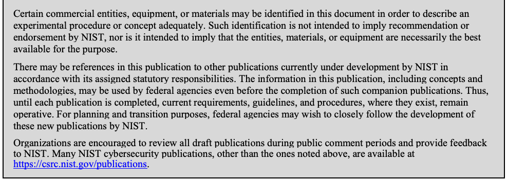
Comments on this publication may be submitted to:
本出版物へのコメントは、以下に提出することができる：
National Institute of Standards and Technology Attn: Computer Security Division, Information Technology Laboratory 100 Bureau Drive (Mail Stop 8930) Gaithersburg, MD 20899-8930 Email: sp800-204-comments@nist.gov
米国国立標準技術研究所（National Institute of Standards and Technology）宛先: Computer Security Division, Information Technology Laboratory 100 Bureau Drive (Mail Stop 8930) Gaithersburg, MD 20899-8930 Email: sp800-204-comments@nist.gov
未レビュー訳All comments are subject to release under the Freedom of Information Act (FOIA).
すべてのコメントは、情報自由法（FOIA）に基づき公開の対象となる。
Reports on Computer Systems Technology
コンピュータシステム技術に関する報告書
The Information Technology Laboratory (ITL) at the National Institute of Standards and Technology (NIST) promotes the U.S. economy and public welfare by providing technical leadership for the Nation’s measurement and standards infrastructure. ITL develops tests, test methods, reference data, proof of concept implementations, and technical analyses to advance the development and productive use of information technology. ITL’s responsibilities include the development of management, administrative, technical, and physical standards and guidelines for the cost-effective security and privacy of other than national security-related information in Federal information systems. The Special Publication 800-series reports on ITL’s research, guidelines, and outreach efforts in information system security, and its collaborative activities with industry, government, and academic organizations.
米国国立標準技術研究所（NIST）の情報技術研究所（ITL）は、国の測定および標準インフラストラクチャに対する技術的リーダーシップを提供することにより、米国経済と公共の福祉を促進している。ITLは、情報技術の開発と生産的な利用を前進させるため、テスト、テスト方法、参照データ、概念実証の実装、および技術的分析を開発している。ITLの責務には、連邦情報システムにおける国家安全保障関連以外の情報に対する費用対効果の高いセキュリティとプライバシーのための、管理的、行政的、技術的、および物理的な標準とガイドラインの開発が含まれる。Special Publication 800シリーズは、情報システムセキュリティにおけるITLの研究、ガイドライン、アウトリーチ活動、ならびに産業界、政府、学術機関との共同活動について報告している。
未レビュー訳Abstract
概要
Microservices architecture is increasingly being used to develop application systems since its smaller codebase facilitates faster code development, testing, and deployment as well as optimization of the platform based on the type of microservice, support for independent development teams, and the ability to scale each component independently. Microservices generally communicate with each other using Application Programming Interfaces (APIs), which requires several core features to support complex interactions between a substantial number of components. These core features include authentication and access management, service discovery, secure communication protocols, security monitoring, availability/resiliency improvement techniques (e.g., circuit breakers), load balancing and throttling, integrity assurance techniques during induction of new services, and handling of session persistence. Additionally, the core features could be bundled or packaged into architectural frameworks such as API gateways and service mesh. The purpose of this document is to analyze the multiple implementation options available for each individual core feature and configuration options in architectural frameworks, develop security strategies that counter threats specific to microservices, and enhance the overall security profile of the microservices-based application.
マイクロサービスアーキテクチャは、コードベースが小さいため、コードの開発、テスト、展開の迅速化に加えて、マイクロサービスのタイプに基づくプラットフォームの最適化、独立した開発チームのサポート、各コンポーネントを個別に拡張できる機能が促進されることから、アプリケーションシステムの開発にますます使用されるようになっている。マイクロサービスは通常、アプリケーションプログラミングインターフェース（API）を使用して相互に通信するため、多数のコンポーネント間の複雑な相互作用をサポートするためのいくつかのコア機能が必要となる。これらのコア機能には、認証およびアクセス管理、サービスディスカバリ、セキュア通信プロトコル、セキュリティ監視、可用性／耐障害性の向上技術（例：サーキットブレーカー）、ロードバランシングおよびスロットリング、新規サービスの導入時における完全性保証技術、ならびにセッション維持の処理が含まれる。さらに、これらのコア機能は、APIゲートウェイやサービスメッシュなどのアーキテクチャフレームワークにバンドルまたはパッケージ化することができる。本書の目的は、個々のコア機能に対して利用可能な複数の実装オプションおよびアーキテクチャフレームワークにおける構成オプションを分析し、マイクロサービス特有の脅威に対抗するセキュリティ戦略を策定し、マイクロサービスベースのアプリケーションの全体的なセキュリティプロファイルを強化することである。
Keywords
キーワード
未レビュー訳microservices; load balancing; circuit breaker; Application Programming Interface (API); API gateway; service mesh; proxy.
マイクロサービス；ロードバランシング；サーキットブレーカー；アプリケーションプログラミングインターフェース（API）；APIゲートウェイ；サービスメッシュ；プロキシ。
未レビュー訳ii
未レビュー訳Acknowledgements
謝辞
未レビュー訳The author, Ramaswamy Chandramouli wishes to thank David Bohannon, Travis Biehn, John Tapp and Jamie Boote from Synopsys and Simon Moffatt of Forgerock for detailed comments on various topics. He also wishes to convey his thanks to Saa Edward Fillie of Wangoh Dynamics Technologies, Carlo de Guzman of DSD Laboratories, and Wei Lien Dang of StackRox. Special thanks to Doug McDorman of T-Mobile for valuable in-line comments and for providing additions to bibliography. Last but not the least, he expresses his thanks to Isabel Van Wyk of G2-Inc for her detailed editorial review.
著者のRamaswamy Chandramouliは、様々なトピックに関する詳細なコメントをいただいたSynopsysのDavid Bohannon氏、Travis Biehn氏、John Tapp氏、Jamie Boote氏、およびForgerockのSimon Moffatt氏に感謝の意を表す。また、Wangoh Dynamics TechnologiesのSaa Edward Fillie氏、DSD LaboratoriesのCarlo de Guzman氏、StackRoxのWei Lien Dang氏にも感謝の意を表す。貴重なインラインコメントをいただき、参考文献への追加情報をご提供いただいたT-MobileのDoug McDorman氏には特に感謝する。最後になるが、詳細な編集レビューを行っていただいたG2-IncのIsabel Van Wyk氏に感謝の意を表す。
未レビュー訳Patent Disclosure Notice
特許開示に関する通知
未レビュー訳NOTICE: NIST’s Information Technology Laboratory (ITL) has requested that holders of patent claims whose use may be required for compliance with the guidance or requirements of this publication disclose such patent claims to ITL. However, holders of patents are not obligated to respond to ITL calls for patents and ITL has not undertaken a patent search in order to identify which, if any, patents may apply to this publication.
通知：NISTの情報技術研究所（ITL）は、本出版物のガイダンスまたは要件への準拠に使用が必要となる可能性のある特許クレームの保有者に対し、そのような特許クレームをITLに開示するよう要請した。ただし、特許保有者には特許に関するITLの呼びかけに応じる義務はなく、ITLは本出版物に適用される可能性のある特許（もしあれば）を特定するための特許調査を実施していない。
As of the date of publication and following call(s) for the identification of patent claims whose use may be required for compliance with the guidance or requirements of this publication, no such patent claims have been identified to ITL.
発行日時点において、本出版物のガイダンスまたは要件への準拠に使用が必要となる可能性のある特許クレームの特定に関する呼びかけの後、そのような特許クレームはITLに対して特定されていない。
No representation is made or implied by ITL that licenses are not required to avoid patent infringement in the use of this publication.
本出版物の使用において特許侵害を回避するためにライセンスが不要である旨を、ITLが表明または暗示することはない。
未レビュー訳iii
iii
未レビュー訳Executive Summary
エグゼクティブサマリー
未レビュー訳The microservices paradigm is being increasingly used for designing and deploying large-scale application systems in both cloud-based and enterprise infrastructures. The resulting application system consists of relatively small, loosely coupled entities or components called microservices that communicate with each other using lightweight communication protocols.
マイクロサービスパラダイムは、クラウドベースおよびエンタープライズインフラストラクチャの両方において、大規模なアプリケーションシステムの設計および展開にますます使用されるようになっている。その結果として得られるアプリケーションシステムは、軽量な通信プロトコルを使用して相互に通信を行う、マイクロサービスと呼ばれる比較的小規模で疎結合なエンティティまたはコンポーネントで構成される。
未レビュー訳Incentives to design and deploy a microservices-based application system include: (a) agility in development due to relatively small and less complex codebases since each one typically implements a single business function; (b) independence among teams in the development process thanks to the loosely coupled nature of microservices; and (c) availability of deployment tools that provide infrastructure services such as authentication, access control, service discovery and communication, and load balancing.
マイクロサービスベースのアプリケーションシステムを設計および展開する動機としては、以下が挙げられる。(a) 各コードベースが通常は単一のビジネス機能を実装するため、比較的小規模かつ複雑さの少ないコードベースによる開発の俊敏性、(b) マイクロサービスの疎結合な性質による開発プロセスにおけるチーム間の独立性、および (c) 認証、アクセス制御、サービスディスカバリと通信、ロードバランシングなどのインフラストラクチャサービスを提供する展開ツールの利用可能性。
未レビュー訳Despite several facilitating technologies (e.g., orchestration), there are many challenges to be addressed in the development and deployment of a microservices-based application. Network security, reliability, and latency are critical factors since every transaction implemented using this type of system will involve the transmission of messages across a network. Further, the presence of multiple microservices exposes a large attack surface.
いくつかの促進技術（オーケストレーションなど）があるにもかかわらず、マイクロサービスベースのアプリケーションの開発および展開においては対処すべき多くの課題が存在する。このタイプのシステムを使用して実装されたすべてのトランザクションにはネットワークを介したメッセージ送信が伴うため、ネットワークセキュリティ、信頼性、および遅延は極めて重要な要素である。さらに、複数のマイクロサービスの存在は広大な攻撃対象領域（アタックサーフェス）を露出させる。
未レビュー訳The goal of this document is to outline strategies for the secure deployment of a microservices-based application by analyzing implementation options for state of practice core features, configuration options for architectural frameworks such as Application Programming Interface (API) gateway and service mesh, and countermeasures for microservices-specific threats.
本ドキュメントの目的は、現行の実践水準におけるコア機能の実装オプション、Application Programming Interface（API）ゲートウェイやサービスメッシュなどのアーキテクチャフレームワークの構成オプション、およびマイクロサービス固有の脅威に対する対策を分析することにより、マイクロサービスベースのアプリケーションを安全に展開するための戦略を概説することである。
未レビュー訳iv
未レビュー訳Table of Contents
目次
未レビュー訳Executive Summary ..................................................................................................... iv
エグゼクティブサマリー ..................................................................................................... iv
未レビュー訳1 Introduction — 1
1 はじめに — 1
1.1 Scope — 1
1.1 適用範囲 — 1
未レビュー訳1.2 Audience — 1
1.2 対象読者 — 1
1.3 Relationship to other NIST Guidance Documents — 1
1.3 他のNISTガイダンス文書との関係 — 1
未レビュー訳1.4 Methodology and Organization — 2
1.4 方法論と構成 — 2
未レビュー訳2 Microservices-based Application Systems: Technology Background — 3
2 マイクロサービスベースのアプリケーションシステム：技術的背景 — 3
2.1 Microservices: A Conceptual View — 3
2.1 マイクロサービス：概念的観点 — 3
未レビュー訳2.2 Microservices: Design Principles — 3
2.2 マイクロサービス：設計原則 — 3
未レビュー訳2.3 Business Drivers — 4
2.3 ビジネスドライバー — 4
未レビュー訳2.4 Building Blocks — 4
2.4 ビルディングブロック — 4
未レビュー訳2.5 Microservices: Interaction Styles — 5
2.5 マイクロサービス: インタラクションスタイル — 5
未レビュー訳2.6 Microservices: State of the Practice Core Features — 7
2.6 マイクロサービス: 実践の現状における中核機能 — 7
未レビュー訳2.7 Microservices: Architectural Frameworks — 9
2.7 マイクロサービス: アーキテクチャフレームワーク — 9
未レビュー訳API Gateway — 9
APIゲートウェイ — 9
未レビュー訳Service Mesh — 11
サービスメッシュ — 11
未レビュー訳2.8 Comparison with Monolithic Architecture — 11
2.8 モノリシックアーキテクチャとの比較 — 11
未レビュー訳2.9 Comparison with Service-Oriented Architecture (SOA) — 12
2.9 サービス指向アーキテクチャ（SOA）との比較 — 12
未レビュー訳2.10 Advantages of Microservices — 12
2.10 マイクロサービスの利点 — 12
未レビュー訳2.11 Disadvantages of Microservices — 13
2.11 マイクロサービスの欠点 — 13
未レビュー訳3 Microservices: Threat Background — 14
3 マイクロサービス：脅威の背景 — 14
未レビュー訳3.1 Review of Threat Sources Landscape — 14
3.1 脅威源のランドスケープのレビュー — 14
未レビュー訳3.2 Microservices-specific Threats — 15
3.2 マイクロサービス特有の脅威 — 15
未レビュー訳Service Discovery Mechanism Threats — 15
サービスディスカバリメカニズムの脅威 — 15
未レビュー訳Internet-based Attacks — 15
インターネットベースの攻撃 — 15
未レビュー訳Cascading Failure — 16
連鎖障害 — 16
未レビュー訳4 Security Strategies for Implementing Core Features and Countering Threats
4 コア機能の実装と脅威への対抗のためのセキュリティ戦略
未レビュー訳17
未レビュー訳4.1 Strategies for Identity and Access Management — 17
4.1 アイデンティティおよびアクセス管理のための戦略 — 17
4.2 Strategies for Service Discovery Mechanism — 19
4.2 サービス検出メカニズムのための戦略 — 19
未レビュー訳4.3 Strategies for Secure Communication Protocols — 21
4.3 セキュア通信プロトコルのための戦略 — 21
未レビュー訳v
未レビュー訳4.4 Strategies for Security Monitoring — 22
4.4 セキュリティ監視のための戦略 — 22
未レビュー訳4.5 Availability/Resiliency Improvement Strategies — 22
4.5 可用性／耐障害性（レジリエンス）向上のための戦略 — 22
未レビュー訳Analysis of Circuit Breaker implementation options — 23
サーキットブレーカー実装オプションの分析 — 23
Strategies for Load Balancing — 24
ロードバランシング（負荷分散）のための戦略 — 24
未レビュー訳Rate Limiting (Throttling) — 24
レート制限（スロットリング） — 24
未レビュー訳4.6 Integrity Assurance Strategies — 25
4.6 完全性保証戦略 — 25
未レビュー訳4.7 Countering Internet-based Attacks — 26
4.7 インターネットベースの攻撃への対策 — 26
未レビュー訳5 Security Strategies for Architectural Frameworks in Microservices — 27
5 マイクロサービスにおけるアーキテクチャフレームワークのためのセキュリティ戦略 — 27
未レビュー訳Appendix A— Differences between Monolithic Application and Microservices-
付録A— モノリシックアプリケーションとマイクロサービスの相違点-
未レビュー訳based Application — 29
ベースのアプリケーション — 29
未レビュー訳A.1 Design and Deployment Differences — 29
A.1 設計およびデプロイメントの相違点 — 29
未レビュー訳A.1.1 An Example Application to Illustrate the Design and Deployment
A.1.1 設計およびデプロイメントを説明するためのサンプルアプリケーション
未レビュー訳differences — 30
相違点 — 30
未レビュー訳A.2 Run-time Differences — 31
A.2 実行時の相違点 — 31
Appendix B— Traceability of Security Strategies to Microservices Architectural
付録B— マイクロサービスアーキテクチャに対するセキュリティ戦略の追跡可能性
未レビュー訳Features — 33
特徴 — 33
未レビュー訳Appendix C— References — 41
付録C— 参考文献 — 41
未レビュー訳vi
未レビュー訳1 Introduction
1 はじめに
未レビュー訳Application systems are increasingly developed and deployed using the microservices paradigm due to advantages such as agility, flexibility, scalability, and availability of tools for automating the underlying processes. However, the tremendous increase in the number of components in a microservices-based application system combined with complex network environments comprised of various interaction styles among components call for several core infrastructure features to be implemented either alone or bundled/packaged into architectural frameworks, such as Application Programming Interface (API) gateway and service mesh. The objective of this document is to perform an analysis of the implementation options for core features, configuration options for architectural frameworks, and countermeasures for microservice-specific threats and outline security strategies.
俊敏性、柔軟性、スケーラビリティ、そして基盤となるプロセスの自動化ツールの可用性といった利点により、マイクロサービスパラダイムを使用して開発および展開されるアプリケーションシステムが増加している。しかし、マイクロサービスベースのアプリケーションシステムにおけるコンポーネント数の大幅な増加と、コンポーネント間の多様な相互作用スタイルで構成される複雑なネットワーク環境が組み合わさることで、いくつかのコアインフラ機能について、単体で実装するか、あるいはアプリケーションプログラミングインターフェース（API）ゲートウェイやサービスメッシュなどのアーキテクチャフレームワークにバンドル/パッケージ化して実装することが求められる。本書の目的は、コア機能の実装オプション、アーキテクチャフレームワークの構成オプション、およびマイクロサービス固有の脅威に対する対策の分析を実施し、セキュリティ戦略の概要を示すことである。
未レビュー訳1.1 Scope
1.1 対象範囲
This document will not discuss the various tools used in the deployment of microservices-based application systems. Discussion of core features and architectural frameworks will be limited to highlighting issues relevant to secure implementation. The core focus is on the methodology to develop security strategies for microservices-based applications through the following three fundamental steps:
本書では、マイクロサービスベースのアプリケーションシステムの展開に使用される多様なツールについては論じない。コア機能およびアーキテクチャフレームワークの議論は、安全な実装に関連する問題の強調に限定する。主な焦点は、次の3つの基本ステップを通じてマイクロサービスベースのアプリケーションのセキュリティ戦略を策定する方法論にある。
•Study of the technology behind microservices-based application systems focusing on design principles, basic building blocks, and associated infrastructure.
•設計原則、基本的なビルディングブロック、および関連するインフラに焦点を当てた、マイクロサービスベースのアプリケーションシステムの基盤となる技術の調査。
•Focused review of the threat background specific to the operating environment of microservices.
•マイクロサービスの運用環境に特有の脅威の背景に焦点を絞ったレビュー。
•Analysis of implementation options related to state of practice core features, configuration options related to architectural frameworks such as API gateway and service mesh and countermeasures for microservices-specific threats for developing security strategies.
•セキュリティ戦略を策定するための、実践水準（state of practice）のコア機能に関連する実装オプション、APIゲートウェイやサービスメッシュなどのアーキテクチャフレームワークに関連する構成オプション、およびマイクロサービス固有の脅威に対する対策の分析。
1.2 Audience
1.2 対象読者
The target audience for the security strategies discussed in this document includes:
本文書で論じるセキュリティ戦略の想定読者には、以下が含まれる：
未レビュー訳•Chief Security Officer (CSO) or Chief Technology Officer (CTO) of an IT department in a private enterprise or government agency who wishes to develop enterprise infrastructures to host distributed systems based on microservices architecture; and •Application architects who wish to design a microservices-based application system.
•マイクロサービスアーキテクチャに基づく分散システムをホストするためのエンタープライズインフラストラクチャの開発を希望する、民間企業または政府機関のIT部門の最高セキュリティ責任者（CSO）または最高技術責任者（CTO）、および •マイクロサービスベースのアプリケーションシステムの設計を希望するアプリケーションアーキテクト。
未レビュー訳1.3 Relationship to other NIST Guidance Documents
1.3 他のNISTガイダンス文書との関係
This guidance document focuses on a class of application based on a specific architecture. However, since an essential architectural component—the microservice—can be implemented inside a container, the security guidance and recommendations related to application container technology may also serve as relevant security strategies for the application architecture discussed in this document. Such guidance includes: 1
本文書は、特定のアーキテクチャに基づくアプリケーションクラスに焦点を当てている。しかしながら、不可欠なアーキテクチャコンポーネントであるマイクロサービスはコンテナ内に実装できるため、アプリケーションコンテナ技術に関連するセキュリティガイダンスおよび推奨事項は、本文書で論じるアプリケーションアーキテクチャに関連するセキュリティ戦略としても役立つ場合がある。そのようなガイダンスには以下が含まれる： 1
未レビュー訳•NIST Special Publication (SP) 800-190, Application Container Security Guide; and
•NIST Special Publication (SP) 800-190, Application Container Security Guide、および
未レビュー訳•NIST Interagency or Internal Report (NISTIR) 8176, Security Assurance Requirements for Linux Application Container Deployments.
•NIST Interagency or Internal Report (NISTIR) 8176, Security Assurance Requirements for Linux Application Container Deployments。
1.4 Methodology and Organization
1.4 方法論および構成
Since microservices-based application systems encompass diverse technologies (e.g., server virtualization, containers, cloud middleware), the focus here is on core features of this application class and the architectural frameworks that bundle or package them. The threat analysis approach involves taking a macro view of the entire deployment stack of microservices-based application systems and the layer at which these core features are located. The threats specific to those features are identified, and the overall approach for developing security strategies is to analyze the multiple implementations for core features and the architectural frameworks as well as ensure that those implementation options counter microservices-specific threats. The roadmap for the materials used in this methodology is as follows:
マイクロサービスベースのアプリケーションシステムは多様な技術（例：サーバ仮想化、コンテナ、クラウドミドルウェア）を包含しているため、ここではこのアプリケーションクラスのコア機能と、それらをバンドルまたはパッケージ化するアーキテクチャフレームワークに焦点を当てる。脅威分析のアプローチには、マイクロサービスベースのアプリケーションシステムのデプロイメントスタック全体およびこれらのコア機能が位置する層をマクロな視点から捉えることが含まれる。それらの機能に特有の脅威が特定され、セキュリティ戦略を策定するための全体的なアプローチは、コア機能およびアーキテクチャフレームワークの複数の実装を分析するとともに、それらの実装オプションがマイクロサービス特有の脅威に対抗できることを確実にすることである。この方法論で使用される資料のロードマップは以下のとおりである。
未レビュー訳•Review of all state of practice core features that form the infrastructure for microservices (Sec. 2.6);
•マイクロサービスのインフラストラクチャを形成するすべての実践水準（state of practice）のコア機能のレビュー（Sec. 2.6）；
未レビュー訳•Review of the layers in the deployment stack, location of the core features in those layers, and identification of microservices-specific threats (Sec. 3);
•デプロイメントスタック内の層、それらの層におけるコア機能の配置、およびマイクロサービス特有の脅威の特定に関するレビュー（Sec. 3）；
•Analysis of all different implementation options for these core features and outline security strategies based on these implementation options for core features (Sec. 4); and
•これらのコア機能に対するすべての異なる実装オプションの分析、およびコア機能のこれらの実装オプションに基づくセキュリティ戦略の概説（Sec. 4）；および
•Review of all architectural frameworks that bundle several core features as a single product and outline security strategies based on configuration options for those frameworks (Sec. 5).
•複数のコア機能を単一の製品としてバンドルするすべてのアーキテクチャフレームワークのレビュー、およびそれらのフレームワークの構成オプションに基づくセキュリティ戦略の概説（Sec. 5）。
A slightly more detailed summarization of the contents of the various sections in this document is as follows:
本書の各セクションの内容に関するもう少し詳細な要約は以下のとおりである。
未レビュー訳•Section 2 provides a high-level but expansive overview of microservices-based application systems, starting with a conceptual view followed by design principles, business drivers, building blocks, component interaction styles, state of practice core features, and architectural frameworks;
•Section 2では、概念的な視点から始まり、設計原則、ビジネス推進要因、ビルディングブロック、コンポーネント相互作用スタイル、実践水準（state of practice）のコア機能、およびアーキテクチャフレームワークへと続く、マイクロサービスベースのアプリケーションシステムの高レベルでありながら広範な概要を提供する；
•Section 3 provides a stack level view of the threat background and some threats that are specific to the microservices environment;
•Section 3では、脅威の背景に関するスタックレベルの視点と、マイクロサービス環境に特有のいくつかの脅威を提供する；
•Section 4 contains analysis information pertaining to various state of practice core features for supporting a microservices-based application and outlines the security strategies for implementing the core features based on analysis of implementation options; and
•Section 4には、マイクロサービスベースのアプリケーションをサポートするための様々な実践水準（state of practice）のコア機能に関する分析情報が含まれ、実装オプションの分析に基づいてコア機能を実装するためのセキュリティ戦略の概要が述べられる；および
•Section 5 contains analysis information pertaining to architectural frameworks that bundle core features needed in the infrastructure for microservices-based applications and outlines the security strategies for configuring the architectural frameworks.
•第5節には、マイクロサービスベースのアプリケーション用インフラストラクチャで必要とされるコア機能を束ねるアーキテクチャフレームワークに関する分析情報が含まれ、そのアーキテクチャフレームワークを構成するためのセキュリティ戦略の概要が述べられている。
未レビュー訳2
未レビュー訳2 Microservices-based Application Systems: Technology Background
2 マイクロサービスベースのアプリケーションシステム：技術的背景
未レビュー訳In this section, the technology behind the development and deployment of a microservices-based application system will be described using the underlying design drivers or principles, the artifacts that constitute the building blocks, and the different ways the building blocks can be configured to produce different deployment options. This is not meant to be a comprehensive description of the technology but provides sufficient information about components and concepts to facilitate the identification of security threats and the development of secure implementation strategies for a microservices-based application system.
本節では、マイクロサービスベースのアプリケーションシステムの開発および展開の背後にある技術について、基礎となる設計要因（ドライバ）や原則、構成要素となる成果物、および様々な展開オプションを生み出すために構成要素を構成する様々な方法を用いて説明する。これは技術の包括的な説明を意図したものではなく、マイクロサービスベースのアプリケーションシステムにおけるセキュリティ脅威の特定とセキュアな実装戦略の開発を促進するための、コンポーネントと概念に関する十分な情報を提供するものである。
未レビュー訳2.1 Microservices: A Conceptual View
2.1 マイクロサービス：概念的視点
A microservices-based application system consists of multiple components (microservices) that communicate with each other through synchronous remote procedure calls or an asynchronous messaging system. Each microservice typically implements one (rarely more) distinct business process or functionality (e.g., storing customer details, storing and displaying a product catalog, customer order processing etc.). Each microservice is a mini-application that has its own business logic and various adapters for carrying out functions such as database access and messaging. Some microservices would expose a Representational State Transfer (REST)ful API [1] that is consumed by other microservices or by the application’s clients [2]. Other microservices might implement a web User Interface (UI). At runtime, a microservice instance may be configured to run as a process in an application server, in a virtual machine (VM), or in a container.
マイクロサービスベースのアプリケーションシステムは、同期リモートプロシージャコールまたは非同期メッセージングシステムを介して相互に通信する複数のコンポーネント（マイクロサービス）で構成される。各マイクロサービスは通常、1つの（稀に複数の）異なるビジネスプロセスまたは機能（例：顧客詳細情報の保存、製品カタログの保存および表示、顧客注文処理など）を実装する。各マイクロサービスは、独自のビジネスロジックと、データベースアクセスやメッセージングなどの機能を実行するための様々なアダプターを備えたミニアプリケーションである。一部のマイクロサービスは、他のマイクロサービスやアプリケーションのクライアントによって利用されるRESTful（Representational State Transfer）API [1] を公開する [2]。その他のマイクロサービスは、Webユーザーインターフェース（UI）を実装する場合がある。実行時には、マイクロサービスインスタンスは、アプリケーションサーバー内のプロセス、仮想マシン（VM）、またはコンテナ内で実行されるように構成される場合がある。
未レビュー訳原本PDFの抜粋画像
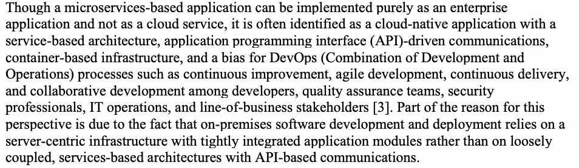
2.2 Microservices: Design Principles
2.2 マイクロサービス：設計原則
The design of a microservice is based on the following drivers [4]:
マイクロサービスの設計は、以下の推進要因に基づいている [4]：
•Each microservice must be managed, replicated, scaled, upgraded, and deployed independently of other microservices.
•各マイクロサービスは、他のマイクロサービスから独立して管理、複製、スケーリング、アップグレード、および展開されなければならない。
•Each microservice must have a single function and operate in a bounded context (i.e., have limited responsibility and dependence on other services).
•各マイクロサービスは単一の機能を持ち、境界づけられたコンテキスト内で動作しなければならない（すなわち、限定された責任と他のサービスへの依存性を持つ）。
•All microservices should be designed for constant failure and recovery and must therefore be as stateless as possible.
•すべてのマイクロサービスは絶え間ない障害と回復を想定して設計されるべきであり、したがって可能な限りステートレスでなければならない。
未レビュー訳3
未レビュー訳•One should reuse existing trusted services (e.g., databases, caches, directories) for state management.
•状態管理には、信頼できる既存のサービス（例：データベース、キャッシュ、ディレクトリ）を再利用すべきである。
未レビュー訳These drivers, in turn, result in the following design principles for a microservice:
これらの推進要因は、結果としてマイクロサービスの以下の設計原則につながる：
•Autonomy,
•自律性、
•Loose coupling,
•疎結合、
•Re-use,
•再利用性、
•Composability,
•構成可能性（Composability）、
•Fault tolerance,
•フォールトトレランス（耐障害性）、
•Discoverability, and
•発見可能性、および
•APIs alignment with business processes.
•ビジネスプロセスとAPIの整合性。
2.3 Business Drivers
2.3 ビジネス要因
Though the business drivers for deployment of microservices-based application systems are only marginally related to the theme of this document, it is useful to identify and state those that are relevant from the point of view of user and organizational behavior [5]:
マイクロサービスベースのアプリケーションシステムを配備するビジネス上の推進要因は、本文書のテーマとはわずかに関連しているに過ぎないものの、ユーザーおよび組織の行動の観点から関連性のあるものを特定し述べることは有益である [5]：
•Ubiquitous access: users want access to applications from multiple client devices (e.g., browsers, mobile devices).
•ユビキタスアクセス：ユーザーは複数のクライアントデバイス（例：ブラウザ、モバイルデバイス）からアプリケーションへのアクセスを求めている。
未レビュー訳•Scalability: applications must be highly scalable to maintain availability in the face of an increasing number of users and/or increased rate of usage from the existing user base.
•スケーラビリティ：ユーザー数の増加や既存のユーザーベースからの利用頻度の増加に直面しても可用性を維持するために、アプリケーションは高度にスケーラブルでなければならない。
未レビュー訳•Agile development: organizations want frequent updates to quickly respond to organizational (process and structural) changes and market demands.
•アジャイル開発：組織（プロセスおよび構造）の変更や市場の需要に迅速に対応するために、組織は頻繁な更新を求めている。
2.4 Building Blocks
2.4 構成要素
Microservices-based applications (e.g., distributed enterprise or web applications [1]) are built using an architectural style or design pattern that is not restricted to any specific technology and is comprised of small independent entities (end points) that communicate with each other using lightweight mechanisms. These end points are implemented using well-defined APIs. There are several types of API endpoints, such as Simple Object Access Protocol (SOAP) or REST ( Hypertext Transfer Protocol (HTTP) protocol). Each of the small independent entities provides a distinct business capability called a “service” and may have its own data store or repository. Access to these services is provided by various platforms or client types, such as web browsers or mobile devices, using a component called the “client.” Together, the component services and the client form the complete microservices-based application system. The services in such a system may be classified as:
マイクロサービスベースのアプリケーション（例：分散エンタープライズまたはWebアプリケーション [1]）は、特定の技術に制限されず、軽量なメカニズムを使用して相互に通信する小規模で独立したエンティティ（エンドポイント）から構成されるアーキテクチャスタイルまたは設計パターンを使用して構築される。これらのエンドポイントは明確に定義されたAPIを使用して実装される。APIエンドポイントには、Simple Object Access Protocol（SOAP）やREST（Hypertext Transfer Protocol（HTTP）プロトコル）など、いくつかのタイプが存在する。小規模で独立したエンティティのそれぞれは「サービス」と呼ばれる個別のビジネス機能を提供し、独自のデータストアやリポジトリを持つ場合がある。これらのサービスへのアクセスは、「クライアント」と呼ばれるコンポーネントを使用して、Webブラウザやモバイルデバイスなどの様々なプラットフォームやクライアントタイプによって提供される。構成要素であるサービスとクライアントが一体となって、完全なマイクロサービスベースのアプリケーションシステムを形成する。このようなシステムのサービスは、以下のように分類できる：
未レビュー訳•Application-functionality services.
•アプリケーション機能サービス。
•Infrastructure services (called “core features” in this document) implemented either as stand-alone features or bundled into architectural frameworks (e.g., API gateway, service mesh). These include, but are not limited to, authentication and authorization, service registration and discovery, and security monitoring. 4
•スタンドアロン機能として、またはアーキテクチャフレームワーク（例：APIゲートウェイ、サービスメッシュ）にバンドルされて実装されるインフラストラクチャサービス（本文書では「コア機能」と呼ばれる）。これらには認証および認可、サービスの登録および検出、セキュリティ監視が含まれるが、これらに限定されない。4
未レビュー訳In a microservices-based application system, each of the multiple, collaborative services can be built using different technologies. This promotes the concept of technical heterogeneity, which means that each service in a microservices-based application system may be written in a different programming language, development platform, or using different data storage technologies. This concept enables developers to choose the right tool or language depending on the type of service. Thus, in a single microservices-based application system, the constituting services may be built using different languages (e.g., Ruby, Golang, Java) and may be hosting different stores (e.g., document datastore, graphical Database (DB), or multimedia DB). Each component service is developed by a team–a microservice or DevOps team—which provides all of the development and operational requirements for that service with a high degree of autonomy regarding development and deployment techniques so long as the service functionality or service contract is agreed upon [6].
マイクロサービスベースのアプリケーションシステムでは、連携する複数のサービスのそれぞれを異なる技術を用いて構築できる。これにより技術的異質性（technical heterogeneity）の概念が促進される。これは、マイクロサービスベースのアプリケーションシステム内の各サービスが、異なるプログラミング言語や開発プラットフォームで記述されたり、異なるデータストレージ技術を使用したりできることを意味する。この概念により、開発者はサービスの種類に応じて適切なツールや言語を選択できるようになる。したがって、単一のマイクロサービスベースのアプリケーションシステムにおいて、それを構成するサービスは異なる言語（例：Ruby、Golang、Java）を使用して構築される場合があり、異なるストア（例：ドキュメントデータストア、グラフデータベース（DB）、またはマルチメディアDB）をホストしている場合がある。各コンポーネントサービスは、サービスの機能またはサービス契約が合意されている限り、開発および展開の技術に関して高い自律性を持ってそのサービスに関するすべての開発および運用要件を提供するチーム（マイクロサービスチームまたはDevOpsチーム）によって開発される [6]。
未レビュー訳Services in microservices are separately deployed on different nodes. The communication between them is transformed from a local function call to a remote call, which could affect system performance due to inherent latency in network communication. Thus, a lightweight communication infrastructure is required.
マイクロサービスにおけるサービスは、異なるノード上に個別に展開される。それらの間の通信はローカル関数呼び出しからリモート呼び出しへと変換され、ネットワーク通信に固有のレイテンシによってシステムパフォーマンスに影響を与える可能性がある。したがって、軽量な通信インフラストラクチャが必要とされる。
未レビュー訳Scaling can be applied selectively on those services that have performance bottlenecks due to insufficient Central Processing Unit (CPU) or memory resources, while other services can continue to be run using smaller, less expensive hardware. The functionality associated with such a service may be consumed in different ways for different purposes, thereby promoting reusability and composability. One example includes a customer database service, the contents of which are used both by shipping departments for preparing bills of lading and by accounts receivable or the billing department to send invoices.
スケーリングは、中央処理装置（CPU）またはメモリリソースの不足によりパフォーマンスのボトルネックが生じているサービスに対して選択的に適用でき、他のサービスはより小型で安価なハードウェアを使用して実行し続けることができる。このようなサービスに関連付けられた機能は、さまざまな目的のためにさまざまな方法で利用される場合があり、それによって再利用性と構成可能性が促進される。一例として顧客データベースサービスが挙げられる。その内容は、船荷証券を作成するために出荷部門によっても、請求書を送信するために売掛金管理部門または請求部門によっても使用される。
未レビュー訳2.5 Microservices: Interaction Styles
2.5 マイクロサービス：インタラクションスタイル
In monolithic applications, each component (i.e., a procedure or function) invokes another using a language-level call, such as a method or function. In microservices-based applications, each service is typically a process running in its own distinct network node that communicates with other services through an inter-process communication mechanism (IPC) [7]. Additionally, a service is defined using an interface definition language (IDL) (e.g., Swagger/OpenAPI), resulting in an artifact called the application programming interface (API). The first step in the development of a service involves writing the interface definition, which is reviewed with client developers and iterated multiple times before the implementation of the service begins. Thus, an API serves as a contract between clients and services.
モノリシックアプリケーションでは、各コンポーネント（すなわち、プロシージャまたは関数）は、メソッドや関数などの言語レベルの呼び出しを使用して別のコンポーネントを呼び出す。マイクロサービスベースのアプリケーションでは、各サービスは通常、独自の個別のネットワークノードで実行されるプロセスであり、プロセス間通信メカニズム（IPC）を通じて他のサービスと通信する [7]。さらに、サービスはインターフェース記述言語（IDL）（例：Swagger/OpenAPI）を使用して定義され、アプリケーションプログラミングインターフェース（API）と呼ばれる成果物が生成される。サービス開発の最初のステップにはインターフェース定義の作成が含まれ、これはクライアント側の開発者とともにレビューされ、サービスの実装が始まる前に複数回反復される。したがって、APIはクライアントとサービス間の契約として機能する。
未レビュー訳The choice of the IPC mechanism dictates the nature of the API [7]. Table 1provides the nature of API definitions for each IPC mechanism.
IPCメカニズムの選択によってAPIの性質が規定される [7]。表1は、各IPCメカニズムに対するAPI定義の性質を示している。
5
未レビュー訳Table 1: IPC Mechanisms and API Types
表1: IPCメカニズムとAPIタイプ
未レビュー訳| IPC Mechanism | Nature of API Definition |
| Asynchronous, message-based (e.g., Advanced Message Queuing Protocol (AMQP) or Simple (or Streaming) Text Oriented Messaging Protocol. (STOMP)) | Made up of message channels and message types |
| Synchronous request/response (e.g., HTTP-based REST or Thrift) | Made up of Uniform Resource Locators (URLs) and request and response formats |
原本PDFの抜粋画像
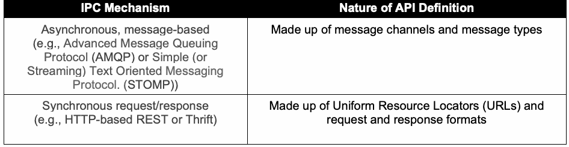
| IPCメカニズム | API定義の性質 |
| 非同期、メッセージベース（例：Advanced Message Queuing Protocol（AMQP）またはSimple (or Streaming) Text Oriented Messaging Protocol（STOMP）） | メッセージチャネルとメッセージタイプで構成 |
| 同期リクエスト/レスポンス（例：HTTPベースのRESTまたはThrift） | Uniform Resource Locator（URL）ならびにリクエストおよびレスポンスフォーマットで構成 |
There can be different types of message formats used in IPC communication: text-based and human-readable, such as JavaScript Object Notation (JSON) or Extensible Markup Language (XML), or of a purely machine-readable binary format, such as Apache Avro or Protocol buffers.
IPC通信で使用されるメッセージフォーマットにはさまざまなタイプが存在し得る。JavaScript Object Notation（JSON）やExtensible Markup Language（XML）のようなテキストベースで人間が読めるものや、Apache AvroやProtocol buffersのような純粋に機械可読なバイナリ形式のものがある。
The principle of autonomy described earlier may call for each microservice to be a self-contained entity that delivers all of the functions of an application stack. However, for a microservices-based application that provides multiple business process capabilities (e.g., an online shopping application that provides business processes such as ordering, shipping, and invoicing), a component microservice is always dependent, in some fashion, on another microservice (e.g., data). In the context of our example, the shipping microservice is dependent upon “unfulfilled orders” data in the ordering microservice to perform its function of generating a shipping or bill of lading record. Hence, there is always the need to couple microservices while still retaining autonomy. The various approaches to creating the coupling, which are often dictated by business process and IT infrastructure needs, include interaction patterns, messaging patterns, and consumption modes. In this document, the term “interaction pattern” is used, and the primary interaction patterns are as follows.
前述の自律性の原則では、各マイクロサービスがアプリケーションスタックのすべての機能を提供する自己完結型のエンティティであることが求められる場合がある。しかし、複数のビジネスプロセス機能を提供するマイクロサービスベースのアプリケーション（例えば、注文、配送、請求などのビジネスプロセスを提供するオンラインショッピングアプリケーション）では、コンポーネントマイクロサービスは常に何らかの形で別のマイクロサービス（データなど）に依存している。この例の文脈では、配送マイクロサービスは、配送記録または船荷証券記録を生成する機能を実行するために、注文マイクロサービス内の「未処理の注文」データに依存している。したがって、自律性を維持しながらもマイクロサービス同士を結合する必要性が常に生じる。多くの場合、ビジネスプロセスやITインフラストラクチャのニーズによって決定される結合を形成するための様々なアプローチには、インタラクションパターン、メッセージングパターン、コンサンプション（消費）モードが含まれる。本文書では「インタラクションパターン」という用語が使用されており、主要なインタラクションパターンは以下のとおりである。
未レビュー訳Request-reply: Two distinct types of requests include queries for the retrieval of information and commands for a state-changing business function [2]. In the first type, a microservice makes a specific request for information or to take some action and functionally waits for a response. The purpose of the request for information is retrieval for presentation purposes. In the second type, one microservice asks another to take some action involving a state-changing business function (e.g., a customer modifying their personal profile or submitting an order). In the request-reply pattern, there is a strong runtime dependency between the two microservices involved, which manifests in the following two ways:
リクエスト/リプライ：リクエストの2つの異なるタイプには、情報取得のためのクエリと、状態を変更するビジネス機能のためのコマンドが含まれる [2]。第1のタイプでは、マイクロサービスが情報または何らかのアクションの実行に対する特定のリクエストを行い、機能的にレスポンスを待つ。情報リクエストの目的は、提示目的の取得である。第2のタイプでは、あるマイクロサービスが別のマイクロサービスに対し、状態変更を伴うビジネス機能（例：顧客による個人プロフィールの変更や注文の送信）に関する何らかのアクションを実行するよう要求する。リクエスト/リプライパターンでは、関係する2つのマイクロサービス間に強力なランタイム依存関係が存在し、それは次の2つの形で現れる。
•One microservice can execute its function only when the other microservice is available.
•一方のマイクロサービスは、もう一方のマイクロサービスが利用可能である場合にのみその機能を実行できる。
•The microservice making the request must ensure that the request has been successfully delivered to the target microservice.
•リクエストを行うマイクロサービスは、ターゲットのマイクロサービスにリクエストが正常に配信されたことを確認しなければならない。
未レビュー訳Because of the nature of communication in the request-reply protocol, a synchronous communication protocol, such as HTTP, is used. If the microservice is implemented with a REST API, the messages between the microservices become HTTP REST API calls. The REST APIs are often defined using a standardized language, such as RAML (RESTful API Modeling
リクエスト/リプライプロトコルにおける通信の性質上、HTTPなどの同期通信プロトコルが使用される。マイクロサービスがREST APIで実装されている場合、マイクロサービス間のメッセージはHTTP REST API呼び出しになる。REST APIは多くの場合、RAML（RESTful API Modeling
未レビュー訳6
未レビュー訳Language), which was developed for microservice interface definition and publication. HTTP is a blocking type of communication wherein the client that initiates a request can continue its task only when it receives a response.
Language）であり、マイクロサービスのインターフェース定義および公開のために開発された。HTTPはブロッキング型の通信であり、リクエストを開始したクライアントは、レスポンスを受信したときにのみタスクを継続できる。
未レビュー訳Publish-Subscribe: This pattern is used when microservices need to collaborate for the realization of a complex business process or transaction. This is also called a business domain event-driven approach or domain event subscription approach. In this pattern, a microservice registers itself or subscribes to business domain events (e.g., interested in specific information or being able to handle certain requests), which are published to a message broker through an event-bus interface. These microservices are built using event-driven APIs and use asynchronous messaging protocols, such as Message Queuing Telemetry Transport (MQTT), Advanced Message Queuing Protocol (AMQP), and Kafka Messaging, which enable support for notifications and subscriptions. In asynchronous protocols, the message sender does not typically wait for a response but simply sends the message to a message agent (e.g., RabbitMQ queue). One of the use cases for this approach is the propagation of data updates to multiple microservices based on certain events [8].
パブリッシュ・サブスクライブ：このパターンは、マイクロサービスが複雑なビジネスプロセスまたはトランザクションの実現のために連携する必要がある場合に使用される。これは、ビジネスドメインイベント駆動型アプローチまたはドメインイベントサブスクリプションアプローチとも呼ばれる。このパターンでは、マイクロサービスはビジネスドメインイベント（例：特定の情報への関心がある、または特定のリクエストを処理できること）に自身を登録またはサブスクライブし、それらのイベントはイベントバスインターフェースを通じてメッセージブローカーにパブリッシュされる。これらのマイクロサービスはイベント駆動型APIを使用して構築され、通知およびサブスクリプションのサポートを可能にするMessage Queuing Telemetry Transport（MQTT）、Advanced Message Queuing Protocol（AMQP）、Kafka Messagingなどの非同期メッセージングプロトコルを使用する。非同期プロトコルでは、メッセージ送信者は通常レスポンスを待たず、単にメッセージエージェント（例：RabbitMQキュー）にメッセージを送信する。このアプローチのユースケースの1つは、特定のイベントに基づいた複数のマイクロサービスへのデータ更新の伝播である [8]。
未レビュー訳2.6 Microservices: State of the Practice Core Features
2.6 マイクロサービス：実践水準のコア機能
The criticality of the communication infrastructure in a microservices-based application environment calls for several sophisticated capabilities to be provided as core features in many deployments. As already stated, many of these features can be implemented either stand-alone or bundled together in architectural frameworks such as an API gateway or service mesh. Even within the API gateway, these features can be implemented through service composition or direct implementation within the code base. These features include but are not limited to authentication, access control, service discovery, load balancing, response caching, application-aware health checks, and monitoring [2]. A brief description of these features [5] includes:
マイクロサービスベースのアプリケーション環境における通信インフラストラクチャの重要性から、多くの導入環境においてコア機能としていくつかの高度な機能が提供されることが求められる。前述のとおり、これらの機能の多くは、スタンドアロンで実装することも、APIゲートウェイやサービスメッシュなどのアーキテクチャフレームワーク内に一括して組み込むこともできる。APIゲートウェイ内であっても、これらの機能はサービスの構成やコードベース内での直接的な実装を通じて実装できる。これらの機能には、認証、アクセス制御、サービスディスカバリ、負荷分散、レスポンスキャッシング、アプリケーション対応のヘルスチェック、モニタリングなどが含まれるが、これらに限定されない [2]。これらの機能の概要 [5] は以下のとおりである：
未レビュー訳•Authentication and access control: Authentication and access policy may vary depending on the type of APIs exposed by microservices—some may be public APIs; some may be private APIs; and some may be partner APIs, which are available only for business partners.
•認証とアクセス制御：認証およびアクセスポリシーは、マイクロサービスによって公開されるAPIのタイプによって異なる場合がある。一部はパブリックAPI、一部はプライベートAPI、そして一部はビジネスパートナーのみが利用可能なパートナーAPIである場合がある。
•Service Discovery: In legacy distributed systems, there are multiple services configured to operate at designated locations (IP address and port number). In the microservices-based application, the following scenario exists and calls for a robust service discovery mechanism: a) There are a substantial number of services and many instances associated with each service with dynamically changing locations. b) Each of the microservices may be implemented in VMs or as containers, which may be assigned dynamic IP addresses, especially when they are hosted in an Infrastructure as a Service (IAAS) or Software as a Service (SAAS) cloud service. c) The number of instances associated with a service can vary based on the load fluctuations using features such as autoscaling.
•サービスディスカバリ：従来の分散システムでは、指定された場所（IPアドレスおよびポート番号）で動作するように構成された複数のサービスが存在する。マイクロサービスベースのアプリケーションでは、以下のシナリオが存在し、堅牢なサービスディスカバリメカニズムが求められる。a) 動的に変化する場所を持つ相当数のサービスと、各サービスに関連付けられた多数のインスタンスが存在する。b) 各マイクロサービスはVMまたはコンテナとして実装されている場合があり、特にそれらがInfrastructure as a Service（IAAS）またはSoftware as a Service（SAAS）クラウドサービスでホストされている場合、動的なIPアドレスが割り当てられる可能性がある。c) サービスに関連付けられるインスタンスの数は、オートスケーリングなどの機能を使用した負荷の変動に基づいて変化し得る。
未レビュー訳•Security monitoring and analytics – To detect attacks and identify factors for degradation of services (which may impact availability), it is necessary to monitor network traffic into
•セキュリティのモニタリングとアナリティクス – 攻撃を検知し、（可用性に影響を与える可能性のある）サービスの低下の要因を特定するためには、以下へのネットワークトラフィックを監視する必要がある。
未レビュー訳7 and out of microservices with analytics capabilities in addition to routine logging features.
7 日常的なロギング機能に加えて、アナリティクス機能を備えたマイクロサービスの内外へのトラフィックを監視すること。
未レビュー訳An API gateway or micro-gateway is generally used for implementing the following core features:
APIゲートウェイまたはマイクロゲートウェイは、一般に以下のコア機能の実装に使用される。
•Optimized endpoint: This involves several capabilities. a) Request and response collapsing: Most business transactions will involve calls to multiple microservices, often in a pre-determined sequence. An API gateway can simplify the situation for clients by exposing an endpoint that will automatically make all the needed multiple requests (calls) and return a single, aggregated response to the client. b) API Transformation: The API gateway can provide a public interface to the client which is different from the individual APIs it has to call to cater to a given request. This feature is called API transformation and enables: i) Changing the implementation and even the API interface for individual microservices; and ii) Transitioning from an initial, monolithic application to a microservices-based application by enabling continued access to clients through the API gateway while progressively splitting the monolithic application, creating microservice APIs in the background, and changing the API transformation configuration accordingly. c) Protocol Translation: Calls from clients to microservices entry points may be in web protocols, such as Hypertext Transfer Protocol Secure (HTTPS), while microservices communicate among themselves using synchronous protocols, such as Remote Procedure Call (RPC)/Thrift, or asynchronous protocols, such as AMQP. The necessary protocol translation in client requests is typically carried out by the API gateway.
•最適化されたエンドポイント：これにはいくつかの機能が含まれる。a) リクエストとレスポンスの折りたたみ（Request and response collapsing）：ほとんどのビジネストランザクションには、多くの場合あらかじめ決められた順序で複数のマイクロサービスへの呼び出しが関与する。APIゲートウェイは、必要なすべての複数のリクエスト（呼び出し）を自動的に行い、単一の集約されたレスポンスをクライアントに返すエンドポイントを公開することで、クライアント側の状況を簡素化できる。b) API変換（API Transformation）：APIゲートウェイは、所定のリクエストに対応するために呼び出さなければならない個々のAPIとは異なるパブリックインターフェースをクライアントに提供できる。この機能はAPI変換と呼ばれ、以下を可能にする。i) 個々のマイクロサービスの実装、さらにはAPIインターフェースの変更。ii) モノリシックアプリケーションを段階的に分割し、バックグラウンドでマイクロサービスAPIを作成し、それに応じてAPI変換設定を変更しながら、APIゲートウェイを通じてクライアントへの継続的なアクセスを可能にすることで、初期のモノリシックアプリケーションからマイクロサービスベースのアプリケーションへの移行。c) プロトコル変換（Protocol Translation）：クライアントからマイクロサービスのエントリポイントへの呼び出しはHypertext Transfer Protocol Secure（HTTPS）などのWebプロトコルで行われる場合があるが、マイクロサービス間はRemote Procedure Call（RPC）/Thriftなどの同期プロトコルやAMQPなどの非同期プロトコルを使用して通信する。クライアントリクエストにおける必要なプロトコル変換は、通常APIゲートウェイによって実行される。
未レビュー訳•Circuit breaker: This is a feature to set a threshold for the failed responses to an instance of a microservice and cut off proxying requests to that instance when the failure is above the threshold. This avoids the possibility of a cascaded failure, allows time to analyze logs, implement the necessary fix, and push an update for the failing instance.
•サーキットブレーカー：これは、マイクロサービスのインスタンスに対する失敗レスポンスのしきい値を設定し、失敗がしきい値を超えた場合にそのインスタンスへのリクエストのプロキシ処理を遮断する機能である。これにより、連鎖障害の可能性を回避し、ログの分析、必要な修正の実装、および障害が発生しているインスタンスへのアップデートのプッシュのための時間を確保できる。
•Load balancing: There is a need to have multiple instances of the same service, and the load on these instances must be evenly distributed to avoid delayed responses or service crashes due to overload.
•負荷分散（Load balancing）：同一サービスの複数インスタンスを用意する必要があり、過負荷によるレスポンスの遅延やサービスのクラッシュを回避するために、これらのインスタンスにかかる負荷を均等に分散させる必要がある。
未レビュー訳•Rate limiting (throttling): The rate of requests coming into a microservice must be limited to ensured continued availability of service for all clients.
•レート制限（スロットリング）：すべてのクライアントに対するサービスの継続的な可用性を確保するために、マイクロサービスに入ってくるリクエストのレートを制限する必要がある。
未レビュー訳•Blue/green deployments: When a new version of a microservice is deployed, requests from customers using the old version can be redirected to the new version since the API gateway can be programmed to be aware of the locations of both versions.
•ブルー/グリーンデプロイメント：APIゲートウェイは両バージョンの場所を認識できるようにプログラムできるため、マイクロサービスの新しいバージョンがデプロイされた際、古いバージョンを使用している顧客からのリクエストを新しいバージョンにリダイレクトできる。
•Canary releases: Only a limited amount of traffic is initially sent to a new version of a microservice since the correctness of its response or performance metric under all
•カナリアリリース：あらゆる動作シナリオ下におけるレスポンスの正確性やパフォーマンス指標が完全には把握されていないため、マイクロサービスの新しいバージョンには最初は限られた量のトラフィックのみが送信される。
未レビュー訳8 operating scenarios is not fully known. Once sufficient data is gathered about its operating characteristics, then all of the requests can be proxied to the new version of the microservice.
8 動作シナリオに関する十分なデータが収集されると、すべてのリクエストをマイクロサービスの新しいバージョンにプロキシできるようになる。
未レビュー訳2.7 Microservices: Architectural Frameworks
2.7 マイクロサービス：アーキテクチャフレームワーク
原本PDFの抜粋画像
原本PDFの抜粋画像
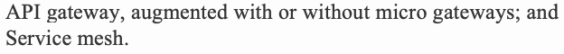
原本PDFの抜粋画像
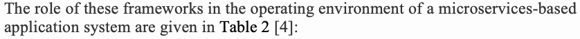
Table 2: Role of Architectural Frameworks in Microservices Operations
表2：マイクロサービス運用におけるアーキテクチャフレームワークの役割
未レビュー訳| Architectural Framework | Role in the Overall Architecture |
| API gateway, augmented with or without micro gateways | Used for controlling north-south and east-west traffic |
| Service mesh | Deployed for purely east-west traffic when |
| microservices are implemented using containers but | |
| can also be used in situations where microservices | |
| are housed in VMs or application servers. |
原本PDFの抜粋画像
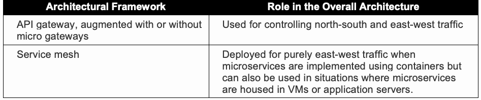
| アーキテクチャフレームワーク | 全体アーキテクチャにおける役割 |
| マイクロゲートウェイによる拡張の有無を問わないAPIゲートウェイ | 南北および東西トラフィックの制御に使用される |
| サービスメッシュ | 純粋な東西トラフィック用にデプロイされる（ |
| マイクロサービスがコンテナを使用して実装されている場合）が、 | |
| マイクロサービスがVMまたはアプリケーションサーバーに | |
| 収容されている状況でも使用できる。 |
原本PDFの抜粋画像
2.7.1 API Gateway
2.7.1 APIゲートウェイ
The API gateway is a popular architectural framework for microservices-based application systems. Unlike a monolithic application where the endpoint may be a single server, a microservices-based application consists of multiple fine-grained endpoints. Hence, it makes sense to provide a single entry point for all clients to multiple component microservices of the application. Another situation where an API gateway is deployed is to act as a front-end (that matches the legacy enterprise software) to back-end services when an organization is migrating from a monolithic enterprise application by gradually replacing its components with independent microservices over time. Direct communication of clients to multiple endpoints results in too many point-to-point connections.
APIゲートウェイは、マイクロサービスベースのアプリケーションシステムで広く使われているアーキテクチャフレームワークである。エンドポイントが単一のサーバーである可能性があるモノリシックアプリケーションとは異なり、マイクロサービスベースのアプリケーションは複数のきめ細かなエンドポイントで構成される。そのため、すべてのクライアントに対して、アプリケーションの複数のコンポーネントマイクロサービスへの単一のエントリポイントを提供することは理にかなっている。APIゲートウェイが配備されるもう1つの状況は、組織がモノリシックなエンタープライズアプリケーションのコンポーネントを長期にわたって独立したマイクロサービスに徐々に置き換えることによって移行を進めている際に、バックエンドサービスに対するフロントエンド（レガシーなエンタープライズソフトウェアと適合するもの）として機能させる場合である。クライアントが複数のエンドポイントと直接通信を行うと、ポイントツーポイント接続が過剰に増加してしまう。
未レビュー訳The primary function of the API gateway is to always route inbound requests to the correct down-stream services, optionally perform protocol translation (i.e., translation between web protocols, such as HTTP and WebSocket, and web-unfriendly protocols that are used internally, such as AMQP and Thrift binary RPC) and sometimes compose requests. In some rare instances, they are used as part of a Backend for Frontend (BFF), thus enabling support for clients with different form factors (e.g., browser, mobile device). All requests from clients first go through
APIゲートウェイの主要な機能は、インバウンドリクエストを常に正しいダウンストリームサービスにルーティングし、オプションでプロトコル変換（すなわち、HTTPやWebSocketなどのWebプロトコルと、AMQPやThriftバイナリRPCなど内部で使用されるWeb非対応プロトコルとの間の変換）を実行し、場合によってはリクエストの合成を行うことである。まれなケースでは、Backend for Frontend（BFF）の一部として使用され、これにより異なるフォームファクタを持つクライアント（例：ブラウザ、モバイルデバイス）のサポートが可能になる。クライアントからのすべてのリクエストは、まず
未レビュー訳9 the API gateway, which then routes requests to the appropriate microservice. The API gateway will often handle a request by invoking multiple microservices and aggregating the results.
9 APIゲートウェイを通過し、ゲートウェイが適切なマイクロサービスにリクエストをルーティングする。APIゲートウェイは多くの場合、複数のマイクロサービスを呼び出して結果を集約することによってリクエストを処理する。
未レビュー訳The multiple APIs or microservices accessible through the API gateway can be specified as part of the input port definition of the gateway (e.g., mobileAPI or MobileService) or be specified dynamically through a deploy operation of the API gateway service with a request parameter that contains the name of the service that should be embedded with the requested service [9]. Thus, the API gateway, located between clients and microservices, represents a pattern wherein a proxy aggregates multiple services. Many API gateway implementations can support APIs written in different languages, such as Jolie, JavaScript, or Java.
APIゲートウェイを介してアクセス可能な複数のAPIまたはマイクロサービスは、ゲートウェイの入力ポート定義の一部として指定されるか（例：mobileAPIまたはMobileService）、あるいは要求されたサービスに組み込まれるべきサービスの名前を含むリクエストパラメータを伴う、APIゲートウェイサービスのデプロイ操作を通じて動的に指定できる [9]。このように、クライアントとマイクロサービスの間に位置するAPIゲートウェイは、プロキシが複数のサービスを集約するパターンを表している。多くのAPIゲートウェイ実装は、Jolie、JavaScript、Javaなどのさまざまな言語で記述されたAPIをサポートできる。
未レビュー訳Since the API gateway is the entry point for microservices, it should be equipped with the necessary infrastructure services (in addition to its main service of request shaping), such as service discovery, authentication and access control, load balancing, caching, providing custom APIs for each type of client, application-aware health checks, service monitoring, attack detection, attack response, security logging and monitoring and circuit breakers. These additional features may be implemented in the API gateway in two ways:
APIゲートウェイはマイクロサービスへのエントリポイントであるため、（リクエストシェーピングという主要サービスに加えて）サービス検出、認証およびアクセス制御、負荷分散、キャッシング、クライアントタイプごとのカスタムAPIの提供、アプリケーション対応のヘルスチェック、サービス監視、攻撃検出、攻撃対応、セキュリティロギングおよび監視、サーキットブレーカーなどの必要なインフラストラクチャサービスを備えている必要がある。これらの追加機能は、次の2つの方法でAPIゲートウェイに実装されることがある：
未レビュー訳•By composing the specific services developed for respective functionality (e.g., service registry for service discovery); and
•各機能向けに開発された特定のサービス（例：サービス検出のためのサービスレジストリ）を構成することによる方法、および
未レビュー訳•Implementing these functionalities directly inside the codebase that utilizes the API gateway.
•APIゲートウェイを利用するコードベース内部にこれらの機能を直接実装する方法。
Gateway implementations
ゲートウェイの実装
未レビュー訳To prevent the gateway from having too much logic to handle request shaping for different client types, it is divided into multiple gateways [8]. This multiple gateway pattern is called BFF. In BFF, each client type is given its own gateway (e.g., web app BFF, mobile app BFF) as a collection point for service requests. The respective backend is closely aligned with the corresponding front end (client) and is typically developed by the same team. The functionality provided by BEF can also be provided by GraphQL which allows the client to shape responses in their requests by specifying what parts of a data-type are required in a response.
異なるクライアントタイプに対するリクエスト整形を処理するためのロジックをゲートウェイが過剰に抱え込むのを防ぐため、ゲートウェイは複数のゲートウェイに分割される[8]。この複数ゲートウェイパターンはBFFと呼ばれる。BFFでは、サービスリクエストの集約ポイントとして各クライアントタイプに専用のゲートウェイ（例：ウェブアプリBFF、モバイルアプリBFF）が割り当てられる。それぞれのバックエンドは対応するフロントエンド（クライアント）と密接に連携しており、通常は同一のチームによって開発される。BEFによって提供される機能は、クライアントがレスポンスに必要なデータ型の部分を指定することでリクエスト内でレスポンスを整形できるようにするGraphQLによっても提供できる。
未レビュー訳API management for a microservices-based application can be implemented through either a monolithic API gateway architecture or a distributed API gateway architecture. In the monolithic API gateway architecture, there is only one API gateway that is typically deployed at the edge of the enterprise network (e.g., Demilitarized Zone (DMZ)) and provides all services to the API at the enterprise level. In the distributed API gateway architecture, there are multiple instances of microgateways, which are deployed closer to microservice APIs [10]. A microgateway is typically a low footprint, scriptable API gateway that can be used to define and enforce customized policies and is therefore suitable for microservices-based applications, which must be protected through service-specific security policies.
マイクロサービスベースのアプリケーションに対するAPI管理は、モノリシックAPIゲートウェイアーキテクチャまたは分散APIゲートウェイアーキテクチャのいずれかを通じて実装できる。モノリシックAPIゲートウェイアーキテクチャでは、通常エンタープライズネットワークのエッジ（例：非武装地帯（DMZ））にデプロイされ、エンタープライズレベルでAPIにすべてのサービスを提供する1つのAPIゲートウェイのみが存在する。分散APIゲートウェイアーキテクチャでは、マイクロサービスAPIのより近くにデプロイされるマイクロゲートウェイの複数のインスタンスが存在する[10]。マイクロゲートウェイは通常、カスタマイズされたポリシーを定義および適用するために使用できる低フットプリントでスクリプト対応のAPIゲートウェイであり、したがってサービス固有のセキュリティポリシーによって保護されなければならないマイクロサービスベースのアプリケーションに適している。
未レビュー訳The microgateway is typically implemented as a stand-alone container using development platforms such as Node.js. It is different from a sidecar proxy of the service mesh architecture (refer to Section 2.7.2), which is implemented at the API endpoint itself. There are a number of
マイクロゲートウェイは通常、Node.jsなどの開発プラットフォームを使用してスタンドアロンのコンテナとして実装される。これは、APIエンドポイント自体に実装されるサービスメッシュアーキテクチャ（セクション2.7.2を参照）のサイドカープロキシとは異なる。ゲートウェイにおいてセキュリティポリシーをエンコードおよび入力する方法には多数の
未レビュー訳10 ways the security policies can be encoded and input in a gateway. One approach is to encode policies using JSON format and input them through a graphical policy management interface. The microgateway should contain policies for both application requests and responses. When policies and their enforcement are implemented as a container, they are immutable and thus provide a degree of protection against accidental and unintended modifications which may result in security breaches or conflicts. In other words, these types of modifications are prevented when the microgateway is implemented as a container since any security policy update will require redeployment of the microgateway. It is essential that the microgateway deployed for any microservice instance communicate with service registry and monitoring modules to keep track of the operational status of the microservice it is designed to protect.
方法がある。1つのアプローチは、JSON形式を使用してポリシーをエンコードし、グラフィカルなポリシー管理インターフェースを介してそれらを入力することである。マイクロゲートウェイは、アプリケーションのリクエストとレスポンスの両方に対するポリシーを含むべきである。ポリシーとその適用がコンテナとして実装されている場合、それらは不変であり、したがってセキュリティ侵害や競合をもたらす可能性がある偶発的および意図しない変更に対する一定の保護を提供する。言い換えれば、セキュリティポリシーの更新にはマイクロゲートウェイの再デプロイが必要になるため、マイクロゲートウェイがコンテナとして実装されている場合、これらのタイプの変更は防止される。任意のマイクロサービスインスタンスに対してデプロイされたマイクロゲートウェイは、保護するように設計されているマイクロサービスの運用状況を追跡するために、サービスレジストリおよび監視モジュールと通信することが不可欠である。
未レビュー訳2.7.2 Service Mesh
2.7.2 サービスメッシュ
| A service mesh is a dedicated infrastructure layer that | facilitates service-to-service |
| communication through service discovery, routing and internal load balancing, traffic | |
| configuration, encryption, authentication and authorization, metrics, and monitoring. | It provides |
| the capability to declaratively define network behavior, node identity, and traffic flow through | |
| policy in an environment of changing network topology due to service instances coming and | |
| going offline and continuously being relocated. It can be looked upon as a networking mode | |
| that sits at a layer of abstraction above the transport layer of the Open System Interconnection | |
| (OSI) model (e.g., Transport Control Protocol/Internet Protocol (TCP/IP)) and addresses the | |
| service’s session layer (Layer 5 of the OSI model) concerns [11]. However, fine-grained |
原本PDFの抜粋画像
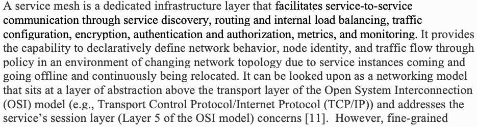
| サービスメッシュとは、サービス検出、ルーティングおよび内部ロードバランシング、トラフィック | 設定、暗号化、認証および認可、メトリクス、ならびに監視を通じて、サービス間 |
| 通信を促進する専用のインフラストラクチャ層である。 | |
| サービスメッシュは、 | |
| サービスインスタンスのオンライン/オフラインへの移行や継続的な再配置によって変化するネットワークトポロジの環境において、 | |
| ポリシーを通じてネットワークの動作、ノードのアイデンティティ、トラフィックフローを宣言的に定義する機能を提供する。 | |
| サービスメッシュは、開放型システム間相互接続 | |
| （OSI）モデルのトランスポート層（例：トランスポート制御プロトコル/インターネットプロトコル（TCP/IP））の上位の抽象化層に位置し、 | |
| サービスのセッション層（OSIモデルの第5層）の関心事に対処するネットワーキングモードと | |
| みなすことができる[11]。しかしながら、きめ細かい |
authorization may still need to be performed at the microservice since that is the only entity
認可は、マイクロサービスが唯一のエンティティであるため、マイクロサービス側で実行する必要が依然としてある場合がある
未レビュー訳原本PDFの抜粋画像
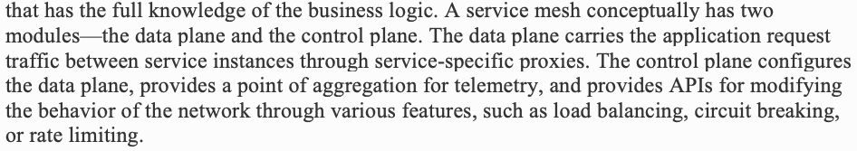
Service meshes create a small proxy server instance for each service within a microservices
サービスメッシュは、マイクロサービス内の各サービスに対して小規模なプロキシサーバーインスタンスを作成する
未レビュー訳原本PDFの抜粋画像
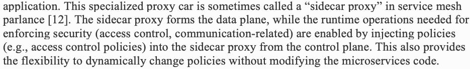
2.8 Comparison with Monolithic Architecture
2.8 モノリシックアーキテクチャとの比較
To fully compare the microservice architecture with the monolithic architecture used for all legacy applications, it is necessary to compare the features of applications developed using these architectural styles as well as provide an example of an application under both architectures for a specific business process. A detailed discussion involving these aspects is provided in Appendix
すべてのレガシーアプリケーションに使用されているモノリシックアーキテクチャとマイクロサービスアーキテクチャを完全に比較するには、これらのアーキテクチャスタイルを使用して開発されたアプリケーションの特徴を比較するとともに、特定のビジネスプロセスに対する両アーキテクチャでのアプリケーションの例を提供する必要がある。これらの側面を含む詳細な議論は付録
未レビュー訳A.
Aに記載されている。
未レビュー訳11
未レビュー訳2.9 Comparison with Service-Oriented Architecture (SOA)
2.9 サービス指向アーキテクチャ（SOA）との比較
The architectural style of microservices shares many similarities with service-oriented architecture (SOA) due to the following common technical concepts [13]:
マイクロサービスのアーキテクチャスタイルは、以下の共通の技術的概念により、サービス指向アーキテクチャ（SOA）と多くの類似点を共有している[13]：
•Services: The application system provides its various functionalities through self-contained entities or artifacts called services that may have other attributes such as being visible or discoverable, stateless, reusable, composable, or have technological-diversity.
•サービス（Services）：アプリケーションシステムは、サービスと呼ばれる自己完結型のエンティティまたは成果物を通じて多様な機能を提供する。これらのサービスは、可視性または発見可能性、ステートレス、再利用可能、構成可能であること、または技術的な多様性を持つことなど、その他の属性を備えている場合がある。
未レビュー訳•Interoperability: A service can call any other service using artifacts such as an enterprise service bus (ESB) in the case of SOA or through a remote procedural call (RPC) across a network as in the case of a microservices environment.
•相互運用性（Interoperability）：サービスは、SOAの場合におけるエンタープライズサービスバス（ESB）などの成果物を使用するか、あるいはマイクロサービス環境の場合のようにネットワークを介したリモートプロシージャコール（RPC）を通じて、他のあらゆるサービスを呼び出すことができる。
•Loose coupling: There is minimal dependency between services such that the change in one service does not require a change in another service.
•疎結合（Loose coupling）：サービス間の依存関係は最小限に抑えられており、あるサービスの変更が別のサービスの変更を必要としない。
In spite of the three common technical concepts described above, technical opinion on the relationship between an SOA and microservices environment falls along the following three lines [13]:
上述した3つの共通の技術的概念があるにもかかわらず、SOAとマイクロサービス環境の関係に関する技術的見解は、以下の3つの系統に分かれる [13]：
•Microservices are a separate architectural style,
•マイクロサービスは別個のアーキテクチャスタイルである、
•Microservices represent one SOA pattern, and
•マイクロサービスは1つのSOAパターンを表している、そして
未レビュー訳•A microservice is a refined SOA.
•マイクロサービスは洗練されたSOAである。
The most prevalent opinion is that the differences between SOA and microservices do not concern the architectural style except in its concrete realization, such as development or deployment paradigms and technologies [2].
最も有力な見解は、SOAとマイクロサービスの違いは、開発やデプロイのパラダイムおよび技術など、具体的な実現手法を除いて、アーキテクチャスタイルに関わるものではないというものである [2]。
2.10 Advantages of Microservices
2.10 マイクロサービスの利点
未レビュー訳•For large applications, splitting the application into loosely coupled components enables independence between the developer teams assigned to each component. Each team can then optimize by choosing its own development platform, tools, language, middleware, and hardware based on their appropriateness for the component being developed.
•大規模なアプリケーションの場合、アプリケーションを疎結合なコンポーネントに分割することで、各コンポーネントに割り当てられた開発チーム間の独立性を確保できる。これにより、各チームは開発対象のコンポーネントへの適合性に基づいて、独自の開発プラットフォーム、ツール、言語、ミドルウェア、ハードウェアを選択して最適化できる。
未レビュー訳•Each of the components can be scaled independently. The targeted allocation of resources results in maximum utilization of resources.
•各コンポーネントは個別にスケーリングできる。リソースの的を絞った割り当てにより、リソースの利用効率が最大化される。
•If components have HTTP RESTful interfaces, implementation can be changed without disruption to the overall function of the application as long as the interface remains the same.
•コンポーネントがHTTP RESTfulインターフェースを持つ場合、インターフェースが変わらない限り、アプリケーション全体の機能を妨げることなく実装を変更できる。
未レビュー訳•The relatively smaller codebase involved in each component enables the development team to produce updates more quickly and provide the application with the agility to respond to changes in business processes or market conditions.
•各コンポーネントに含まれるコードベースが比較的小さいため、開発チームはアップデートをより迅速に作成でき、ビジネスプロセスや市場状況の変化に対応する俊敏性をアプリケーションに提供できる。
未レビュー訳•The loose coupling between the components enables containment of the outage of a microservice such that the impact is restricted to that service without a domino effect on other components or other parts of the application.
•コンポーネント間の疎結合により、マイクロサービスの停止（アウテージ）の封じ込めが可能になり、影響が他のコンポーネントやアプリケーションの他の部分へ連鎖（ドミノ効果）することなく、そのサービスのみに限定される。
12
未レビュー訳•When components are linked together using an asynchronous event-handling mechanism, the impact of a component’s outage is temporary since the required functions will automatically execute when the component begins running again, thus maintaining the overall integrity of the business process.
•コンポーネントが非同期イベント処理メカニズムを使用して相互に連携している場合、コンポーネントが再稼働したときに必要な機能が自動的に実行されるため、コンポーネントのアウトテージによる影響は一時的なものとなり、ビジネスプロセス全体の整合性が維持される。
未レビュー訳•By aligning the service definition to business capabilities (or by basing the decomposition logic for the overall application functionality based on business processes or capabilities), the overall architecture of the microservices-based system is aligned with the organizational structure. This promotes an agile response when business processes associated with an organizational unit change and consequently require that associated service to be modified and deployed.
•サービス定義をビジネス機能に整合させること（または、アプリケーション全体の機能の分解ロジックをビジネスプロセスや能力に基づかせること）によって、マイクロサービスベースのシステムの全体的なアーキテクチャは組織構造と整合する。これにより、組織単位に関連付けられたビジネスプロセスが変更され、結果として関連するサービスの変更およびデプロイが必要になった場合に、俊敏な対応が促進される。
未レビュー訳•The independent functional nature of a microservice promotes better reusability of the code across applications.
•マイクロサービスの独立した機能的性質により、アプリケーション間でのコードの再利用性が向上する。
未レビュー訳2.11 Disadvantages of Microservices
2.11 マイクロサービスの短所
•Multiple components (microservices) must be monitored instead of one single application. A central console is needed to obtain the status of each component and the overall state of the application. Therefore, an infrastructure must be created with distributed monitoring and centralized viewing capabilities.
•単一のアプリケーションの代わりに、複数のコンポーネント（マイクロサービス）を監視する必要がある。各コンポーネントのステータスとアプリケーションの全体的な状態を取得するには、中央コンソールが必要である。したがって、分散監視機能と集中表示機能を備えたインフラストラクチャを構築する必要がある。
•The presence of multiple components creates an availability problem since any component may cease functioning at any time.
•いずれかのコンポーネントがいつでも機能停止する可能性があるため、複数のコンポーネントの存在は可用性の問題を引き起こす。
未レビュー訳•A component may have to call the latest version of another component for some clients and call the previous version of the same component for another set of clients (i.e., version management).
•あるコンポーネントは、一部のクライアントに対して別のコンポーネントの最新バージョンを呼び出し、別のクライアント群に対しては同じコンポーネントの以前のバージョンを呼び出さなければならない場合がある（すなわち、バージョン管理）。
•Running an integration test is more difficult since a test environment is needed wherein all components must be working and communicating with each other.
•すべてのコンポーネントが動作し、互いに通信しているテスト環境が必要となるため、結合テストの実行はより困難になる。
未レビュー訳•When interactions within a microservices-based application are designed as API calls, all the necessary processes required for secure API management must be implemented.
•マイクロサービスベースのアプリケーション内のインタラクションがAPI呼び出しとして設計されている場合、セキュアなAPI管理に必要なすべてのプロセスを実装する必要がある。
未レビュー訳•The microservices architecture can break down the practice of defense in depth. Many architectures have a web server running in a DMZ that is expected to be compromised, then a backend service which the web server talks to, and then finally a database that the backend service talks to. The backend service can act as a more hardened layer between the exposed web server and the sensitive data in the database. The microservice architecture tends to collapse this and now the web server and back end service are broken down into microservices potentially more exposed than in the previous model. This can result in fewer layers of protection between the caller and sensitive data. Hence it is critical to securely design and implement the microservices themselves as well as the service mesh or API gateway deployment model.
•マイクロサービスアーキテクチャは、多層防御（defense in depth）のプラクティスを崩壊させる可能性がある。多くのアーキテクチャでは、侵害されることが想定されているDMZ内で稼働するWebサーバーがあり、次にそのWebサーバーが通信するバックエンドサービスがあり、最終的にそのバックエンドサービスが通信するデータベースが存在する。バックエンドサービスは、公開されたWebサーバーとデータベース内の機密データとの間において、より堅牢化された層として機能することができる。マイクロサービスアーキテクチャはこれを崩す傾向があり、現在ではWebサーバーとバックエンドサービスがマイクロサービスへと分解され、以前のモデルよりも潜在的に多く公開されることになる。これにより、呼び出し元と機密データとの間の保護層が減少する結果となり得る。したがって、サービスメッシュやAPIゲートウェイのデプロイメントモデルだけでなく、マイクロサービス自体を安全に設計および実装することが極めて重要である。
13
未レビュー訳3 Microservices: Threat Background
3 マイクロサービス：脅威の背景
未レビュー訳The threat background for a microservices-based application system should be treated as a continuation of the technology background provided in Section 2. The following approach has been adopted to review the threat background:
マイクロサービスベースのアプリケーションシステムの脅威の背景は、セクション2で提供された技術的背景の続きとして扱われるべきである。脅威の背景をレビューするために、以下のアプローチが採用されている。
未レビュー訳•Consider all layers in the deployment stack of a typical microservices-based application and identify typical potential threats at each layer.
•典型的なマイクロサービスベースのアプリケーションのデプロイメントスタックにおけるすべての層を検討し、各層における典型的な潜在的脅威を特定する。
未レビュー訳•Identify the distinct set of threats exclusive to microservices-based application systems.
•マイクロサービスベースのアプリケーションシステムに特有の明確な脅威のセットを特定する。
3.1 Review of Threat Sources Landscape
3.1 脅威源ランドスケープのレビュー
Six layers are present in the deployment stack of a typical microservices-based application as suggested in [13]: hardware, virtualization, cloud, communication, service/application, and orchestration. This document considers these layers to be threat sources, and several of the security concerns affiliated with them are described below to provide an overview of the threat background in a microservices-based application. It is important to remember that many of the possible threats are common to other application environments and not specific to a microservices-based application environment.
[13] で示唆されているように、典型的なマイクロサービスベースのアプリケーションのデプロイメントスタックには、ハードウェア、仮想化、クラウド、通信、サービス／アプリケーション、およびオーケストレーションの6つの層が存在する。本書ではこれらの層を脅威源とみなし、マイクロサービスベースのアプリケーションにおける脅威の背景の概要を提供するため、それらに関連するいくつかのセキュリティ上の懸念事項を以下で説明する。起こり得る脅威の多くは他のアプリケーション環境にも共通しており、マイクロサービスベースのアプリケーション環境に固有のものではないことを覚えておくことが重要である。
未レビュー訳•Hardware layer: Though hardware flaws, such as Meltdown and Spectre [8], have been reported, such threats are rare. In the context of this document, hardware is assumed to be trusted, and threats from this layer are not considered.
•ハードウェア層：MeltdownやSpectre [8]などのハードウェアの欠陥が報告されているが、そのような脅威は稀である。本文書の文脈において、ハードウェアは信頼されていると仮定されており、この層からの脅威は考慮されていない。
未レビュー訳•Virtualization layer: In this layer, threats to microservices or hosting containers originate from compromised hypervisors and the use of malicious or vulnerable container images and VM images. These threats are addressed in other NIST documents and are therefore not discussed here.
•仮想化層：この層では、マイクロサービスやホスティングコンテナに対する脅威は、侵害されたハイパーバイザーや、悪意のあるまたは脆弱なコンテナイメージおよびVMイメージの使用に起因する。これらの脅威は他のNIST文書で扱われているため、ここでは取り上げない。
未レビュー訳•Cloud environment: Since virtualization is the predominant technology used by cloud providers, the same set of threats to the virtualization layer applies. Further, there are potential threats within the networking infrastructure of the cloud provider. For example, hosting all microservices within a single cloud provider may result in fewer network-level security controls for inter-process communication as opposed to controls for communication between external clients and the microservices hosted within the cloud. Security threats within a cloud infrastructure are considered in several other NIST documents and are therefore not addressed here.
•クラウド環境：仮想化はクラウドプロバイダーが使用する主要な技術であるため、仮想化層に対するものと同じ脅威セットが適用される。さらに、クラウドプロバイダーのネットワーキングインフラストラクチャ内にも潜在的な脅威が存在する。例えば、単一のクラウドプロバイダー内にすべてのマイクロサービスをホストすると、外部クライアントとクラウド内にホストされているマイクロサービス間の通信に対する制御に比べて、プロセス間通信に対するネットワークレベルのセキュリティ制御が少なくなる可能性がある。クラウドインフラストラクチャ内のセキュリティ脅威は他のいくつかのNIST文書で検討されているため、ここでは取り上げない。
未レビュー訳•Communication layer: This layer is unique to microservices-based applications due to the sheer number of microservices, adopted design paradigms (loose coupling and API composition), and different interaction styles (synchronous or asynchronous) among them. Many of the core features of microservices pertain to this layer, and the threats to these core features are identified under microservices-specific threats in Sec. 3.2.
•通信層：この層は、マイクロサービスの膨大な数、採用された設計パラダイム（疎結合とAPI構成）、およびそれらの間の異なる相互作用スタイル（同期または非同期）により、マイクロサービスベースのアプリケーションに特有のものである。マイクロサービスのコア機能の多くはこの層に関連しており、これらのコア機能に対する脅威はSec. 3.2のマイクロサービス特有の脅威の下で特定されている。
•Service/application layer: In this layer, threats are the results of malicious or faulty code. As this falls under secure application development methodologies, it is outside of the scope of this document.
•サービス／アプリケーション層：この層では、脅威は悪意のあるコードまたは欠陥のあるコードの結果である。これはセキュアなアプリケーション開発方法論に分類されるため、本文書の範囲外である。
14
未レビュー訳•Orchestration layer: An orchestration layer may come into play if the microservices implementation involves technologies such as containers. The threats in this layer pertain to the subversion of automation or configuration features, especially related to scheduling and clustering of servers, containers, or VMs hosting the services, and are therefore beyond the scope of this document.
•オーケストレーション層：マイクロサービスの実装にコンテナなどのテクノロジーが含まれる場合、オーケストレーション層が関係してくる可能性がある。この層における脅威は、特にサービスをホストするサーバー、コンテナ、またはVMのスケジューリングおよびクラスタリングに関連する、自動化機能または構成機能の破壊に関係するため、本文書の範囲外となる。
未レビュー訳3.2 Microservices-specific Threats
3.2 マイクロサービス特有の脅威
Most state-of-practice core features refer to the communication layer in the deployment stack of microservices-based applications. Hence, the overall security strategies for microservices-based applications should involve choosing the right implementation options, identifying the architectural frameworks packaging those core features, identifying microservice-specific threats, and providing coverage for countering those threats in the implementation options.
実践水準（state of practice）のコア機能の大半は、マイクロサービスベースのアプリケーションのデプロイメントスタックにおける通信層に関連している。したがって、マイクロサービスベースのアプリケーションに対する全体的なセキュリティ戦略には、適切な実装オプションの選択、これらのコア機能をパッケージ化するアーキテクチャフレームワークの特定、マイクロサービス特有の脅威の特定、および実装オプションにおいてそれらの脅威に対抗するための対策の提供が含まれるべきである。
However, it should be pointed out that microservices-based applications are still susceptible to most attacks that web applications are susceptible to, including injection, encoding and serialization attacks, cross site scripting (XSS), Cross-Site Request Forgery (CSRF), and HTTP verb tempering [20]. And many of the controls to prevent these attacks still need to be implemented in the microservice code so you need to ensure that developers are not under the impression that an API gateway or service mesh will provide all security for their microservice.
しかしながら、マイクロサービスベースのアプリケーションは、インジェクション、エンコーディングおよびシリアライゼーション攻撃、クロスサイトスクリプティング（XSS）、クロスサイトリクエストフォージェリ（CSRF）、HTTP動詞の改ざん（HTTP verb tempering）[20]など、Webアプリケーションが影響を受けやすい攻撃の多くに対して依然として脆弱である点は指摘しておく必要がある。また、これらの攻撃を防ぐための制御の多くは依然としてマイクロサービスのコード内で実装する必要があるため、開発者がAPIゲートウェイやサービスメッシュがマイクロサービスのすべてのセキュリティを提供してくれるという誤った認識を持たないようにする必要がある。
3.2.1 Service Discovery Mechanism Threats
3.2.1 サービスディスカバリメカニズムの脅威
未レビュー訳The basic functions in a service discovery mechanism are:
サービスディスカバリメカニズムにおける基本機能は以下のとおりである：
•Service registration and de-registration.
•サービスの登録および登録解除。
•Service discovery.
•サービスディスカバリ。
The potential security threats to the service discovery mechanism include:
サービスディスカバリメカニズムに対する潜在的なセキュリティ脅威には以下が含まれる：
•Registering malicious nodes within the system, redirecting communication to them, and subsequently compromising service discovery.
•システム内に悪意のあるノードを登録し、それらへの通信をリダイレクトして、その結果としてサービスディスカバリを侵害すること。
•Corruption of the service registry database leading to redirection of service requests to wrong services and resulting in denial of services; also, redirection to malicious services resulting in compromise of the entire application system.
•サービスレジストリデータベースの破損により、サービスリクエストが誤ったサービスへリダイレクトされてサービス拒否（DoS）が発生すること。また、悪意のあるサービスへリダイレクトされてアプリケーションシステム全体が侵害されること。
3.2.2 Internet-based Attacks
3.2.2 インターネット経由の攻撃
Though all networked or distributed applications are vulnerable to internet-based attacks, microservices-based applications are more vulnerable to this type of attacks due to the following:
ネットワーク化されたアプリケーションや分散アプリケーションはすべてインターネット経由の攻撃に対して脆弱であるが、マイクロサービスベースのアプリケーションは以下の理由により、この種の攻撃に対してより脆弱である：
•Unlike a monolithic application that exposes a smaller set of IP-addressable remote procedure call interfaces, a microservices architecture will almost always expose a larger set of IP-addressable remote procedure call interfaces. This is due to the fact that monolithic applications favor single-component implementation of a range of business functions and typically expose a consolidated interface to them all. Applications
•IPアドレス指定可能なリモートプロシージャコール（RPC）インターフェースの公開数がより少ないモノリシックアプリケーションとは異なり、マイクロサービスアーキテクチャではほぼ常に、IPアドレス指定可能なリモートプロシージャコールインターフェースの公開数がより多くなる。これは、モノリシックアプリケーションが一連のビジネス機能を単一コンポーネントで実装することを重視し、通常それらすべてに対して集約されたインターフェースを公開するという事実によるものである。アプリケーション
未レビュー訳15 employing a microservices architecture feature many smaller components that coordinate or connect over many interfaces.
15 マイクロサービスアーキテクチャを採用しているものは、多数のインターフェースを介して連携または接続する多数のより小さなコンポーネントを特徴とする。
未レビュー訳•Microservices-based applications have increased risks due to inadvertent exposure of internal functionality, when security controls implemented for upstream components are skipped by directly accessing downstream components. The overall increased complexity of the system increases the chances a developer may omit a check because they can't reason about what conditions the caller has been subjected to.
•マイクロサービスベースのアプリケーションでは、ダウンストリームコンポーネントに直接アクセスすることでアップストリームコンポーネント向けに実装されたセキュリティ制御がスキップされた場合、内部機能が意図せず露出することによるリスクが増加する。システム全体の複雑さが増すことで、呼び出し元がどのような条件にさらされてきたかを開発者が推論できないため、チェックを省略してしまう可能性が高くなる。
This class of attacks includes botnet attacks. Though not the only means or being the only class of systems subject to botnet attacks, damage to microservices-based applications could include credential stuffing/abuse, accounts takeover, page scraping and harvesting data, and distributed denial of service.
この種の攻撃にはボットネット攻撃が含まれる。ボットネット攻撃を受ける手段もシステムの種類もこれに限られるわけではないが、マイクロサービスベースのアプリケーションへの被害には、クレデンシャルスタッフィング／不正使用、アカウントの乗っ取り、ページスクレイピングおよびデータのハーベスティング、ならびに分散サービス拒否（DDoS）が含まれる可能性がある。
3.2.3 Cascading Failure
3.2.3 連鎖障害
The presence of multiple components in a microservices-based application enhances the probability of a failure of a service. Though the components are designed to be loosely coupled from the point of view of deployment, there is a logical or functional dependency since many business transactions require the execution of multiple services in sequence to deliver the required outputs. Therefore, if a service that is upstream in the processing logic of a business transaction fails, other services that depend upon it may become unresponsive as well. This phenomenon is known as cascading failure.
マイクロサービスベースのアプリケーションに複数のコンポーネントが存在することは、サービスの障害が発生する確率を高める。コンポーネントはデプロイの観点からは疎結合になるよう設計されているものの、多くのビジネストランザクションでは必要な出力を提供するために複数のサービスを順次実行する必要があるため、論理的または機能的な依存関係が存在する。したがって、ビジネストランザクションの処理ロジックにおいて上流にあるサービスに障害が発生した場合、それに依存する他のサービスも応答しなくなる可能性がある。この現象は連鎖障害（cascading failure）として知られている。
16
未レビュー訳4 Security Strategies for Implementing Core Features and Countering Threats
4 コア機能の実装および脅威に対抗するためのセキュリティ戦略
未レビュー訳Security strategies for the design and deployment of microservices-based application systems will span the following:
マイクロサービスベースのアプリケーションシステムの設計およびデプロイに関するセキュリティ戦略は、以下にわたるものとなる：
Analysis of implementation options for core features: (Some significant core state of practice features are shown in Appendix B).
コア機能の実装選択肢の分析：（いくつかの重要なコア実践状況機能は付録Bに示されている）。
未レビュー訳a) Identity and access management, b) Service discovery, c) Secure communication protocols, d) Security monitoring, e) Resiliency or availability improvement techniques, and f) Integrity assurance improvement techniques.
a) アイデンティティおよびアクセス管理、b) サービスディスカバリ、c) セキュア通信プロトコル、d) セキュリティ監視、e) 耐障害性または可用性向上の技術、および f) 完全性保証向上の技術。
未レビュー訳Countering microservices-specific threats:
マイクロサービス特有の脅威への対策：
未レビュー訳a) Threats to service discovery mechanism, b) Internet-based attacks, and c) Cascading failures.
a) サービスディスカバリメカニズムに対する脅威、b) インターネットベースの攻撃、および c) 連鎖障害。
未レビュー訳Note that service discovery is a core feature in microservices, and analysis of the implementation options will also take into consideration threats to service discovery mechanisms. Similarly, implementation options for resiliency or availability improvement will also address the counter measures for cascading failures. As such, there will not be separate security strategies for these items.
サービスディスカバリはマイクロサービスにおけるコア機能であり、実装オプションの分析ではサービスディスカバリメカニズムに対する脅威も考慮されることに留意すること。同様に、耐障害性や可用性の向上に向けた実装オプションでも、連鎖障害に対する対策が扱われる。そのため、これらの項目に対して個別のセキュリティ戦略は設けない。
4.1 Strategies for Identity and Access Management
4.1 アイデンティティおよびアクセス管理の戦略
Since microservices are packaged as APIs, the initial form of authentication to microservices involves the use of API keys (cryptographic). Authentication tokens encoded in Security Assertion Markup Language (SAML) or through OpenID connect under the OAuth 2.0 framework provide an option for enhancing security [14]. For authorization, a centralized architecture for provisioning and enforcement of access policies governing access to all microservices is required due to the sheer number of services, the implementation of services using APIs, and the need for service composition to support real-world business transactions (e.g., customer order processing and shipping). A standardized, platform-neutral method for conveying authorization decisions through a standardized token (e.g., JSON web tokens (JWT), some of which can be OAuth 2.0 access tokens encoded in JSON format [15]) is also required since each of the microservices may be implemented in a different language or platform framework. Policy provisioning and computation of access decisions require the use of an authorization server.
マイクロサービスはAPIとしてパッケージ化されているため、マイクロサービスに対する初期の認証形式には（暗号論的な）APIキーの使用が含まれる。Security Assertion Markup Language（SAML）でエンコードされた認証トークン、またはOAuth 2.0フレームワーク下でのOpenID Connectによる認証トークンは、セキュリティを強化するための選択肢を提供する [14]。認可に関しては、サービスの膨大な数、APIを使用したサービスの実装、そして現実世界のビジネストランザクション（例：顧客の注文処理や配送）をサポートするためのサービス構成の必要性から、すべてのマイクロサービスへのアクセスを管理するアクセスポリシーのプロビジョニングと適用を行う中央集約型アーキテクチャが必要とされる。また、各マイクロサービスが異なる言語やプラットフォームフレームワークで実装されている可能性があるため、標準化されたトークン（例：JSON Web Token（JWT）、その一部はJSON形式でエンコードされたOAuth 2.0アクセストークンになり得る [15]）を介して認可決定を伝達するための標準化されたプラットフォーム中立の方法も必要である。ポリシーのプロビジョニングとアクセス決定の計算には、認可サーバーの使用が必要となる。
The disadvantage to implementing access control policies at the access point of each microservice is that additional effort is required to ensure that cross-cutting (common) policies applicable to all microservice APIs are implemented uniformly. Any discrepancy in security
各マイクロサービスのアクセスポイントでアクセス制御ポリシーを実装することのデメリットは、すべてのマイクロサービスAPIに適用される横断的（共通）ポリシーが一律に実装されることを保証するために追加の労力が必要となる点である。セキュリティにおけるいかなる不一致も、
未レビュー訳17 policy implementation among APIs will have security implications for the entire microservices-based application, although this applies only to coarse grained policies since fine grained policies can only be specified closer to the microservice or in the microservice itself. Further, the footprint for implementing access control in each microservices node can result in performance issues in some nodes. Since multiple microservices nodes collaborate to perform a transaction, performance problems associated with any node can quickly cascade across multiple services. Taking into consideration these requirements, the strategies for secure identity and access management to microservices are outlined below.
17 API間でのポリシー実装の不一致は、マイクロサービスベースのアプリケーション全体にセキュリティ上の影響を及ぼすが、きめの細かい（ファイングレインな）ポリシーはマイクロサービスの近くまたはマイクロサービス自体の中でしか指定できないため、これは粗い粒度の（コースグレインな）ポリシーにのみ当てはまる。さらに、各マイクロサービスノードでアクセス制御を実装することによるフットプリントは、一部のノードでパフォーマンスの問題を引き起こす可能性がある。トランザクションを実行するために複数のマイクロサービスノードが連携するため、いずれかのノードに関連するパフォーマンス問題は、複数のサービス間に急速に連鎖する可能性がある。これらの要件を考慮し、マイクロサービスへのセキュアなアイデンティティおよびアクセス管理のための戦略を以下に示す。
未レビュー訳Security strategies for authentication (MS-SS-1):
認証のためのセキュリティ戦略（MS-SS-1）：
原本PDFの抜粋画像
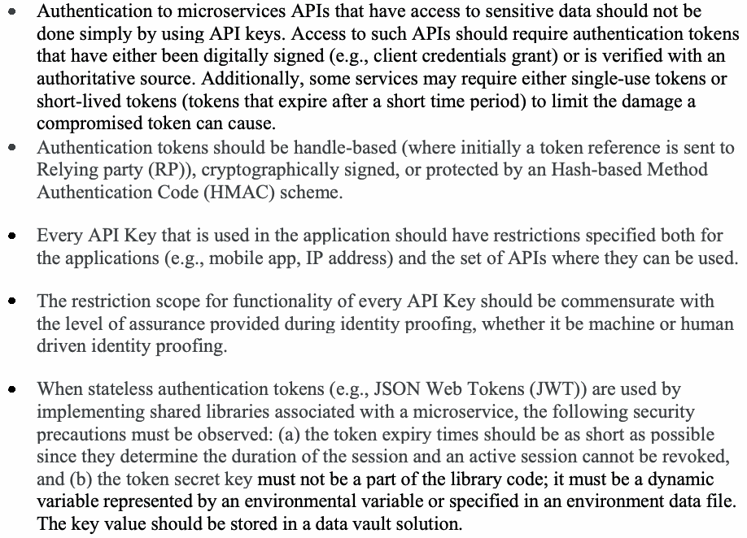
•If standards-based techniques such as OAuth or OpenID connect are implemented, they must be deployed securely [19].
•OAuthやOpenID Connectなどの標準ベースの技術を実装する場合、それらはセキュアに導入されなければならない [19]。
Security strategies for access management (MS-SS-2):
アクセス管理のためのセキュリティ戦略（MS-SS-2）：
•Access policies to all APIs and their resources should be defined and provisioned to an access server. Access policies at a coarse level of granularity say “Permit to Call for a given set of addressable functionalities” should be defined and enforced at the initial API gateway while authorizations at the finer level of granularity (e.g., related to domain of the particular microservices’ business logic) should be defined and enforced closer to the 18
•すべてのAPIおよびそのリソースに対するアクセスポリシーを定義し、アクセスサーバーにプロビジョニングする必要がある。粗い粒度レベルのアクセスポリシー（たとえば「アドレス指定可能な機能の所定のセットに対する呼び出し許可」など）は、初期APIゲートウェイで定義および適用されるべきであり、一方でより細かい粒度レベルの認可（たとえば、特定のマイクロサービスのビジネスロジックのドメインに関連するもの）は、18
未レビュー訳location of the microservices (e.g., at the micro gateway) or sometimes at the microservice itself.
マイクロサービスの場所のより近くで（たとえば、マイクロゲートウェイで）、または場合によってはマイクロサービス自体で定義および適用されるべきである。
未レビュー訳•Caching Mechanism: It may be appropriate to allow microservices to cache policy data; this cache should be only relied upon when an access server is unavailable and should expire after a duration appropriate for the environment/infrastructure.
•キャッシングメカニズム: マイクロサービスがポリシーデータをキャッシュできるようにすることが適切な場合がある。このキャッシュは、アクセスサーバーが利用できない場合にのみ依存すべきであり、環境／インフラストラクチャに適した期間の経過後に期限切れとなるべきである。
未レビュー訳•The access server should be capable of supporting fine-grained policies.
•アクセスサーバーは、きめ細かなポリシーをサポートできるようにすべきである。
•Access decisions from the access server should be conveyed to individual and sets of microservices through standardized tokens encoded in a platform-neutral format (e.g., OAuth 2.0 token encoded in JSON format). The token can be either a handle-based token or an assertion bearing token.
•アクセスサーバーからのアクセス決定は、プラットフォーム中立な形式でエンコードされた標準化トークン（たとえば、JSON形式でエンコードされたOAuth 2.0トークン）を通じて、個々のマイクロサービスおよびマイクロサービスのセットに伝達されるべきである。トークンは、ハンドルベースのトークンまたはアサーション保持トークンのいずれかにすることができる。
未レビュー訳•The scope of internal authorization tokens appended by the micro gateway or decision point to each request should be carefully controlled; for example, in a request for transaction, the internal authorization token should be limited in scope to only involve the API endpoints that must be accessed for that transaction.
•マイクロゲートウェイまたは決定ポイントによって各リクエストに追加される内部認可トークンのスコープは、慎重に制御されるべきである。たとえば、トランザクションのリクエストでは、内部認可トークンは、そのトランザクションのためにアクセスしなければならないAPIエンドポイントのみに関与するようにスコープを制限すべきである。
未レビュー訳•The API gateway can be leveraged to centralize enforcement of authentication and access control for all downstream microservices, eliminating the need to provide authentication and access control for each of the individual services. If this design is chosen, any component suitably positioned on the network can make anonymous connections to the services bypassing the API gateway and its protections. Mitigating controls such as mutual authentication should be leveraged to prevent direct, anonymous connections to the services.
•APIゲートウェイを活用して、すべてのダウンストリームマイクロサービスに対する認証およびアクセス制御の適用を一元化し、個々のサービスごとに認証およびアクセス制御を提供するニーズを排除できる。この設計が選択された場合、ネットワーク上に適切に配置されたコンポーネントは、APIゲートウェイとその保護をバイパスして、サービスへの匿名接続を行うことができる。サービスへの直接的かつ匿名の接続を防止するために、相互認証などの緩和策を活用すべきである。
未レビュー訳4.2 Strategies for Service Discovery Mechanism
4.2 サービスディスカバリメカニズムの戦略
Microservices may have to be replicated and located anywhere in the enterprise or cloud
マイクロサービスは、エンタープライズまたはクラウド内の任意の場所に複製され配置される必要がある場合がある
未レビュー訳原本PDFの抜粋画像
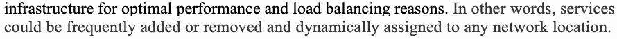
Hence, it is inevitable in a microservices-based application architecture to have a service discovery mechanism, which is typically implemented using the service registry. The service
したがって、マイクロサービスベースのアプリケーションアーキテクチャでは、通常サービスレジストリを使用して実装されるサービス検出メカニズムを用意することが不可避である。サービス
未レビュー訳原本PDFの抜粋画像
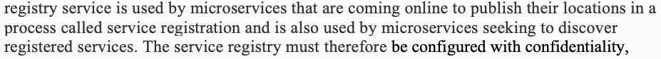
integrity, and availability considerations.
完全性、および可用性の考慮事項を考慮して構成されなければならない。
未レビュー訳原本PDFの抜粋画像
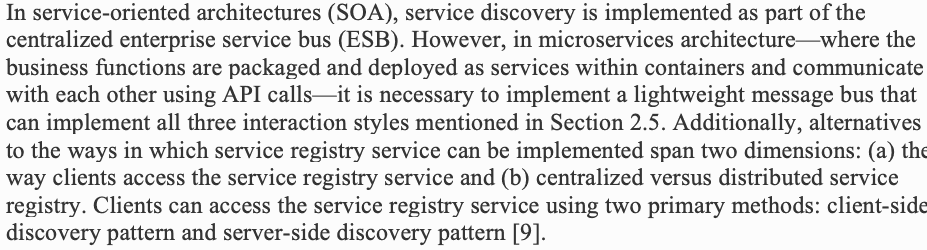
19
未レビュー訳Analysis of the client-side service discovery pattern
クライアント側サービス検出パターンの分析
未レビュー訳The client-side option consists of building registry-aware clients. The client queries the service registry for the location of all services needed to make requests. It then contacts the target service directly. Though simple, this implementation option for service discovery requires the discovery logic (querying the service registry) to be implemented for each programming language and/or framework that is used for client implementations.
クライアント側の選択肢は、レジストリを認識するクライアントを構築することから構成される。クライアントは、リクエストを行うために必要なすべてのサービスの場所についてサービスレジストリに問い合わせを行う。その後、ターゲットサービスに直接接続する。単純ではあるものの、サービス検出のためのこの実装オプションでは、クライアントの実装に使用されるプログラミング言語やフレームワークごとに、検出ロジック（サービスレジストリへの問い合わせ）を実装する必要がある。
未レビュー訳Analysis of the service-side service discovery pattern
サービス側サービス検出パターンの分析
未レビュー訳The service-side discovery has two implementations: one pattern delegates the discovery logic to a dedicated router service set at a fixed location, while the other utilizes a server in front of each microservice with the functionality of a dynamic Domain Name System (DNS)-resolver (which works with a Domain Name System Security Extensions (DNSSSEC) authoritative server)). In the dedicated router option, the client makes all service requests to this dedicated router service, which in turn queries the service registry for the location of the client-requested service and forwards that request to the discovered location. This removes the tight coupling between an application service and an infrastructure service such as the service registry service. In the DNS resolver pattern, each microservice completes its own service discovery using its built-in DNS resolver to query the service registry. The DNS resolver maintains a table of available service instances and their endpoint locations (i.e., IP addresses). To keep the table up to date, the asynchronous, nonblocking DNS resolver queries the service registry regularly—perhaps every few seconds—using DNS Service records (e.g., Service Resource Records (SRV RRs)) for service discovery. Since the service discovery function through the DNS resolver runs as a background task, the endpoints (URLs) for all peer microservices are instantly available when a service instance needs to make a request [2].
サービス側の検出には2つの実装がある。1つのパターンは固定された場所に配置された専用ルーターサービスに検出ロジックを委任し、もう1つのパターンは動的なDomain Name System (DNS) リゾルバー（Domain Name System Security Extensions (DNSSSEC) 権威サーバーと連携する）の機能を備えたサーバーを各マイクロサービスの前面で利用する。専用ルーターの選択肢では、クライアントはすべてのサービスリクエストをこの専用ルーターサービスに対して行い、専用ルーターサービスはクライアントが要求したサービスの場所についてサービスレジストリに問い合わせを行い、検出された場所にそのリクエストを転送する。これにより、アプリケーションサービスと、サービスレジストリサービスなどのインフラストラクチャサービスとの間の密結合が排除される。DNSリゾルバーパターンでは、各マイクロサービスがサービスレジストリに問い合わせるために内蔵のDNSリゾルバーを使用して、自身のサービス検出を完了する。DNSリゾルバーは、利用可能なサービスインスタンスおよびそれらのエンドポイントの場所（すなわちIPアドレス）のテーブルを維持する。テーブルを最新の状態に維持するために、非同期・ノンブロッキングDNSリゾルバーは、サービス検出のためにDNSサービスレコード（例えば、Service Resource Records (SRV RRs)）を使用して、定期的（おそらく数秒ごと）にサービスレジストリに問い合わせを行う。DNSリゾルバーによるサービス検出機能はバックグラウンドタスクとして実行されるため、サービスインスタンスがリクエストを行う必要がある場合に、すべてのピアマイクロサービスのエンドポイント（URL）を即座に利用できる [2]。
未レビュー訳原本PDFの抜粋画像
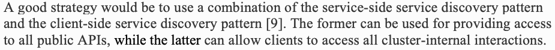
Centralized versus distributed service registry
集中型と分散型のサービスレジストリ
未レビュー訳原本PDFの抜粋画像
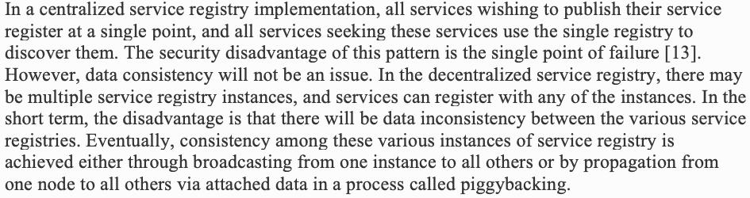
Regardless of the pattern used for service discovery, secure deployment of service discovery functions should meet the following service registry configuration requirements.
サービスディスカバリに使用されるパターンにかかわらず、サービスディスカバリ機能の安全なデプロイは、以下のサービスレジストリ構成要件を満たすべきである。
20
未レビュー訳Security strategies for service registry configuration (MS-SS-3)
サービスレジストリ構成のセキュリティ戦略（MS-SS-3）
未レビュー訳•Service registry capabilities should be provided through servers that are either dedicated or part of a service mesh architecture.
•サービスレジストリ機能は、専用サーバー、またはサービスメッシュアーキテクチャの一部であるサーバーを介して提供されるべきである。
•Service registry services should be in a network that has been configured with certain Quality of Service (QoS) parameters to ensure its availability and resilience.
•サービスレジストリのサービスは、その可用性と耐障害性を確保するために、特定のQuality of Service（QoS）パラメータで構成されたネットワーク内に存在すべきである。
未レビュー訳•Communication between an application service and a service registry should occur through a secure communication protocol such as HTTPS or Transport Layer Security (TLS).
•アプリケーションサービスとサービスレジストリ間の通信は、HTTPSやTransport Layer Security（TLS）などのセキュアな通信プロトコルを介して行われるべきである。
未レビュー訳•Service registry should have validation checks to ensure that only legitimate services are performing the registration, refresh operations, and database queries to discover services.
•サービスレジストリには、正当なサービスのみが登録、更新操作、およびサービス検出のためのデータベースクエリを実行していることを確認するための検証チェックが備わっているべきである。
未レビュー訳•The bounded context and loose coupling principle for microservices should be observed for the service registration/deregistration functions. In other words, the application service should not have tight coupling with an infrastructure service, such as a service registry service, and service self-registration/deregistration patterns should be avoided. When an application service crashes or is running but unable to handle requests, its inability to perform deregistration affects the integrity of the whole process. Therefore, registration/deregistration of an application service should be enabled using a third-party registration pattern, and the application service should be restricted to querying the service registry for service location information as described under the client-side discovery pattern.
•サービスの登録／登録解除機能については、マイクロサービスにおける境界づけられたコンテキスト（bounded context）および疎結合の原則を遵守すべきである。言い換えれば、アプリケーションサービスはサービスレジストリサービスなどのインフラストラクチャサービスと密結合してはならず、サービスの自己登録／自己登録解除パターンは回避すべきである。アプリケーションサービスがクラッシュした場合、または稼働中であってもリクエストを処理できない場合、登録解除を実行できないことがプロセス全体の整合性に影響を与える。したがって、アプリケーションサービスの登録／登録解除はサードパーティ登録パターンを使用して有効化すべきであり、アプリケーションサービスは、クライアントサイドディスカバリパターンで説明されているように、サービス位置情報をサービスレジストリに問い合わせることのみに制限されるべきである。
未レビュー訳•If a third-party registration pattern is implemented, registration/deregistration should only take place after a health check on the application service is performed.
•サードパーティ登録パターンが実装されている場合、登録／登録解除は、アプリケーションサービスのヘルスチェックが実行された後にのみ行われるべきである。
•Distributed service registry should be deployed for large microservices applications, and care should be taken to maintain data consistency among multiple service registry instances.
•大規模なマイクロサービスアプリケーションでは分散型サービスレジストリをデプロイすべきであり、複数のサービスレジストリインスタンス間でデータの一貫性を維持するよう配慮すべきである。
4.3 Strategies for Secure Communication Protocols
4.3 安全な通信プロトコルのための戦略
原本PDFの抜粋画像
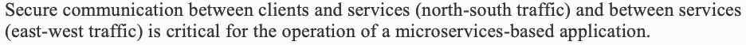
However, certain strategies for security services—such as authentication or the establishment of secure connections—can be handled at the individual microservices nodes. For example, in the fabric model, each microservice instance has the capability to function as an Secure Sockets Layer (SSL) client and SSL server (i.e., each microservice is an SSL/TLS endpoint). Thus, a secure SSL/TLS connection is possible for interservice or inter-process communication from an overall application perspective. These connections can be created dynamically (i.e., before each interservice request) or be created as a keep-alive connection. In the keep-alive connection scheme, a “service A” creates a connection after a full SSL/TLS handshake—the first time an instance of that service makes a request to an instance of a “service B.” However, neither service instances terminate the connection after a response returns for that request from service B. Rather, the same connection is reused in future requests. The advantage of this scheme is that the costly overhead involved in performing the initial SSL/TLS handshake can be avoided during 21 each request, and an existing connection can be reused for thousands of following interservice requests. Thus, a permanent secure interservice network connection is available for all instances of requests.
しかし、セキュリティサービスのための特定の戦略（認証や安全な接続の確立など）は、個々のマイクロサービスノードで処理できる。例えばファブリックモデルでは、各マイクロサービスインスタンスがSecure Sockets Layer（SSL）クライアントおよびSSLサーバーとして機能する能力を持つ（すなわち、各マイクロサービスがSSL/TLSエンドポイントとなる）。したがって、アプリケーション全体の観点から、サービス間通信またはプロセス間通信において安全なSSL/TLS接続が可能となる。これらの接続は、動的に（すなわち、各サービス間リクエストの前に）作成することも、キープアライブ接続として作成することもできる。キープアライブ接続方式では、ある「サービスA」のインスタンスが「サービスB」のインスタンスに対して初めてリクエストを行う際に、完全なSSL/TLSハンドシェイクを経て接続を作成する。しかし、サービスBからのそのリクエストに対する応答が返った後も、いずれのサービスインスタンスも接続を終了しない。むしろ、以後のリクエストで同じ接続が再利用される。この方式の利点は、初回のSSL/TLSハンドシェイクの実行に伴うコストの高いオーバーヘッドを21各リクエスト中に回避でき、既存の接続をその後に続く何千ものサービス間リクエストに再利用できることである。したがって、あらゆるインスタンスのリクエストに対して永続的で安全なサービス間ネットワーク接続が利用可能となる。
未レビュー訳Security strategies for secure communication (MS-SS-4)
安全な通信のためのセキュリティ戦略（MS-SS-4）
未レビュー訳•Clients should not be configured to call target services directly but rather to point to the single gateway URL.
•クライアントはターゲットサービスを直接呼び出すように構成するのではなく、単一のゲートウェイURLを指すように構成すべきである。
•Client to API gateway as well as Service to Service communication should take place after mutual authentication and be encrypted (e.g., using mutual TLS (mTLS) protocol).
•クライアントからAPIゲートウェイへの通信、およびサービス間の通信は、相互認証の後に行われ、暗号化されるべきである（例：相互TLS（mTLS）プロトコルを使用）。
未レビュー訳•Frequently interacting services should create keep-alive TLS connections.
•頻繁に対話するサービスは、キープアライブTLS接続を作成すべきである。
4.4 Strategies for Security Monitoring
4.4 セキュリティ監視の戦略
Compared to monitoring a monolithic application which runs in a server (or some replicas for load balancing), a microservices-based system must monitor a large number of services, each running in different servers possibly hosted on heterogeneous application platforms. Further, any meaningful transaction in the system will involve at least two or more services.
1台のサーバー（または負荷分散用のいくつかのレプリカ）で動作するモノリシックなアプリケーションの監視と比較して、マイクロサービスベースのシステムでは、異種アプリケーションプラットフォームでホストされている可能性がある異なるサーバーでそれぞれ動作する多数のサービスを監視しなければならない。さらに、システム内の意味のあるトランザクションには、少なくとも2つ以上のサービスが関与することになる。
未レビュー訳Security strategies for security monitoring (MS-SS-5)
セキュリティ監視のセキュリティ戦略（MS-SS-5）
未レビュー訳•Security monitoring should be performed at both the gateway and service level to detect, alert and respond to inappropriate behavior, for example a bearer token reuse attack and injection attacks. Further, input validation errors and extra parameters errors, crashes and core dumps must be logged. A class of software that can accomplish this is the Open Webapplication Service Project ((OWASP). AppSensor which could be potentially implemented in the gateway, service mesh and microservice itself.
•ベアラートークンの再利用攻撃やインジェクション攻撃などの不適切な動作を検知、警告、および対応するために、セキュリティ監視はゲートウェイとサービスの両方のレベルで実行されるべきである。さらに、入力検証エラーや余分なパラメータのエラー、クラッシュ、コアダンプはログに記録されなければならない。これを達成できるソフトウェアのクラスとしては、ゲートウェイ、サービスメッシュ、およびマイクロサービス自体に実装できる可能性があるOpen Webapplication Service Project（(OWASP). AppSensorがある。
未レビュー訳•A central dashboard displays the status of various services and the network segments that link them. At a minimum, the dashboard should show security parameters such as input validation failures and unexpected parameters that are obvious signs of injection attack attempts.
•中央ダッシュボードには、さまざまなサービスおよびそれらをリンクするネットワークセグメントのステータスが表示される。最低限、ダッシュボードには、インジェクション攻撃の試みの明白な兆候である入力検証の失敗や予期しないパラメータなどのセキュリティパラメータが表示されるべきである。
•A baseline for normal, uncompromised behavior in terms of the outcome of business logic decisions, contact attempts, and other behavior should be created. The placement and capabilities of Intrusion Detection System (IDS) nodes should be such that deviations from this baseline can be detected.
•ビジネスロジックの決定結果、接触の試み、およびその他の挙動の観点から、侵害されていない正常な挙動のベースラインを作成する必要がある。侵入検知システム（IDS）ノードの配置と機能は、このベースラインからの逸脱を検知できるようなものであるべきである。
未レビュー訳4.5 Availability/Resiliency Improvement Strategies
4.5 可用性／耐障害性（レジリエンス）向上の戦略
In microservices-based applications, targeted efforts that improve the availability or resiliency of certain critical services are needed to enhance the overall security profile of the application. Some technologies that are commonly deployed include:
マイクロサービスベースのアプリケーションでは、アプリケーション全体のセキュリティプロファイルを強化するために、特定の重要なサービスの可用性または耐障害性を向上させる的を絞った取り組みが必要である。一般的に導入されているテクノロジーには、以下のものがある：
•Circuit breaker function,
•サーキットブレーカー機能、
•Load balancing, and
•ロードバランシング、および
•Rate limiting (throttling).
•レート制限（スロットリング）。
22
未レビュー訳4.5.1 Analysis of Circuit Breaker implementation options
4.5.1 サーキットブレーカーの実装オプションの分析
A common strategy for preventing or minimizing cascading failures involves the use of circuit breakers, which prohibits the delivery of data to the component (microservice) that is failing beyond a specified threshold. This is also known as the fail fast principle. Since the errant service is quickly taken offline, incidences of cascading failures are minimized while the errant component’s logs are analyzed, required fixes are performed, and microservices are updated. There are three options for deploying circuit breakers [9]: directly inside the client, on the side of services, or in proxies that operate between clients and services.
連鎖的な障害を防止または最小限に抑えるための一般的な戦略には、サーキットブレーカーの使用が含まれる。これにより、指定されたしきい値を超えて障害が発生しているコンポーネント（マイクロサービス）へのデータの配信が禁止される。これはフェイルファスト原則としても知られている。異常なサービスは迅速にオフラインにされるため、異常なコンポーネントのログが分析され、必要な修正が実行され、マイクロサービスが更新されている間、連鎖的な障害の発生は最小限に抑えられる。サーキットブレーカーを配備するには、クライアント内部に直接配備する、サービス側に配備する、あるいはクライアントとサービスの間で動作するプロキシに配備するという3つのオプションがある [9]。
未レビュー訳Client-side circuit breaker option: In this option, each client has a separate circuit breaker for each external service that the client calls. When the circuit breaker in a client has decided to cut off calls to a service (called “open state” with respect to that service), no message will be sent to the service, and communication traffic in the network is subsequently reduced. Moreover, the circuit breaker functionality need not be implemented in the microservice, which frees valuable resources for efficient implementation of that service. However, locating the circuit breaker in the client carries two disadvantages from a security point of view. First, a great deal of trust must be placed in the client that the circuit breaker code executes properly. Second, the overall integrity of the operation is at risk since knowledge of the unavailability of the service is very much local to the client, a status that is determined based on the frequency of calls from that client to the service rather than on the combined response status received by all clients against that service.
クライアント側サーキットブレーカーのオプション：このオプションでは、各クライアントが、自身が呼び出す外部サービスごとに個別のサーキットブレーカーを持つ。クライアント内のサーキットブレーカーがサービスへの呼び出しを遮断することを決定した場合（そのサービスに関して「オープン状態」と呼ばれる）、そのサービスにはメッセージが送信されず、ネットワーク内の通信トラフィックはその後削減される。さらに、サーキットブレーカー機能をマイクロサービス内に実装する必要がないため、そのサービスの効率的な実装のために貴重なリソースが解放される。しかし、サーキットブレーカーをクライアントに配置することには、セキュリティの観点から2つの欠点がある。第1に、サーキットブレーカーのコードが適切に実行されるという大きな信頼をクライアントに置かなければならない。第2に、サービスの利用不能に関する知識はほぼ完全にクライアント固有のものであり、そのサービスに対してすべてのクライアントが受信した統合された応答ステータスではなく、そのクライアントからサービスへの呼び出し頻度に基づいて判断されるステータスであるため、運用の全体的な整合性が危機に瀕する。
Server-side circuit breaker option: In this option, an internal circuit breaker in the microservice processes all client invocations and decides whether it should be allowed to invoke the service or not. The security advantages of this option are that clients need not be trusted to implement the circuit breaker function, and since the service has a global picture of the frequency of all invocations from all clients, it can throttle requests to a level which it can conveniently handle (e.g., temporarily lighten the load).
サーバー側サーキットブレーカーのオプション：このオプションでは、マイクロサービス内の内部サーキットブレーカーがすべてのクライアントからの呼び出しを処理し、サービスへの呼び出しを許可すべきかどうかを決定する。このオプションのセキュリティ上の利点は、サーキットブレーカー機能を実装するにあたってクライアントを信頼する必要がないこと、およびサービスはすべてのクライアントからの全呼び出し頻度の全体像を把握しているため、自身が都合よく処理できるレベルにリクエストをスロットル（制限）できる（例：一時的に負荷を軽減する）ことである。
Proxy circuit breaker option: In this option, circuit breakers are deployed in a proxy service, located between clients and microservices, which handles all incoming and outgoing messages. Within this, there may be two options: one proxy for each target microservice or a single proxy for multiple services (usually implemented in API gateway) that includes both client-side circuit breakers and service-side circuit breakers existing within that proxy. The security advantage of this option is that neither the client code nor the services code needs to be modified, which avoids trust and integrity assurance issues associated with both these categories of code as well as the circuit breaker function. This option also provides additional protections such as making clients more resilient to faulty services, and shielding services from cases in which a single client sends too many requests [9], resulting in some type of denial of service to other clients that use that service.
プロキシサーキットブレーカーオプション：このオプションでは、クライアントとマイクロサービス間に配置され、すべての送受信メッセージを処理するプロキシサービスにサーキットブレーカーが配備される。この中には2つの選択肢が考えられる。各対象マイクロサービスに1つのプロキシを配置するか、複数のサービスに対して単一のプロキシ（通常はAPIゲートウェイに実装）を配置し、そのプロキシ内にクライアント側サーキットブレーカーとサービス側サーキットブレーカーの両方が存在するようにするかのいずれかである。このオプションのセキュリティ上の利点は、クライアントコードもサービスコードも変更する必要がないことであり、これにより、これら両方のカテゴリのコードに関連する信頼および完全性保証の課題、ならびにサーキットブレーカー機能に関連する課題が回避される。また、このオプションは、クライアントに障害が発生したサービスに対する耐性を高めさせたり、単一のクライアントが過剰なリクエストを送信して[9]、そのサービスを使用する他のクライアントに対する何らかのサービス拒否を引き起こすようなケースからサービスを保護したりするなど、追加の保護も提供する。
未レビュー訳23
未レビュー訳Security strategies for implementing circuit breakers (MS-SS-6)
サーキットブレーカー実装のためのセキュリティ戦略（MS-SS-6）
未レビュー訳•A proxy circuit breaker option should be deployed to limit the trusted component to the proxy. This avoids the need to place the trust on the clients and microservices (e.g., setting thresholds and cutting off requests based on the set threshold) since they are multiple components.
•信頼されるコンポーネントをプロキシに限定するために、プロキシサーキットブレーカーオプションを配備すべきである。クライアントやマイクロサービスは複数のコンポーネントであるため、これによってそれらに信頼を置く必要性（例えば、しきい値を設定し、設定されたしきい値に基づいてリクエストを遮断するなど）が回避される。
4.5.2 Strategies for Load Balancing
4.5.2 負荷分散のための戦略
原本PDFの抜粋画像
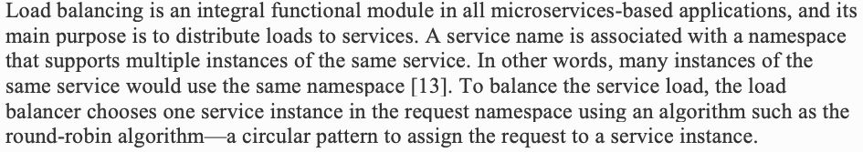
Security strategies for load balancing (MS-SS-7)
負荷分散のためのセキュリティ戦略（MS-SS-7）
未レビュー訳•All programs supporting the load balancing function should be decoupled from individual service requests. For example, the program that performs health checks on services to determine the load balancing pool should run asynchronously in the background.
•負荷分散機能をサポートするすべてのプログラムは、個々のサービスリクエストから分離されるべきである。例えば、負荷分散プールを決定するためにサービス上でヘルスチェックを実行するプログラムは、バックグラウンドで非同期に実行されるべきである。
未レビュー訳•Care must be taken to protect the network connection between the load balancer and the microservice platform.
•ロードバランサーとマイクロサービスプラットフォーム間のネットワーク接続を保護するために注意を払う必要がある。
未レビュー訳•When a DNS resolver is deployed in front of a source microservice to provide a table of available target microservice instances, it should work in tandem with the health check program to present a single list to the calling microservice.
•利用可能なターゲットマイクロサービスインスタンスのテーブルを提供するために送信元マイクロサービスの前段にDNSリゾルバーが配置される場合、呼び出し元のマイクロサービスに単一のリストを提示するために、ヘルスチェックプログラムと連携して動作すべきである。
4.5.3 Rate Limiting (Throttling)
4.5.3 レート制限（スロットリング）
The primary goal of rate limiting is to ensure that a service is not oversubscribed impacting availability. That is, when one client increases the rate of requests, the service continues its response to other clients. This is achieved by setting a limit on how often a client can call a service within a defined window of time. When the limit is exceeded, the client—rather than receiving an application-related response—receives a notification that the allowed rate has been exceeded as well as additional data regarding the limit number and the time at which the limit counter will be reset for the requestor to resume receiving responses. A secondary goal of rate limiting is to mitigate the impact of Denial of Service attacks. Closely related to the concept of rate limiting is quota management or conditional rate limiting where limits are determined based on application requirements rather than infrastructure limitations or requirements.
レート制限の主な目的は、サービスが過剰に利用されて可用性に影響が及ばないようにすることである。すなわち、あるクライアントがリクエストのレートを上げた場合でも、サービスは他のクライアントへの応答を継続する。これは、定義された時間枠内でクライアントがサービスを呼び出せる頻度に制限を設けることで達成される。制限を超過した場合、クライアントはアプリケーション関連の応答を受け取るのではなく、許可されたレートを超過したという通知と、制限数、およびリクエスト元が応答の受信を再開できるよう制限カウンターがリセットされる時刻に関する追加データを受け取る。レート制限の副次的な目的は、DoS（Denial of Service）攻撃の影響を緩和することである。レート制限の概念と密接に関連しているのがクォータ管理または条件付きレート制限であり、ここではインフラストラクチャの制限や要件ではなく、アプリケーションの要件に基づいて制限が決定される。
未レビュー訳Security strategies for rate limiting (MS-SS-8)
レート制限のセキュリティ戦略 (MS-SS-8)
未レビュー訳•Quotas or limits for application usage should be based on both infrastructure and application-related requirements.
•アプリケーション使用のクォータまたは制限は、インフラストラクチャとアプリケーション関連の両方の要件に基づくべきである。
未レビュー訳•Limits should be determined based on well-defined API usage plans.
•制限は、明確に定義されたAPI使用計画に基づいて決定されるべきである。
未レビュー訳24
未レビュー訳•For high security microservices, replay detection must be implemented. Based on the risk, this feature can be configured to detect replays 100 % of the time or perform random detection.
•高セキュリティのマイクロサービスでは、リプレイ検出を実装しなければならない。リスクに基づいて、この機能は100 %の確率でリプレイを検出するか、ランダムな検出を実行するように構成できる。
未レビュー訳4.6 Integrity Assurance Strategies
4.6 完全性保証戦略
Integrity assurance requirements in the context of microservices-based applications arise under two contexts:
マイクロサービスベースのアプリケーションの文脈における完全性保証の要件は、以下の2つの状況で生じる。
未レビュー訳•When new versions of microservices are inducted into the system.
•マイクロサービスの新しいバージョンがシステムに導入される場合。
•For supporting session persistence during a transaction.
•トランザクション中のセッション持続性をサポートする場合。
Monitored induction of new releases: Whenever a newer version of a microservice is released, its induction must be a gradual process since (a) all clients may not be ready to use the new version, and (b) the behavior of the new version for all scenarios and use cases may not meet the business process expectation despite extensive testing. To address this situation, a technique called canary release is often adopted [4]. Under this technique, only a limited number of requests are routed to the new version after it is brought online, and the rest are routed to the existing operational version. After a period of observation provides assurance that the new version meets performance and integrity metrics, all of the requests are routed to the new version.
新リリースの監視下での導入：マイクロサービスの新しいバージョンがリリースされる際は常に、(a) すべてのクライアントが新しいバージョンを使用する準備が整っていない可能性があり、(b) 広範なテストにもかかわらず、すべてのシナリオやユースケースに対する新しいバージョンの動作がビジネスプロセスの期待を満たさない可能性があるため、その導入は段階的なプロセスでなければならない。この状況に対処するために、カナリアリリースと呼ばれる手法がしばしば採用される [4]。この手法では、新しいバージョンがオンラインになった後、限定された数のリクエストのみが新しいバージョンにルーティングされ、残りは既存の運用バージョンにルーティングされる。観察期間によって新しいバージョンがパフォーマンスおよび完全性の指標を満たしているという確証が得られた後、すべてのリクエストが新しいバージョンにルーティングされる。
未レビュー訳Security (integrity assurance) strategies for the induction of new versions of microservices (MS-SS-9):
マイクロサービスの新しいバージョンの導入に関するセキュリティ（完全性保証）戦略（MS-SS-9）：
•The traffic to both the existing version and the new version of the service should be routed through a central node, such as an API gateway, to monitor that the blue/green transition occurs in a controlled manner and to monitor the risk associated with a canary release. Security monitoring should cover nodes hosting both the existing and newer versions.
•ブルー/グリーン移行が制御された方法で行われることを監視し、カナリアリリースに関連するリスクを監視するために、サービスの既存バージョンと新バージョンの両方へのトラフィックは、APIゲートウェイなどの中心ノードを経由してルーティングされるべきである。セキュリティ監視は、既存バージョンと新バージョンの両方をホストするノードを対象とすべきである。
•Usage monitoring of the existing version should steadily increase traffic to the new version.
•既存バージョンの利用状況の監視により、新バージョンへのトラフィックを着実に増加させるべきである。
•The performance and functional correctness of the new version should be factors in increasing traffic to the new version.
•新バージョンのパフォーマンスおよび機能的な正確性は、新バージョンへのトラフィックを増加させる要因となるべきである。
未レビュー訳•Client preference for the version (existing or new) should be taken into consideration while designing a canary release technique.
•カナリアリリース手法を設計する際には、バージョン（既存または新規）に対するクライアントの選好を考慮に入れるべきである。
Session persistence: It is critical to send all requests in a client session to the same upstream microservice instance since clients execute a complete transaction through multiple requests to a specific service, and the target of all requests should be to the same upstream service instance in that session. This requirement is called session persistence. A situation that could potentially break this requirement is one wherein the microservice stores its state locally, and the load balancer handling individual requests forwards a request from an in-progress user session to a different microservice server or instance. One of the methods for implementing session persistence is sticky cookie. In this method, there is a mechanism to add a session cookie to the first response from the upstream microservice group to a given client, identifying (in an encoded fashion) the server that generated the response. Subsequent requests from the client include the cookie value, and the same mechanism uses it to route the request to the same upstream server [16]. 25
セッション維持（Session persistence）：クライアントは特定のサービスに対する複数のリクエストを通じて完全なトランザクションを実行し、そのセッション内におけるすべてのリクエストのターゲットは同一の上流サービスインスタンスでなければならないため、クライアントセッション内のすべてのリクエストを同一の上流マイクロサービスインスタンスに送信することが極めて重要である。この要件はセッション維持と呼ばれる。この要件を破る可能性がある状況としては、マイクロサービスが自身の状態をローカルに保存しており、個々のリクエストを処理するロードバランサーが進行中のユーザーセッションからのリクエストを別のマイクロサービスサーバーまたはインスタンスに転送してしまうケースが挙げられる。セッション維持を実装するための手法の1つにスティッキーCookie（sticky cookie）がある。この手法では、上流のマイクロサービスグループから特定のクライアントへの最初のレスポンスにセッションCookieを追加し、レスポンスを生成したサーバーを（エンコードされた形式で）識別するメカニズムが存在する。クライアントからの後続のリクエストにはそのCookie値が含まれ、同一のメカニズムがそれを使用してリクエストを同一の上流サーバーにルーティングする [16]。 25
未レビュー訳Security (integrity assurance) strategies for handling session persistence (MS-SS-10):
セッション維持を処理するためのセキュリティ（完全性保証）戦略（MS-SS-10）：
未レビュー訳•The session information for a client must be stored securely.
•クライアントのセッション情報は安全に保存されなければならない。
•The artifact used for conveying the binding server information must be protected.
•バインディングサーバー情報を伝達するために使用されるアーティファクトは保護されなければならない。
•Internal authorization tokens must not be provided back to the user, and the user's session tokens must not be passed beyond the gateway for use in policy decisions.
•内部認可トークンをユーザーに返却してはならず、ポリシー決定で使用するためにユーザーのセッショントークンをゲートウェイを越えて渡してはならない。
4.7 Countering Internet-based Attacks
4.7 インターネットベースの攻撃への対抗
Though it is impossible to protect against all types of Internet-based attacks including botnets, microservice APIs must be provided with detection and prevention capabilities against credential-stuffing and credential abuse attacks as well as the capability to detect malicious botnets. This is especially critical for those applications where each of the microservices are independently callable and carry their own sets of credentials. Credential abuse attacks can be detected using offline threat analysis or run-time solutions [17]. Detection of botnet attacks is provided by a dedicated bot manager product or as an add-on feature in web application firewalls (WAF).
ボットネットを含むあらゆる種類のインターネットベースの攻撃から保護することは不可能であるものの、マイクロサービスAPIには、悪意のあるボットネットを検出する機能に加えて、クレデンシャルスタッフィングおよびクレデンシャル不正使用攻撃に対する検出および防止機能を備える必要がある。これは、各マイクロサービスが独立して呼び出し可能であり、独自のクレデンシャルセットを保持しているアプリケーションにおいて特に極めて重要である。クレデンシャル不正使用攻撃は、オフラインの脅威分析またはランタイムソリューションを使用して検出できる [17]。ボットネット攻撃の検出は、専用のボットマネージャー製品によって、またはWebアプリケーションファイアウォール（WAF）のアドオン機能として提供される。
Security strategies for preventing credential abuse and stuffing attacks (MS-SS-11):
クレデンシャル不正使用およびスタッフィング攻撃を防止するためのセキュリティ戦略（MS-SS-11）：
•A run-time prevention strategy for credential abuse is preferable to an offline strategy. A threshold for a designated time interval from a given location (e.g., IP address) for the number of login attempts should be established; if the threshold is exceeded, preventive measures must be triggered by the authentication/authorization server. This feature must
•クレデンシャル不正使用に対するランタイム防止戦略は、オフライン戦略よりも望ましい。特定の場所（例：IPアドレス）からの指定された時間間隔におけるログイン試行回数のしきい値を設定する必要がある。しきい値を超えた場合、認証／認可サーバーによって防止策がトリガーされなければならない。この機能は
未レビュー訳原本PDFの抜粋画像
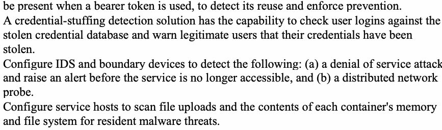
26
未レビュー訳5 Security Strategies for Architectural Frameworks in Microservices
5 マイクロサービスにおけるアーキテクチャフレームワークのセキュリティ戦略
未レビュー訳原本PDFの抜粋画像
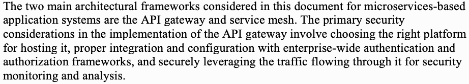
Security strategy for API gateway implementation (MS-SS-12):
APIゲートウェイ実装のためのセキュリティ戦略（MS-SS-12）：
•Integrate the API gateway with an identity management application to provision credentials before activating the API.
•APIをアクティブ化する前に認証情報をプロビジョニングするため、APIゲートウェイをアイデンティティ管理アプリケーションと統合する。
未レビュー訳•When identity management is invoked through the API gateway, connectors should be provided for integrating with identity providers (IdPs).
•APIゲートウェイを通じてアイデンティティ管理が呼び出される場合、アイデンティティプロバイダー（IdP）と統合するためのコネクタが提供されるべきである。
•The API gateway should have a connector to an artifact that can generate an access token for the client request (e.g., OAuth 2.0 Authorization Server).
•APIゲートウェイは、クライアント要求に対するアクセストークンを生成できるアーティファクト（例：OAuth 2.0認可サーバー）へのコネクタを持つべきである。
•Securely channel all traffic information to a monitoring and/or analytics application for detecting attacks (e.g., denial of service, malicious actions) and unearthing explanations for degrading performance.
•攻撃（例：サービス拒否、悪意ある行動）の検知やパフォーマンス低下の理由の解明のために、すべてのトラフィック情報を監視および/または分析アプリケーションへセキュアに転送する。
未レビュー訳•Distributed gateway deployments (or a combination of initial gateway (that intercepts all client accesses) and microgateways (closer to microservices)) should have a token translation (exchange) service [18] between gateways. The token presented to the initial gateway should have permissions with a broad scope whereas the token presented to inside gateways (or microgateways) should be more narrowly scoped with specific permissions or an entirely different token type that is appropriate for the target microservice platform. This helps to implement the least privilege paradigm.
•分散ゲートウェイ展開（または（すべてのクライアントアクセスをインターセプトする）初期ゲートウェイと（マイクロサービスにより近い）マイクロゲートウェイの組み合わせ）では、ゲートウェイ間にトークン変換（交換）サービス[18]を設けるべきである。初期ゲートウェイに提示されるトークンは広範囲のスコープを持つ権限を持つべきであるのに対し、内部ゲートウェイ（またはマイクロゲートウェイ）に提示されるトークンは、特定の権限を持つより狭いスコープに限定されるか、あるいはターゲットとなるマイクロサービスプラットフォームに適したまったく異なるトークンタイプであるべきである。これは最小権限のパラダイムを実装するのに役立つ。
未レビュー訳Implementing a service mesh can help ensure that proper configuration parameters associated with various security policies are defined correctly in the control plane so that the intent of the security policies are met, and the service mesh alone does not introduce new vulnerabilities.
サービスメッシュの実装は、セキュリティポリシーの意図が確実に満たされ、サービスメッシュ単体で新たな脆弱性が生じないように、さまざまなセキュリティポリシーに関連付けられた適切な構成パラメータがコントロールプレーンで正しく定義されることを確実にするのに役立つ。
Security strategy for service mesh implementation (MS-SS-13):
サービスメッシュ実装のためのセキュリティ戦略（MS-SS-13）：
•Provide policy support for designating a specific communication protocol between pairs of services and specifying the traffic load between pairs of services based on application requirements.
•アプリケーションの要件に基づいて、サービスのペア間における特定の通信プロトコルの指定、およびサービスのペア間のトラフィック負荷の指定を行うポリシーサポートを提供すること。
•The default configuration should always enable access control policies for all services.
•デフォルト設定では、常にすべてのサービスに対してアクセス制御ポリシーを有効にすべきである。
•Avoid configurations that may lead to privilege escalation (e.g., the service role permissions and binding of the service role to service user accounts).
•特権昇格につながる可能性のある設定（サービスロールのアクセス許可や、サービスユーザーアカウントへのサービスロールのバインドなど）は避けること。
未レビュー訳•Service mesh deployments should have configuration capabilities to specify resource usage limits for its components. The absence of this feature creates the potential for these components to impact the resiliency and availability of the overall microservices application.
•サービスメッシュの展開環境には、そのコンポーネントのリソース使用制限を指定する設定機能が必要である。この機能がない場合、これらのコンポーネントがマイクロサービスアプリケーション全体の耐障害性や可用性に影響を与える可能性がある。
未レビュー訳27
未レビュー訳•Service mesh deployments should have configuration capabilities to collect and send environment metrics, including request metrics, to a centralized service for monitoring. Policies should allow for specifying either a single service mesh or multiple service meshes (each with their own control plane) for multi-cluster microservices environments to ensure high availability and resiliency in those scenarios.
•サービスメッシュの展開環境には、リクエストメトリクスを含む環境メトリクスを収集し、監視のための中央サービスに送信する設定機能が必要である。マルチクラスターのマイクロサービス環境において高い可用性と耐障害性を確保するために、ポリシーでは、単一のサービスメッシュまたは（それぞれが独自のコントロールプレーンを持つ）複数のサービスメッシュのいずれかを指定できるようにする必要がある。
未レビュー訳•For highly sensitive microservices-based applications, Layer 3 network segmentation must be configured within the orchestrator platform to complement the Layer 5 network segmentation achieved throughout the service mesh layer. This is a countermeasure to the threat by malicious actors circumventing or bypassing the sidecar proxy that the service mesh uses for firewalling and blocking network traffic.
•機密性の高いマイクロサービスベースのアプリケーションでは、サービスメッシュレイヤー全体で達成されるレイヤー5ネットワークセグメンテーションを補完するために、オーケストレータープラットフォーム内でレイヤー3ネットワークセグメンテーションを設定しなければならない。これは、サービスメッシュがネットワークトラフィックのファイアウォール処理やブロックに使用するサイドカープロキシを、悪意のある攻撃者が回避または迂回する脅威に対する対抗策である。
28
未レビュー訳原本PDFの抜粋画像
A.1
A.1
未レビュー訳Design and Deployment Differences
設計およびデプロイメントの違い
未レビュー訳Conceptually, a monolithic architecture of an application involves generating one huge artifact that must be deployed in its entirety, while a microservices-based application contains multiple self-contained, loosely-coupled executables called services or microservices. The individual services can be deployed independently. In monolithic applications, any change to a certain functionality of the overall application will involve recompilation and, in some instances, re-testing of the whole application before being deployed again. However, in the case of microservices, only the relevant service is modified and redeployed since the independent nature of the services ensures that a change in one does not logically affect the functionality of another. In monolithic applications, any increase in workload due to an increase in the number of users or the frequency of application usage will involve allocating resources to the whole application, whereas in microservices, the increase in resources can be selectively applied to those services whose performance is less than desirable, thus providing flexibility in scalability efforts.
概念上、アプリケーションのモノリシックアーキテクチャでは、全体としてデプロイしなければならない1つの巨大なアーティファクトの生成を伴うのに対し、マイクロサービスベースのアプリケーションには、サービスまたはマイクロサービスと呼ばれる、自己完結型で疎結合された複数の実行可能ファイルが含まれる。個々のサービスは個別にデプロイできる。モノリシックアプリケーションでは、アプリケーション全体の特定の機能に対するいかなる変更も、再デプロイされる前にアプリケーション全体の再コンパイル、および場合によっては再テストを伴う。しかし、マイクロサービスの場合、サービスの独立した性質によって1つの変更が論理的にもう一方の機能に影響を与えないことが保証されるため、関連するサービスのみが変更され再デプロイされる。モノリシックアプリケーションでは、ユーザー数の増加やアプリケーションの使用頻度の増加によるワークロードのいかなる増加も、アプリケーション全体へのリソースの割り当てを伴うのに対し、マイクロサービスでは、パフォーマンスが望ましい水準に達していないサービスに対して選択的にリソースの増加を適用できるため、スケーラビリティの取り組みに柔軟性がもたらされる。
未レビュー訳Some monolithic applications may be constructed modularly but may not have semantic or logical modularity. Modular construction refers to how an application may be built from a large number of components and libraries that may have been supplied by different vendors, and some components (e.g., database) may be distributed across the network [13]. In such monolithic applications, the design and specification of APIs may be similar to that in a microservices architecture. However, the difference between such modularly designed monolithic applications (sometimes called a classic modular design) and a microservices-based application is that in the latter, the individual API is network-exposed and therefore independently callable and re-usable.
モノリシックアプリケーションの中には、モジュール式に構築されていても、意味論的または論理的なモジュール性を持たない場合がある。モジュール式の構築とは、異なるベンダーによって提供された可能性のある多数のコンポーネントやライブラリからアプリケーションが構築され、一部のコンポーネント（データベースなど）がネットワーク全体に分散配置されている場合があること [13] を指す。このようなモノリシックアプリケーションでは、APIの設計および仕様がマイクロサービスアーキテクチャのものと類似している場合がある。しかし、このようなモジュール設計されたモノリシックアプリケーション（クラシックモジュラー設計と呼ばれることもある）とマイクロサービスベースのアプリケーションの違いは、後者では個々のAPIがネットワークに公開されており、したがって個別に呼び出し可能で再利用可能である点にある。
The differences between monolithic and microservices-based applications is summarized in Table 3.
モノリシックアプリケーションとマイクロサービスベースのアプリケーションの違いは、Table 3にまとめられている。
Table 3: Logical Differences between Monolithic and Microservices-based Application
表3：モノリシックアプリケーションとマイクロサービスベースのアプリケーションの論理的な違い
未レビュー訳| Monolithic Application | Microservices-based Application |
| Must be deployed as a whole. | Independent or selective deployment of services. |
| Change in a small part of the application requires re-deployment of the entire application. | Only the modified services need to be re- deployed. |
| Scalability involves allocating resources to the application as a whole. | Each of the individual services can be selectively scaled up by allocating more resources. |
| API calls are local. | Network-exposed APIs enable independent invocation and re-usability. |
原本PDFの抜粋画像
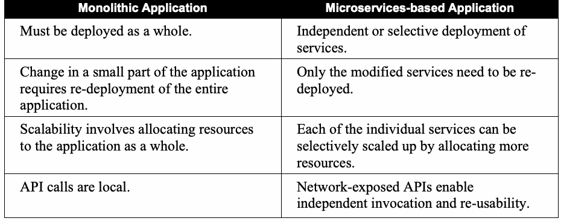
| モノリシックアプリケーション | マイクロサービスベースのアプリケーション |
| 全体としてデプロイしなければならない。 | サービスの独立した、または選択的なデプロイ。 |
| アプリケーションの小さな一部における変更であっても、アプリケーション全体の再デプロイが必要となる。 | 変更されたサービスのみを再デプロイする必要がある。 |
| スケーラビリティには、アプリケーション全体へのリソースの割り当てが伴う。 | 個々のサービスはそれぞれ、より多くのリソースを割り当てることによって選択的にスケールアップできる。 |
| API呼び出しはローカルである。 | ネットワーク公開されたAPIにより、独立した呼び出しと再利用性が可能になる。 |
29
未レビュー訳A.1.1 An Example Application to Illustrate the Design and Deployment differences
A.1.1 設計および配備の違いを説明するためのサンプルアプリケーション
未レビュー訳The following example of a small, Online Shopping Application illustrates the design and deployment differences discussed above. The main functions of this application are:
小規模なオンラインショッピングアプリケーションの以下の例は、上記で議論した設計と配備の違いを説明している。このアプリケーションの主な機能は以下の通りである。
未レビュー訳•A module that displays the catalog of products offered by the retailer with pictures of the products, product numbers, product names, and the unit prices;
•小売業者が提供する商品のカタログを、商品の写真、商品番号、商品名、単価とともに表示するモジュール。
未レビュー訳•A module for processing customer orders by gathering information about the customer (e.g., name, address) and the details of the order (e.g., name of the product from the catalog, quantity, unit price) as well as creating a bin containing all the items ordered in that session;
•顧客に関する情報（例：氏名、住所）および注文の詳細（例：カタログからの商品名、数量、単価）を収集するとともに、そのセッションで注文されたすべての品目を含むビンを作成することによって顧客の注文を処理するモジュール。
未レビュー訳•A module for preparing the order for shipping, specifying the total bill of lading (i.e., the total package to be shipped, quantity of each item in the order, shipping preferences, shipping address); and
•出荷に向けて注文を準備し、総運送状（すなわち、出荷される荷物の総量、注文内の各品目の数量、配送設定、配送先住所）を指定するモジュール。ならびに
未レビュー訳•A module for invoicing the customer with a built-in feature for making payments by credit card or bank account.
•クレジットカードまたは銀行口座による支払いを行うための組み込み機能を備えた、顧客に請求書を発行するためのモジュール。
The differences in the design of this Online Shopping Application as a monolithic versus microservices-based are given in Table 4. Schematic diagrams of this application under monolithic and microservices architectures are given in Figures 1 and 2 respectively.
モノリシックとマイクロサービスベースでのこのオンラインショッピングアプリケーションの設計の違いは、Table 4に示されている。モノリシックアーキテクチャおよびマイクロサービスアーキテクチャの下でのこのアプリケーションの概略図は、それぞれFigures 1および2に示されている。
Table 4: Differences in Application Construct between Monolithic and Microservices-based Application
表4：モノリシックアプリケーションとマイクロサービスベースのアプリケーションにおけるアプリケーション構成概念の違い
未レビュー訳| Application Construct | Monolith | Microservices-based |
| Communication between functional modules | All communications are in the form of procedure calls or some internal data structures (e.g., socket). The module handling the order processing makes a procedural call to the module handling the shipping function and waits for successful completion (blocking type synchronous communication). | The shipping functionality and the order processing functionality are each designed as independent services. Communication takes place as an API call across the network using a web protocol. The order processing microservice can either (a) make a request- response call to the shipping microservice and wait for a response or (b) put the details of the order to be shipped in a message queue to be picked up asynchronously by the shipping microservice, which has subscribed to the event. |
| Handling changes or enhancements (e.g., invoicing module needs to be changed to accept debit cards) | The entire application must be recompiled and redeployed after making the necessary changes. | The invoicing function is designed as a separate microservice, so that service can simply be recompiled and redeployed. |
原本PDFの抜粋画像
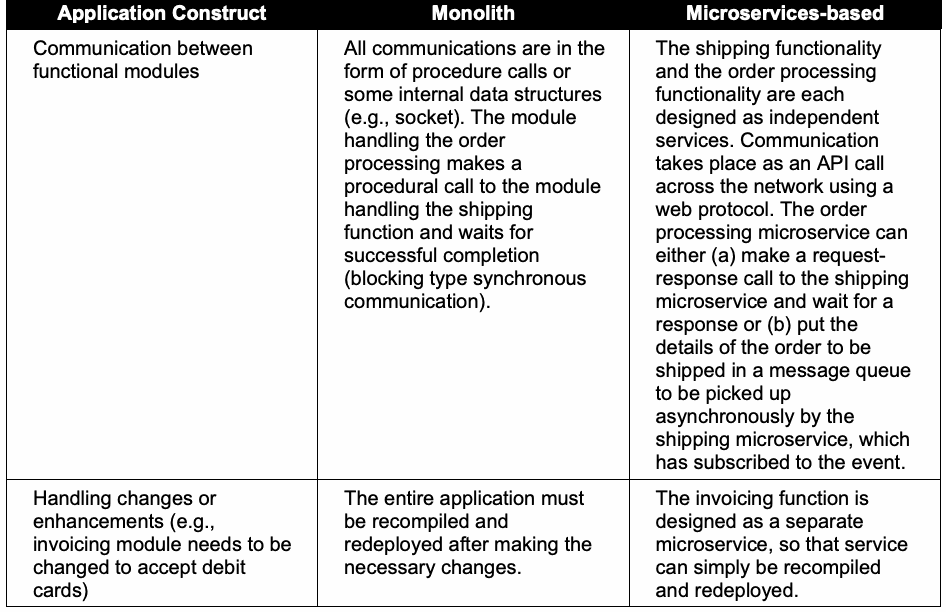
| アプリケーション構成概念 | モノリス | マイクロサービスベース |
| 機能モジュール間の通信 | すべての通信は手続き呼び出しまたは何らかの内部データ構造（例：ソケット）の形式をとる。注文処理を処理するモジュールは、配送機能を処理するモジュールを手続き呼び出しし、正常完了を待機する（ブロッキング型同期通信）。 | 配送機能と注文処理機能は、それぞれ独立したサービスとして設計される。通信は、Webプロトコルを使用したネットワーク経由のAPI呼び出しとして行われる。注文処理マイクロサービスは、(a) 配送マイクロサービスに対してリクエスト-レスポンス型の呼び出しを行って応答を待機するか、または (b) イベントをサブスクライブしている配送マイクロサービスによって非同期に取得されるように、配送対象の注文の詳細をメッセージキューに投入する、のいずれかが可能である。 |
| 変更または機能強化への対応（例：デビットカードを受け付けるための請求モジュールの変更の必要性） | 必要な変更を加えた後、アプリケーション全体を再コンパイルおよび再デプロイしなければならない。 | 請求機能は個別のマイクロサービスとして設計されているため、そのサービスを単に再コンパイルして再デプロイすればよい。 |
30
未レビュー訳| Application Construct | Monolith | Microservices-based |
| Scaling the application, allocation of increased resources (e.g., order processing module needs to be allocated more resources to handle a larger load) | The order processing functionality involves longer transaction times compared to shipping or invoicing functions. Vertical scaling that involves using servers with more memory or CPUs must be deployed for the entire application. | It is enough to allocate increased resources for hardware where the order processing microservice is deployed. Also, the number of instances of order- processing microservices can be increased for better load balancing. |
| Development and deployment strategy | Development is handled by the development team which, after necessary testing by the QA team, transfers the task of deployment to an infrastructure team that oversees the allocation of suitable resources for deployment. | The complete lifecycle—from development to deployment—is handled by a single DevOps team for each microservice since it is a relatively small module with a single functionality and built- in platform (e.g., OS, languages libraries) that is optimal for that functionality. |
原本PDFの抜粋画像
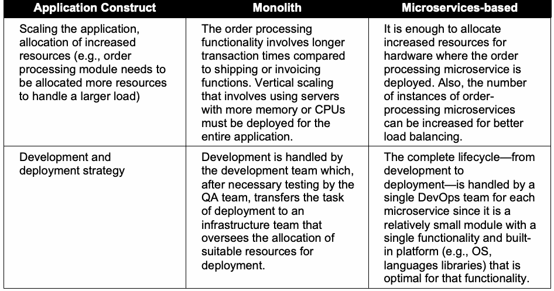
| アプリケーション構成概念 | モノリス | マイクロサービスベース |
| アプリケーションのスケーリング、増加したリソースの割り当て（例：より大きな負荷を処理するために注文処理モジュールにより多くのリソースを割り当てる必要性） | 注文処理機能は、配送機能や請求機能に比べてトランザクション時間が長くなる。アプリケーション全体に対して、より多くのメモリまたはCPUを備えたサーバーを使用する垂直スケーリング（スケールアップ）を適用しなければならない。 | 注文処理マイクロサービスがデプロイされているハードウェアに対して、増加分のリソースを割り当てるだけで十分である。また、負荷分散を向上させるために、注文処理マイクロサービスのインスタンス数を増やすことができる。 |
| 開発およびデプロイ戦略 | 開発は開発チームが担当し、QAチームによる必要なテストを経た後、デプロイに適したリソースの割り当てを監督するインフラストラクチャチームにデプロイ作業を引き継ぐ。 | 各マイクロサービスは、単一の機能と、その機能に最適化された組み込みプラットフォーム（例：OS、言語ライブラリ）を備えた比較的小さなモジュールであるため、開発からデプロイまでの完全なライフサイクルは単一のDevOpsチームによって処理される。 |
A.2
A.2
未レビュー訳Run-time Differences
ランタイムの違い
未レビュー訳A monolithic application runs as a single computational node such that the node is aware of the overall system or application state. In a microservices environment, the application is designed as a set of multiple nodes that each provide a service. Since they operate without the need to coordinate with others, the overall system state is unknown to individual nodes. In the absence of any global information or global variable values, the individual nodes make decisions based on locally available information. The independence of the nodes means that failure of one node does not affect other nodes. Unlike monolithic applications where services may share database connections or a data repository, a microservice architecture may deploy a pattern wherein each service has its own data repository. In many situations, interaction between services may require a distributed transaction which, if not designed properly, may affect the integrity of the databases.
モノリシックアプリケーションは単一の計算ノードとして実行されるため、そのノードはシステム全体またはアプリケーションの状態を認識している。マイクロサービス環境では、アプリケーションはそれぞれがサービスを提供する複数のノードのセットとして設計される。これらは互いに調整する必要なく動作するため、個々のノードにはシステム全体の状態は不明である。グローバル情報やグローバル変数の値が存在しない状況では、個々のノードは局所的に利用可能な情報に基づいて意思決定を行う。ノードの独立性は、1つのノードの障害が他のノードに影響を与えないことを意味する。サービスがデータベース接続やデータリポジトリを共有することがあるモノリシックアプリケーションとは異なり、マイクロサービスアーキテクチャでは各サービスが独自のデータリポジトリを持つパターンを採用することがある。多くの状況において、サービス間の相互作用には分散トランザクションが必要となる場合があり、適切に設計されていない場合はデータベースの整合性に影響を与える可能性がある。
未レビュー訳The runtime differences between monolithic and microservices applications and their implications are summarized in Table 5.
モノリシックアプリケーションとマイクロサービスアプリケーションにおけるランタイムの違いおよびその影響は、表5に要約されている。
未レビュー訳Table 5: Architectural Differences between Monolithic and Microservices-based Application
表5：モノリシックアプリケーションとマイクロサービスベースのアプリケーション間のアーキテクチャ上の相違点
未レビュー訳| Monolithic Application | Microservices-based Application |
| Runs as a single computational node; overall state information fully known. | Designed as a set of multiple nodes, each providing a service; overall system state is unknown to individual nodes. |
| Designed to make use of global information or values of global variables. | Individual nodes make decisions based on locally available information. |
| Failure of the node means crash of the application. | Failure of one node should not affect other nodes. |
原本PDFの抜粋画像
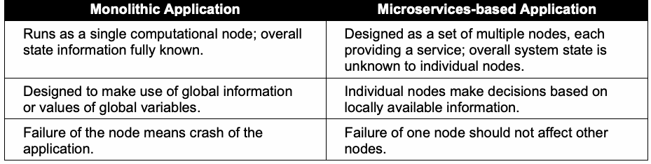
| モノリシックアプリケーション | マイクロサービスベースのアプリケーション |
| 単一の計算ノードとして動作し、全体的な状態情報は完全に把握される。 | それぞれがサービスを提供する複数のノードのセットとして設計され、個々のノードにとってシステム全体のステータスは不明である。 |
| グローバル情報またはグローバル変数の値を利用するように設計されている。 | 個々のノードはローカルに利用可能な情報に基づいて決定を下す。 |
| ノードの障害はアプリケーションのクラッシュを意味する。 | 1つのノードの障害が他のノードに影響を与えるべきではない。 |
31
未レビュー訳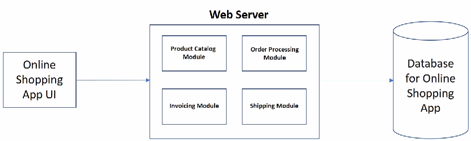
単一構成のオンラインショッピングアプリケーション。オンラインショッピングアプリのユーザーインターフェースがWebサーバーに接続する。Webサーバー内には商品カタログ（Product Catalog）、注文処理（Order Processing）、請求（Invoicing）、配送（Shipping）の各モジュールがあり、オンラインショッピングアプリ用データベースに接続する。
Figure 1: Online Shopping Application – Monolithic Architecture
図1：オンラインショッピングアプリケーション – モノリシックアーキテクチャ
未レビュー訳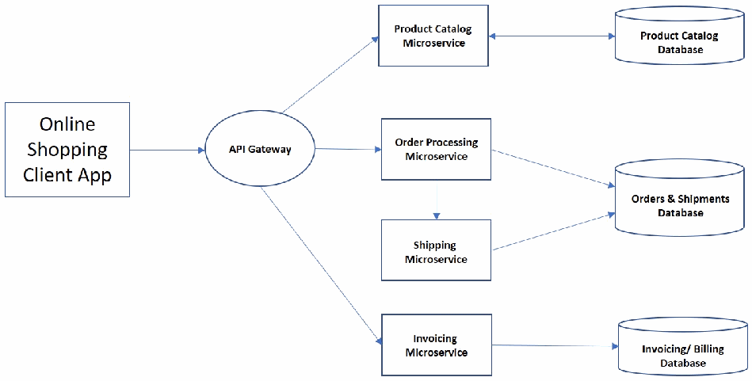
マイクロサービス構成のオンラインショッピングアプリケーション。オンラインショッピングのクライアントアプリからAPIゲートウェイを介して、商品カタログ、注文処理、請求、配送の各マイクロサービスへ接続する。商品カタログマイクロサービスは商品カタログデータベースに、注文処理と配送は注文・出荷データベースに、請求マイクロサービスは請求・課金データベースに接続する。注文処理マイクロサービスから配送マイクロサービスへも連携する。
Figure 2: Online Shopping Application – Microservices Architecture
図2：オンラインショッピングアプリケーション – マイクロサービスアーキテクチャ
未レビュー訳32
未レビュー訳Appendix B—Traceability of Security Strategies to Microservices Architectural Features
付録B—セキュリティ戦略とマイクロサービスアーキテクチャ機能の追跡可能性
未レビュー訳All security strategies discussed in sections 4 & 5 (a total of 13) are listed in Table 6 along with either the microservice core feature or the architectural framework to which each of them pertain.
セクション4および5で説明されているすべてのセキュリティ戦略（合計13項目）は、それぞれが関連するマイクロサービスのコア機能またはアーキテクチャフレームワークのいずれかと併せて表6に記載されている。
未レビュー訳33
未レビュー訳Table 6: Security Strategies for Microservices
表6：マイクロサービスのセキュリティ戦略
未レビュー訳| Security Strategy | Security Strategy | Microservices Core Feature / |
| Identifier | Architectural Framework | |
| MS-SS-1 | • Authentication to microservices APIs that have access to sensitive data should not be done simply by using API keys. Access to such APIs should require authentication tokens that have either been digitally signed (e.g., client credentials grant) or that is verified with an authoritative source. Additionally, some services may require either single-use tokens or short-lived tokens (tokens that expire after a short time period) to limit the damage a compromised token can cause. • Authentication tokens should be handle-based, cryptographically signed, or protected by an HMAC scheme. • Every API Key that is used in the application should have restrictions specified both for the applications (e.g., mobile app, IP address) and the set of APIs where they can be used. • The restriction scope for functionality of every API Key should be commensurate with the level of assurance provided during identity proofing, whether it be machine or human driven identity proofing. • When stateless authentication tokens (e.g., JSON Web Tokens (JWT)) are used by implementing shared libraries associated with a microservice, the following security precautions must be observed: (a) the token expiry times should be as short as possible since they determine the duration of the session and an active session cannot be revoked, and (b) the token secret key must not be a part of the library code, it must be a dynamic variable represented by an environmental variable or specified in an environment data file. The key value should be stored in a data vault solution. • If standards-based techniques such as OAuth or OpenID connect are implemented, they must be deployed securely [19]. | Authentication |
原本PDFの抜粋画像
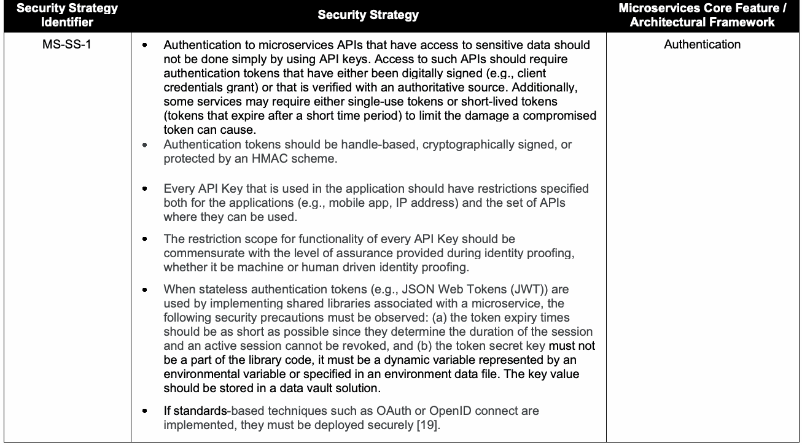
| セキュリティ戦略 | セキュリティ戦略 | マイクロサービスのコア機能／ |
| 識別子 | アーキテクチャフレームワーク | |
| MS-SS-1 | • 機密データにアクセスできるマイクロサービスAPIへの認証は、単にAPIキーを使用するだけで行われるべきではない。そのようなAPIへのアクセスには、デジタル署名されている（例：クライアント認証情報グラント）か、または信頼できる情報源によって検証される認証トークンを要求する必要がある。さらに、一部のサービスでは、侵害されたトークンがもたらす損害を抑えるために、使い捨てトークンまたは有効期間の短いトークン（短時間で失効するトークン）のいずれかを要求する場合がある。 • 認証トークンは、ハンドルベースであるか、暗号学的に署名されているか、またはHMACスキームによって保護されている必要がある。 • アプリケーションで使用されるすべてのAPIキーは、アプリケーション（例：モバイルアプリ、IPアドレス）と使用可能な一連のAPIの両方に対して指定された制限事項を持つ必要がある。 • すべてのAPIキーの機能に関する制限範囲は、マシンまたは人間のいずれによる身元確認であるかを問わず、身元確認中に提供される保証レベルに見合ったものである必要がある。 • マイクロサービスに関連付けられた共有ライブラリを実装することによってステートレス認証トークン（例：JSON Web Token（JWT））を使用する場合、以下のセキュリティ上の予防措置を遵守しなければならない：(a) トークンの有効期限はセッションの継続期間を決定し、アクティブなセッションを取り消すことはできないため、できる限り短く設定する必要がある、および (b) トークンの秘密鍵はライブラリコードの一部であってはならず、環境変数によって表される動的変数であるか、または環境データファイル内で指定される動的変数でなければならない。鍵の値はデータボールトソリューションに保存される必要がある。 • OAuthやOpenID Connectなどの標準ベースの技術を実装する場合、それらは安全に導入されなければならない [19]。 | 認証 |
原本PDFの抜粋画像
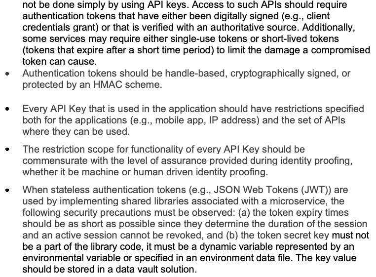
34
未レビュー訳| Security Strategy | Security Strategy | Microservices Core Feature / |
| Identifier | Architectural Framework | |
| MS-SS-2 | • Access policies to all APIs and their resources should be defined and provisioned to an access server. Access policies at a coarse level of granularity say “Permit to Call for a given set of addressable functionalities” should be defined and enforced at the initial API gateway while authorizations at the finer level of granularity (e.g., related to domain of the particular microservices’ business logic) should be defined and enforced closer to the location of the microservices (e.g., at the microgateway) or sometimes at the microservice itself. • Caching Mechanism: It may be appropriate to allow microservices to cache policy data; this cache should be only relied upon when an access server is unavailable and should expire after a duration appropriate for the environment/infrastructure. • The access server should be capable of supporting fine-grained policies. • Access decisions from the access server should be conveyed to individual and sets of microservices through standardized tokens encoded in a platform- neutral format (e.g., OAuth 2.0 token encoded in JSON format). The token can be either a handle-based token or an assertion bearing token. • The scope of internal authorization tokens appended by the micro gateway or decision point to each request should be carefully controlled; for example, in a request for transaction, the internal authorization token should be limited in scope to only involve the API endpoints that must be accessed for that transaction. • The API gateway can be leveraged to centralize enforcement of authentication and access control for all downstream microservices, eliminating the need to provide authentication and access control for each of the individual services. If this design is chosen, any component suitably positioned on the network can make anonymous connections to the services bypassing the API gateway and its protections. Mitigating controls such as mutual authentication should be leveraged to prevent direct, anonymous connections to the services." | Access management |
原本PDFの抜粋画像
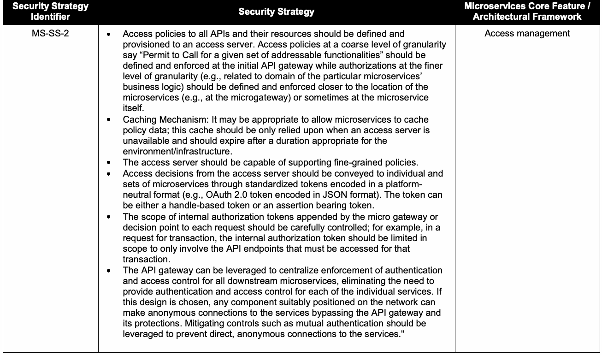
| セキュリティ戦略 | セキュリティ戦略 | マイクロサービスのコア機能 / |
| 識別子 | アーキテクチャフレームワーク | |
| MS-SS-2 | • すべてのAPIおよびそのリソースに対するアクセスポリシーは、定義されてアクセスサーバーにプロビジョニングされるべきである。例えば「指定された一連のアドレス指定可能な機能に対する呼び出し許可」といった粗い粒度のアクセスポリシーは最初のAPIゲートウェイで定義および適用されるべきである一方、より細かい粒度の認可（例：特定のマイクロサービスのビジネスロジックのドメインに関連するもの）は、マイクロサービスの場所のより近く（例：マイクロゲートウェイ）または場合によってはマイクロサービス自体で定義および適用されるべきである。 • キャッシュメカニズム：マイクロサービスにポリシーデータのキャッシュを許可することが適切な場合がある。このキャッシュは、アクセスサーバーが利用できない場合にのみ依拠されるべきであり、環境／インフラストラクチャに適した期間の経過後に失効すべきである。 • アクセスサーバーは、きめ細かいポリシーをサポートできるべきである。 • アクセスサーバーからのアクセス決定は、プラットフォーム中立な形式でエンコードされた標準化されたトークン（例：JSON形式でエンコードされたOAuth 2.0トークン）を通じて、個々のマイクロサービスおよびマイクロサービスのセットに伝達されるべきである。トークンは、ハンドルベースのトークンまたはアサーションを保持するトークンのいずれであってもよい。 • マイクロゲートウェイまたは決定ポイントによって各リクエストに付加される内部認可トークンのスコープは、慎重に制御されるべきである。例えば、トランザクションのリクエストにおいて、内部認可トークンは、そのトランザクションのためにアクセスしなければならないAPIエンドポイントのみに関与するようスコープが制限されるべきである。 • APIゲートウェイを活用して、下流のすべてのマイクロサービスに対する認証およびアクセス制御の適用を一元化し、個々のサービスごとに認証およびアクセス制御を提供する負担を排除することができる。この設計が選択された場合、ネットワーク上で適切に配置されたコンポーネントは、APIゲートウェイとその保護をバイパスして、サービスへの匿名接続を行うことができる。サービスへの直接的かつ匿名の接続を防止するために、相互認証などの緩和策を活用すべきである。" | アクセス管理 |
35
未レビュー訳| Security Strategy | Security Strategy | Microservices Core Feature / |
| Identifier | Architectural Framework | |
| MS-SS-3 | • Service registry capabilities should be provided through servers that are either dedicated or part of a service mesh architecture. • Service registry services should be in a network that has been configured with certain QoS parameters to ensure its availability and resilience. • Communication between an application service and a service registry should be through a secure communication protocol, such as HTTPS/TLS. • Service registry should have validation checks to ensure that only legitimate services are performing the registration and refresh operations or querying its database to discover services • The bounded context and loose coupling principle for microservices should be observed for the service registration/deregistration function; the application service should not have tight coupling with an infrastructure service, such as service registry service, and the service self-registration/deregistration pattern should be avoided. Moreover, when an application service crashes or is running but not in a position to handle requests, it cannot perform deregistration, thus affecting the integrity of the whole process. Registration or deregistration of an application service should be enabled using a third-party registration pattern, and the application service should be restricted to simply querying the service registry for service location information as described in the client-side discovery pattern. • If a third-party registration pattern is implemented, registration/deregistration should only take place after performing a health check on the application service • Distributed service registry should be deployed for large microservices applications, and care should be taken to maintain data consistency among multiple service registry instances | Service registry configuration |
| MS-SS-4 | • Clients should not be configured to call their target services directly but rather be configured to point to the single gateway URL • Client to API gateway as well as Service to Service communication should take place after mutual authentication and be encrypted (e.g., using mTLS protocol) • Frequently interacting services should create keep-alive TLS connections | Secure communication |
原本PDFの抜粋画像
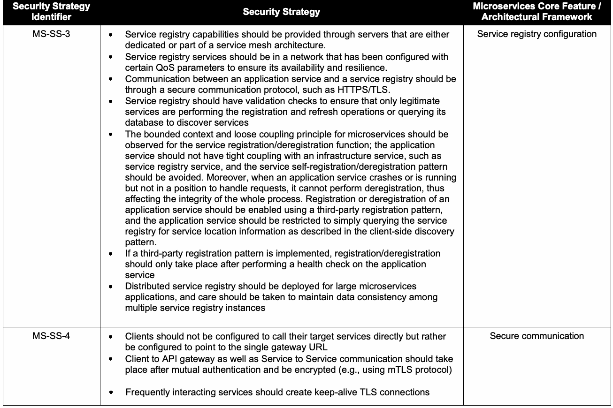
| セキュリティ戦略 | セキュリティ戦略 | マイクロサービスのコア機能 / |
| 識別子 | アーキテクチャフレームワーク | |
| MS-SS-3 | • サービスレジストリ機能は、専用サーバー、またはサービスメッシュアーキテクチャの一部であるサーバーを通じて提供されるべきである。 • サービスレジストリサービスは、その可用性と耐障害性を確保するために特定のQoSパラメータで構成されたネットワーク内に配置されるべきである。 • アプリケーションサービスとサービスレジストリ間の通信は、HTTPS/TLSなどのセキュアな通信プロトコルを介して行われるべきである。 • サービスレジストリは、正当なサービスのみが登録および更新操作を実行していること、またはサービスを検出するためにそのデータベースをクエリしていることを確認するための検証チェックを備えているべきである。 • マイクロサービスにおける境界づけられたコンテキストおよび疎結合の原則は、サービス登録／登録解除機能においても遵守されるべきである。アプリケーションサービスはサービスレジストリサービスなどのインフラストラクチャサービスと密結合すべきではなく、サービスの自己登録／登録解除パターンは回避されるべきである。さらに、アプリケーションサービスがクラッシュした場合、または稼働していてもリクエストを処理できる状態にない場合、登録解除を実行できず、プロセス全体の整合性に影響を与える。アプリケーションサービスの登録または登録解除はサードパーティ登録パターンを使用して有効化されるべきであり、アプリケーションサービスはクライアント側ディスカバリパターンで説明されているように、サービス位置情報を取得するためにサービスレジストリを単純にクエリすることに制限されるべきである。 • サードパーティ登録パターンが実装されている場合、登録／登録解除はアプリケーションサービスのヘルスチェックを実行した後にのみ行われるべきである。 • 大規模なマイクロサービスアプリケーションには分散サービスレジストリが導入されるべきであり、複数のサービスレジストリインスタンス間でデータの一貫性を維持するよう配慮すべきである。 | サービスレジストリ構成 |
| MS-SS-4 | • クライアントはターゲットサービスを直接呼び出すように構成されるべきではなく、単一のゲートウェイURLを指すように構成されるべきである。 • クライアントからAPIゲートウェイへの通信、およびサービス間の通信は、相互認証後に行われ、暗号化されるべきである（例：mTLSプロトコルの使用）。 • 頻繁に対話するサービスは、keep-alive TLS接続を作成すべきである。 | セキュア通信 |
36
未レビュー訳| Security Strategy | Security Strategy | Microservices Core Feature / |
| Identifier | Architectural Framework | |
| MS-SS-5 | • Security monitoring should be performed at both the gateway and service level to detect, alert and respond to inappropriate behavior, for example a bearer token reuse attack and injection attacks. Further, input validation errors and extra parameters errors, crashes and core dumps must be logged. A class of software that can accomplish this is the OWASP AppSensor which could potentially be implemented in the gateway, service mesh and microservice itself. • A central dashboard displays the status of various services and the network segments that link them. At a minimum, the dashboard should show security parameters such as input validation failures and unexpected parameters that are obvious signs of injection attack attempts. • A baseline for normal, uncompromised behavior in terms of the outcome of business logic decisions, contact attempts, and other behavior should be created. The placement and capabilities of IDS nodes should be such that deviations from this baseline can be detected. | Security monitoring |
| MS-SS-6 | • A proxy circuit breaker option should be deployed to limit the trusted component to be the proxy, which avoids the need to place the trust on the clients and microservices (e.g.,setting thresholds and cutting off requests based on the set threshold) since they are multiple components | Implementing circuit breaker |
| MS-SS-7 | • The load balancing function should be decoupled from individual service requests; for example, the program that performs health checks on the services to determine the load balancing pool should run asynchronously in the background • Care must be taken to protect the network connection between the load balancer and the microservice platform. • When a DNS resolver is deployed in front of a source microservice to provide a table of available target microservice instances, it should work in tandem with the health check program to present a single list to the calling microservice | Implementing load balancing |
原本PDFの抜粋画像
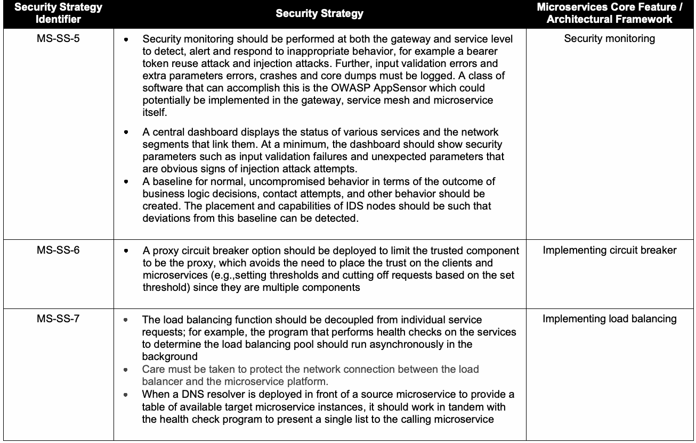
| セキュリティ戦略 | セキュリティ戦略 | マイクロサービスのコア機能 / |
| 識別子 | アーキテクチャフレームワーク | |
| MS-SS-5 | • ベアラートークンの再利用攻撃やインジェクション攻撃などの不適切な振る舞いを検知、警告、対処するために、セキュリティ監視はゲートウェイとサービスレベルの双方で実施されるべきである。さらに、入力検証エラーや余剰パラメータエラー、クラッシュ、コアダンプはログに記録されなければならない。これを実現できるソフトウェアのクラスとしてOWASP AppSensorがあり、これはゲートウェイ、サービスメッシュ、およびマイクロサービス自体に実装できる可能性がある。 • 中央ダッシュボードは、さまざまなサービスとそれらを結ぶネットワークセグメントのステータスを表示する。ダッシュボードは最低限、インジェクション攻撃の試みの明らかな兆候である入力検証の失敗や予期しないパラメータなどのセキュリティパラメータを表示すべきである。 • ビジネスロジックの決定結果、接続試行、その他の振る舞いの観点から、侵害されていない正常な振る舞いのベースラインを作成すべきである。IDSノードの配置と機能は、このベースラインからの逸脱を検知できるようなものであるべきである。 | セキュリティ監視 |
| MS-SS-6 | • クライアントやマイクロサービスは複数のコンポーネントであるため、それらに信頼を置く必要性を回避し、信頼されるコンポーネントをプロキシに限定するために、プロキシサーキットブレーカーのオプションを配備すべきである（例: しきい値を設定し、設定されたしきい値に基づいてリクエストを遮断する）。 | サーキットブレーカーの実装 |
| MS-SS-7 | • 負荷分散機能は個々のサービスリクエストから分離されるべきである。例えば、負荷分散プールを決定するためにサービス上でヘルスチェックを実行するプログラムは、バックグラウンドで非同期に実行されるべきである。 • ロードバランサとマイクロサービスプラットフォーム間のネットワーク接続を保護するために注意を払わなければならない。 • 利用可能なターゲットマイクロサービスインスタンスのテーブルを提供するためにソースマイクロサービスの前にDNSリゾルバが配備されている場合、呼び出し側のマイクロサービスに単一のリストを提示するために、ヘルスチェックプログラムと連携して動作すべきである。 | 負荷分散の実装 |
37
未レビュー訳| Security Strategy | Security Strategy | Microservices Core Feature / |
| Identifier | Architectural Framework | |
| MS-SS-8 | • Quotas or limits for application usage should be based on both infrastructure and application-related requirements • Limits should be determined based on well-defined API usage plans • For high security microservices, replay detection must be implemented. Based on the risk, this feature can be configured to detect replays 100 % of the time or perform random detection. | Rate limiting (throttling) |
| MS-SS-9 | • The traffic to both the existing version and the new version of the service should be routed through a central node, such as an API gateway, to monitor that the blue/green transition occurs in a controlled manner and to monitor the risk associated with a canary release. Security monitoring should cover nodes hosting both the existing and newer versions • Usage monitoring of the existing version should drive the rate of “ramping up” of the traffic to the new version. • The performance and functional correctness of the new version should be a factor in the ramping up of the traffic to the new version. • Client preference for the version (existing or new) should be taken into consideration while designing a canary release technique. | Induction of new versions of microservice |
| MS-SS-10 | • Session information for a client must be stored securely • The artifact used for conveying the binding server information must be protected • Internal authorization tokens must not be provided back to the user, and the user's session tokens must not be passed beyond the gateway for use in policy decisions. | Handling session persistence |
原本PDFの抜粋画像
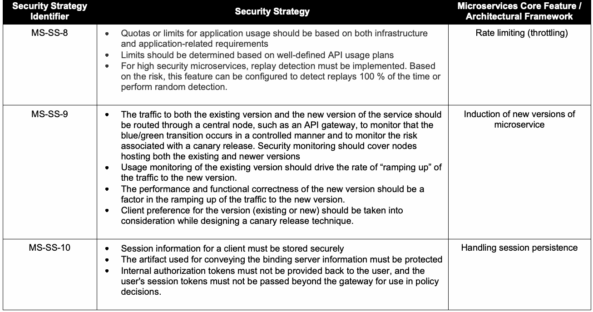
| セキュリティ戦略 | セキュリティ戦略 | マイクロサービスのコア機能 / |
| 識別子 | アーキテクチャフレームワーク | |
| MS-SS-8 | • アプリケーション利用のクォータまたは制限は、インフラストラクチャとアプリケーション関連の双方の要件に基づくべきである。 • 制限は明確に定義されたAPI利用計画に基づいて決定されるべきである。 • 高セキュリティのマイクロサービスでは、リプレイ検知を実装しなければならない。リスクに基づいて、この機能はリプレイを100 %検知するように設定することも、ランダムな検知を実行するように設定することもできる。 | レート制限（スロットリング） |
| MS-SS-9 | • ブルー/グリーン移行が制御された方法で行われることを監視し、カナリアリリースに関連するリスクを監視するために、サービスの既存バージョンと新バージョンの双方へのトラフィックはAPIゲートウェイなどの中央ノードを経由してルーティングされるべきである。セキュリティ監視は既存バージョンと新しいバージョンの双方をホストするノードを網羅すべきである。 • 既存バージョンの利用状況監視によって、新バージョンへのトラフィックの「ランプアップ（段階的増量）」のレートを推進すべきである。 • 新バージョンのパフォーマンスと機能の正確性は、新バージョンへのトラフィックのランプアップにおける要因であるべきである。 • カナリアリリース手法の設計にあたっては、バージョン（既存または新規）に対するクライアントの選好を考慮に入れるべきである。 | マイクロサービスの新バージョンの導入 |
| MS-SS-10 | • クライアントのセッション情報は安全に保存されなければならない。 • バインディングサーバ情報の伝達に使用されるアーティファクトは保護されなければならない。 • 内部認可トークンはユーザーに返却されてはならず、ユーザーのセッショントークンはポリシー決定での使用のためにゲートウェイを越えて渡されてはならない。 | セッション永続性の処理 |
38
未レビュー訳| Security Strategy | Security Strategy | Microservices Core Feature / |
| Identifier | Architectural Framework | |
| MS-SS-11 | • A run-time prevention strategy for credential abuse is preferable to an offline strategy. A threshold for a designated time interval from a given location (e.g., IP address) for the number of login attempts should be established; if the threshold is exceeded, preventive measures must be triggered by the authentication/authorization server. This feature must be present when a bearer token is used, to detect its reuse and enforce prevention. • A credential-stuffing detection solution has the capability to check user logins against the stolen credential database and warn legitimate users that their credentials have been stolen. • Configure IDS and boundary devices to detect the following: (a) a denial of service attack and raise an alert before the service is no longer accessible, and (b) a distributed network probe. • Configure service hosts to scan file uploads and the contents of each container's memory and file system for resident malware threats. | Preventing credential abuse and stuffing attacks |
| MS-SS-12 | • Integrate the API gateway with an identity management application to provision credentials before activating the API. • When identity management is invoked through the API gateway, connectors should be provided for integrating with identity providers (IdPs). • The API gateway should have a connector to an artifact that can generate an access token for the client request (e.g., OAuth 2.0 Authorization Server). • Securely channel all traffic information to a monitoring and/or analytics application for detecting attacks (e.g., denial of service, malicious actions) and unearthing explanations for degrading performance. • Distributed gateway deployments (or a combination of initial gateway (that intercepts all client accesses) and microgateways (closer to microservices)) should have a token translation (exchange) service [18] between gateways. The token presented to the initial gateway should have permissions with a broad scope whereas the token presented to inside gateways (or microgateways) should be more narrowly scoped with specific permissions or an entirely different token type that is appropriate for the target microservice platform. This helps to implement the least privilege paradigm. | API gateway configuration |
原本PDFの抜粋画像
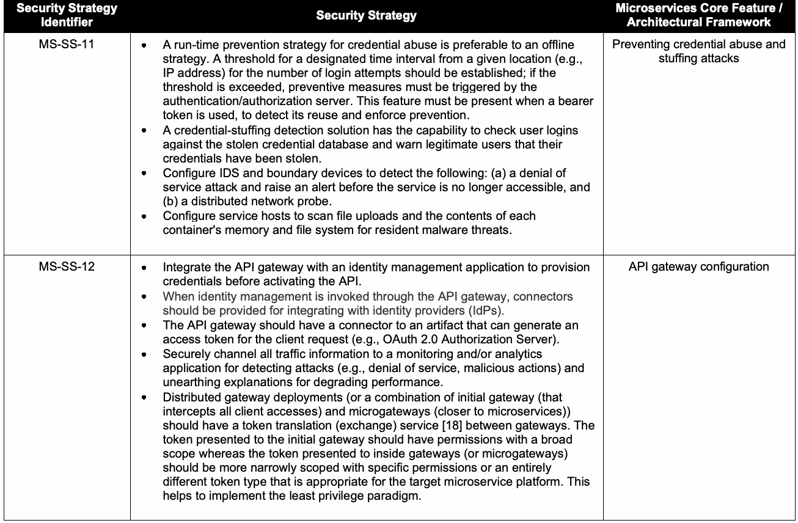
| セキュリティ戦略 | セキュリティ戦略 | マイクロサービスのコア機能／ |
| 識別子 | アーキテクチャフレームワーク | |
| MS-SS-11 | • クレデンシャル悪用のランタイム防止戦略は、オフライン戦略よりも望ましい。特定の場所（例：IPアドレス）からの指定された時間間隔におけるログイン試行回数のしきい値を設定すべきである。しきい値を超えた場合、認証／認可サーバーによって防止策がトリガーされなければならない。この機能は、ベアラートークンが使用されている場合に、その再利用を検知して防止を強制するために存在していなければならない。 • クレデンシャルスタッフィング検知ソリューションには、盗難されたクレデンシャルデータベースとユーザーログインを照合し、正規ユーザーに対してクレデンシャルが盗難されたことを警告する機能がある。 • 次の事項を検知するようにIDSおよび境界デバイスを設定する：(a) サービス拒否攻撃を検知し、サービスにアクセスできなくなる前にアラートを発報すること、および (b) 分散ネットワークプローブ。 • ファイルのアップロードや、各コンテナのメモリおよびファイルシステムの内容をスキャンして常駐するマルウェアの脅威を検出するようにサービスホストを設定する。 | クレデンシャルの悪用およびスタッフィング攻撃の防止 |
| MS-SS-12 | • APIをアクティブ化する前にクレデンシャルをプロビジョニングするため、APIゲートウェイをID管理アプリケーションと統合する。 • APIゲートウェイを介してID管理が呼び出される場合、IDプロバイダー（IdP）と統合するためのコネクタを提供すべきである。 • APIゲートウェイは、クライアント要求に対するアクセストークンを生成できるアーティファクト（例：OAuth 2.0認可サーバー）へのコネクタを備えているべきである。 • 攻撃（例：サービス拒否、悪意あるアクション）の検知やパフォーマンス低下の原因究明のために、すべてのトラフィック情報を監視アプリケーションや分析アプリケーションに安全に送信する。 • 分散ゲートウェイ展開（または、すべてのクライアントアクセスをインターセプトする初期ゲートウェイと、マイクロサービスに近いマイクロゲートウェイの組み合わせ）では、ゲートウェイ間にトークン変換（交換）サービス [18] を備えているべきである。初期ゲートウェイに提示されるトークンは広範なスコープの権限を持つべきであるのに対し、内部ゲートウェイ（またはマイクロゲートウェイ）に提示されるトークンは、特定の権限を持つより狭いスコープのもの、あるいはターゲットとなるマイクロサービスプラットフォームに適した完全に異なるトークンタイプであるべきである。これは最小権限のパラダイムの実装に役立つ。 | APIゲートウェイの構成 |
原本PDFの抜粋画像
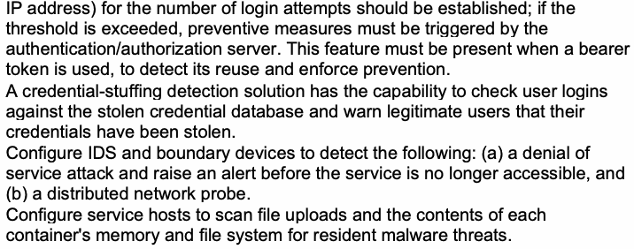
39
未レビュー訳| Security Strategy | Security Strategy | Microservices Core Feature / |
| Identifier | Architectural Framework | |
| MS-SS-13 | • Policy support should be enabled for: (a) designating a specific communication protocol between pairs of services and (b) specifying the traffic load between pairs of services based on application requirements • The default configuration should always be to enable access control policies for all services • Avoid configurations that may lead to privilege escalation (e.g., the service role permissions and binding of the service role to service user accounts) • Service mesh deployments should have configuration capabilities to specify resource usage limits for its components. The absence of this feature creates the potential for these components to impact the resiliency and availability of the overall microservices application. • Service mesh deployments should have configuration capabilities to collect and send environment metrics, including request metrics, to a centralized service for monitoring. Policies should allow for specifying either a single service mesh or multiple service meshes (each with their own control plane) for multi-cluster microservices environments to ensure high availability and resiliency in those scenarios. • For highly sensitive microservices-based applications, Layer 3 network segmentation must be configured within the orchestrator platform to complement the Layer 5 network segmentation achieved throughout the service mesh layer. This is a countermeasure to the threat by malicious actors circumventing or bypassing the sidecar proxy that the service mesh uses for firewalling and blocking network traffic. | Service mesh configuration |
原本PDFの抜粋画像
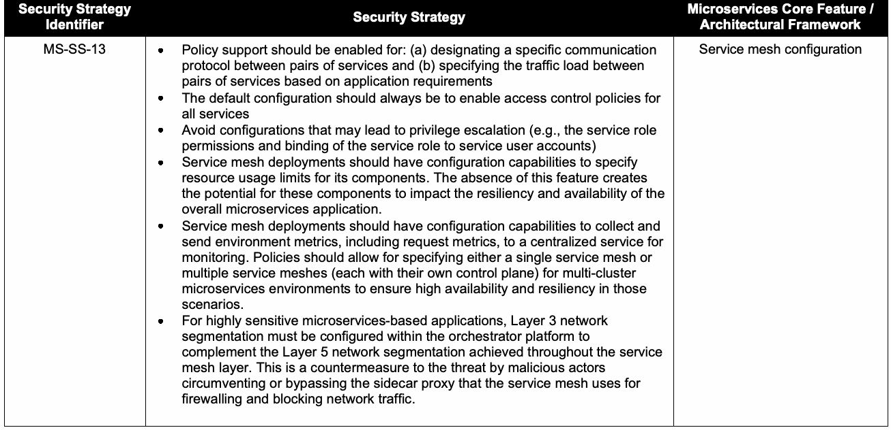
| セキュリティ戦略 | セキュリティ戦略 | マイクロサービスコア機能 / |
| 識別子 | アーキテクチャフレームワーク | |
| MS-SS-13 | • (a) サービスペア間の特定の通信プロトコルの指定、および (b) アプリケーション要件に基づくサービスペア間のトラフィック負荷の指定、に対するポリシーサポートを有効にすべきである • デフォルト設定は、常にすべてのサービスに対するアクセス制御ポリシーを有効にすることであるべきである • 特権昇格につながる可能性のある設定（例: サービスロールの権限やサービスユーザーアカウントへのサービスロールのバインド）を回避すること • サービスメッシュの展開では、そのコンポーネントのリソース使用制限を指定する構成機能を持つべきである。この機能がない場合、これらのコンポーネントがマイクロサービスアプリケーション全体の回復力と可用性に影響を与える可能性がある。 • サービスメッシュの展開では、リクエストメトリクスを含む環境メトリクスを収集し、監視のための中央サービスに送信する構成機能を持つべきである。ポリシーでは、マルチクラスタのマイクロサービス環境においてそれらのシナリオでの高可用性と回復力を確保するために、単一のサービスメッシュまたは複数のサービスメッシュ（それぞれ独自のコントロールプレーンを持つ）のいずれかを指定できるようにすべきである。 • 機密性の極めて高いマイクロサービスベースのアプリケーションの場合、サービスメッシュレイヤー全体で達成されるLayer 5ネットワークセグメンテーションを補完するために、オーケストレータープラットフォーム内でLayer 3ネットワークセグメンテーションを構成しなければならない。これは、サービスメッシュがファイアウォール処理およびネットワークトラフィックのブロックに使用するサイドカープロキシを悪意のあるアクターが迂回またはバイパスする脅威への対策である。 | サービスメッシュの構成 |
40
未レビュー訳Appendix C—References
付録C—参考文献
未レビュー訳[1] Sill A (2016) The design and architecture of microservices. IEEE Cloud Computing
[1] Sill A (2016) The design and architecture of microservices. IEEE Cloud Computing
未レビュー訳3(5):76-80. https://doi.org/10.1109/MCC.2016.111
3(5):76-80. https://doi.org/10.1109/MCC.2016.111
未レビュー訳[2] Richardson C, Smith F (2016) Microservices: From design to deployment (NGINX Inc.). Available at https://www.nginx.com/resources/library/designing-deploying-
[2] Richardson C, Smith F (2016) Microservices: From design to deployment (NGINX Inc.). Available at https://www.nginx.com/resources/library/designing-deploying-
未レビュー訳microservices/
microservices/
未レビュー訳[3] TechTarget (n.d.) Comparing two schools of application development: Traditional vs.
[3] TechTarget (n.d.) Comparing two schools of application development: Traditional vs.
未レビュー訳Cloud-Native. Available at https://searchcloudcomputing.techtarget.com/PaaS/Comparing-Two-Schools-of-Application-Development-Traditional-vs-Cloud-Native
Cloud-Native. https://searchcloudcomputing.techtarget.com/PaaS/Comparing-Two-Schools-of-Application-Development-Traditional-vs-Cloud-Native から入手可能
未レビュー訳[4] Richardson C (2015) Building microservices: Using an API gateway. Available at https://www.nginx.com/blog/building-microservices-using-an-api-gateway/
[4] Richardson C (2015) Building microservices: Using an API gateway. https://www.nginx.com/blog/building-microservices-using-an-api-gateway/ から入手可能
未レビュー訳[5] Palladino M (2016) Microservices and API gateway, Part 1: Why an API gateway? Available at https://shadrin.org/nginx/blog/content/microservices-api-gateways-part-1-
[5] Palladino M (2016) Microservices and API gateway, Part 1: Why an API gateway? https://shadrin.org/nginx/blog/content/microservices-api-gateways-part-1- から入手可能
未レビュー訳why-an-api-gateway.html
why-an-api-gateway.html
未レビュー訳[6] Jander K, Braubach L, Pokahr A (2018) Defense in-depth and role authentication for
[6] Jander K, Braubach L, Pokahr A (2018) Defense in-depth and role authentication for
未レビュー訳microservice systems. Procedia Computer Science 130:456-463. https://doi.org/10.1016/j.procs.2018.04.047
microservice systems. Procedia Computer Science 130:456-463. https://doi.org/10.1016/j.procs.2018.04.047
未レビュー訳[7] Richardson C (2015) Building microservices: Inter-process communication in a microservices architecture. Available at https://www.nginx.com/blog/building-
[7] Richardson C (2015) Building microservices: Inter-process communication in a microservices architecture. https://www.nginx.com/blog/building- から入手可能
未レビュー訳microservices-inter-process-communication/
microservices-inter-process-communication/
未レビュー訳[8] Harms H, Rogowski C, Lo Iacono L (2017) Guidelines for adopting frontend
[8] Harms H, Rogowski C, Lo Iacono L (2017) Guidelines for adopting frontend
未レビュー訳architectures and patterns in microservices-based systems. Proceedings of the 2017 11th Joint Meeting on Foundations of Software Engineering (ACM, Paderborn, Germany), pp 902-907. https://doi.org/10.1145/3106237.3117775
architectures and patterns in microservices-based systems. Proceedings of the 2017 11th Joint Meeting on Foundations of Software Engineering (ACM, Paderborn, Germany), pp 902-907. https://doi.org/10.1145/3106237.3117775
未レビュー訳[9] Montesi F, Weber J (2016) Circuit breakers, discovery, and API gateways in microservices. arXiv preprint. https://arxiv.org/abs/1609.05830v2
[9] Montesi F, Weber J (2016) Circuit breakers, discovery, and API gateways in microservices. arXiv preprint. https://arxiv.org/abs/1609.05830v2
未レビュー訳[10] O’Neill M, Malinverno P (2018) Critical capabilities for full life cycle API management.
[10] O’Neill M, Malinverno P (2018) Critical capabilities for full life cycle API management.
(Gartner, Stamford, CT), ID G00334223. Available at https://www.gartner.com/doc/reprints?id=1-51SE2EK&ct=180601&st=sb
(Gartner, Stamford, CT), ID G00334223. Available at https://www.gartner.com/doc/reprints?id=1-51SE2EK&ct=180601&st=sb
未レビュー訳[11] Calcote L (2018) The enterprise path to service mesh architectures (O’Reilly Media,
[11] Calcote L (2018) The enterprise path to service mesh architectures (O’Reilly Media,
未レビュー訳Sebastopol, CA).
Sebastopol, CA).
未レビュー訳41
未レビュー訳[12] Twistlock (n.d.) Securing the service mesh: Understanding the value of service meshes, why Istio is rising in popularity, and exploring official Twistlock compliance checks for Istio. Available at https://www.twistlock.com/resources/securing-service-mesh-istio-
[12] Twistlock (n.d.) サービスメッシュの保護：サービスメッシュの価値、Istioの人気が高まっている理由を理解し、Istio向けのTwistlock公式コンプライアンスチェックを調査する。入手先：https://www.twistlock.com/resources/securing-service-mesh-istio-
未レビュー訳compliance-checks/
compliance-checks/
未レビュー訳[13] Yarygina T, Bagge, AH (2018). Overcoming security challenges in microservice architecture. Proceedings of 2018 IEEE Symposium on Service-Oriented System
[13] Yarygina T, Bagge, AH (2018). マイクロサービスアーキテクチャにおけるセキュリティ課題の克服。2018 IEEE Symposium on Service-Oriented System の議事録
未レビュー訳Engineering (IEEE, Bamberg, Germany), pp 11-20. https://doi.org/10.1109/SOSE.2018.00011
Engineering (IEEE, Bamberg, Germany), pp 11-20. https://doi.org/10.1109/SOSE.2018.00011
未レビュー訳[14] OpenID (2019) Welcome to OpenID Connect. Available at https://openid.net/connect/
[14] OpenID (2019) OpenID Connectへようこそ。入手先：https://openid.net/connect/
未レビュー訳[15] Hardt D (ed.) (2012) The OAuth 2.0 authorization framework. (Internet Engineering Task Force), IETF Request for Comments (RFC) 6749. https://doi.org/10.17487/RFC6749
[15] Hardt D (ed.) (2012) The OAuth 2.0 authorization framework. (Internet Engineering Task Force), IETF Request for Comments (RFC) 6749. https://doi.org/10.17487/RFC6749
未レビュー訳[16] NGINX (n.d.) High-performance load balancing: Scale out your applications with NGINX and NGINX Plus. Available at https://www.nginx.com/products/nginx/load-
[16] NGINX (n.d.) 高性能ロードバランシング：NGINXおよびNGINX Plusでアプリケーションをスケールアウト。入手先：https://www.nginx.com/products/nginx/load-
未レビュー訳balancing/
balancing/
未レビュー訳[17] Katz O (2017) Improving credential abuse threat mitigation. Available at
[17] Katz O (2017) Improving credential abuse threat mitigation. 入手先:
未レビュー訳https://blogs.akamai.com/2017/01/improving-credential-abuse-threat-mitigation.html
https://blogs.akamai.com/2017/01/improving-credential-abuse-threat-mitigation.html
未レビュー訳[18] Jones M, Nadalin A, Campbell B (ed.), Bradley J, Mortimore C (2018) OAuth 2.0 token exchange. (Internet Engineering Task Force), IETF Internet-Draft. Available at
[18] Jones M, Nadalin A, Campbell B (ed.), Bradley J, Mortimore C (2018) OAuth 2.0 token exchange. (Internet Engineering Task Force), IETF Internet-Draft. 入手先:
未レビュー訳https://datatracker.ietf.org/doc/draft-ietf-oauth-token-exchange/
https://datatracker.ietf.org/doc/draft-ietf-oauth-token-exchange/
未レビュー訳[19] Lodderstedt T, Bradley J, Labunets A, Fett D (2019) OAuth 2.0 security best current practice. (Internet Engineering Task Force), IETF Internet-Draft. Available at
[19] Lodderstedt T, Bradley J, Labunets A, Fett D (2019) OAuth 2.0 security best current practice. (Internet Engineering Task Force), IETF Internet-Draft. 入手先:
未レビュー訳https://datatracker.ietf.org/doc/draft-ietf-oauth-security-topics/
https://datatracker.ietf.org/doc/draft-ietf-oauth-security-topics/
未レビュー訳[20] Jain J (2015) HTTP verb tempering: Bypassing web authentication and authorization. Available at https://resources.infosecinstitute.com/http-verb-tempering-bypassing-web-
[20] Jain J (2015) HTTP verb tempering: Bypassing web authentication and authorization. 入手先: https://resources.infosecinstitute.com/http-verb-tempering-bypassing-web-
未レビュー訳authentication-and-authorization/
authentication-and-authorization/
未レビュー訳42
未レビュー訳